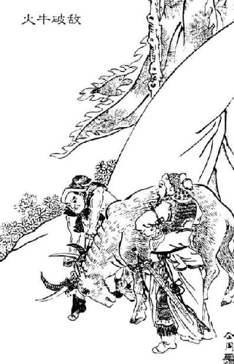
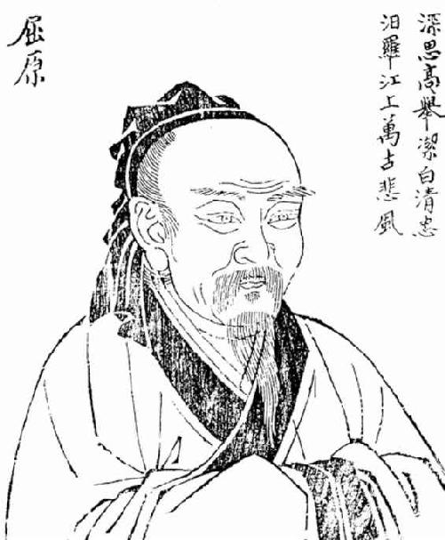
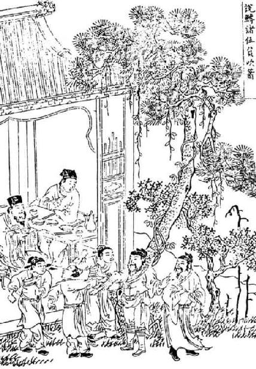
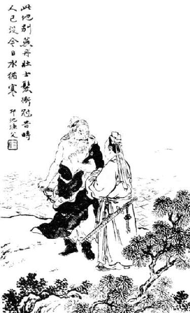

卷八十一 廉颇蔺相如列传第二十一
朱熹：“和氏璧乃赵国世传之宝，若骤然被人夺，则国势亦不振矣。古人传国，皆以宝玉之属为重，若子孙不能谨守，即为不孝。当时秦王虽强，相如亦料其不敢杀己，若在他人则惧秦而不敢去矣，相如岂孟浪作事者哉！”苏辙：“相如非战国之士也，以死行义，而不屈于强秦；以礼为国，而不校于廉颇。其处刚柔进退之际，颇类学道者。使居平世，可以为天子大臣矣。”
廉颇者，赵之良将也。赵惠文王十六年，廉颇为赵将伐齐，大破之，取阳晋，拜为上卿，以勇气闻于诸侯。蔺相如者，赵人也，为赵宦者令缪贤舍人。
赵惠文王时，得楚和氏璧。秦昭王闻之，使人遗赵王书，愿以十五城请易璧。赵王与大将军廉颇诸大臣谋：欲予秦，秦城恐不可得，徒见欺；欲勿予，即患秦兵之来。计未定，求人可使报秦者，未得。宦者令缪贤曰：“臣舍人蔺相如可使。”王问：“何以知之？”对曰：“臣尝有罪，窃计欲亡走燕，臣舍人相如止臣，曰：‘君何以知燕王？’臣语曰：‘臣尝从大王与燕王会境上，燕王私握臣手，曰“愿结友”。以此知之，故欲往。’相如谓臣曰：‘夫赵强而燕弱，而君幸于赵王，故燕王欲结于君。今君乃亡赵走燕，燕畏赵，其势必不敢留君，而束君归赵矣。君不如肉袒【肉袒：脱去上衣，露出上身。】 伏斧质【斧质：古代杀人用的刑具。质，同“锧”，铁砧板。】 请罪，则幸得脱矣。’臣从其计，大王亦幸赦臣。臣窃以为其人勇士，有智谋，宜可使。”于是王召见，问蔺相如曰：“秦王以十五城请易寡人之璧，可予不【不：通“否”。】 ？”相如曰：“秦强而赵弱，不可不许。”王曰：“取吾璧，不予我城，奈何？”相如曰：“秦以城求璧而赵不许，曲在赵。赵予璧而秦不予赵城，曲在秦。均之二策，宁许以负秦曲。”王曰：“谁可使者？”相如曰：“王必无人，臣愿奉璧往使。城入赵而璧留秦；城不入，臣请完璧归赵。”赵王于是遂遣相如奉璧西入秦。
廉颇，是赵国的优秀将领。赵惠文王十六年（前283年），廉颇作为赵国的主将带领军队攻打齐国，把齐国的军队打得大败，占领了阳晋城，被赵王任命为上卿，以作战勇敢闻名于诸侯。蔺相如，是赵国人，在赵国宦者令缪贤的家里做门客。
赵惠文王在位的时候，得到了楚国的和氏璧。秦昭王听说这件事之后，派人给赵王送去了一封信，说他愿意拿出十五座城池换和氏璧。赵王跟大将军廉颇以及诸位大臣商量：想要把和氏璧交给秦国，又怕得不到秦国的城池，白白地被人欺骗；想不把和氏璧交给秦国吧，又怕秦国派兵来攻打赵国。对策没有商量好，想找一个可以去回复秦王的使者，没有找到。宦者令缪贤说：“我有个名叫蔺相如的门客可以出使秦国。”赵王问：“你如何知道他可以？”缪贤回答道：“我曾犯下罪过，暗自盘算想着逃到燕国去，我的门客蔺相如阻止我，说：‘您如何知道燕王肯定会收留您？’我对他说：‘我曾随从大王在边境会见燕王，燕王私下握着我手，说“愿意同您做朋友”。我因此知道他能收留我，所以想到燕国去。’蔺相如对我说：‘赵国强大而燕国弱小，而您又受到赵王的宠幸，所以燕王才想跟您交朋友。如今您竟然要从赵国逃到燕国，燕国畏惧赵国，燕王势必不敢收留您，而且会把您用绳子捆起来送回赵国。您不如光着上身，趴在刀斧的下面，请求大王治您的罪，或许可以侥幸逃脱死罪。’我听从他的意见，大王也开恩赦免了我的罪过。我私下觉得这个人算得上一位勇士，有才智谋略，适合做出使秦国的使者。”于是赵王召见，问蔺相如：“秦王拿出十五座城池交换我的和氏璧，能不能给他？”蔺相如说：“秦国强大而赵国弱小，不可以不答应它的请求。”赵王又说：“但是秦王如果要了我的和氏璧，却不把十五座城池给我，又该怎么办？”蔺相如对赵王说道：“秦国要求用城池来换赵国的宝玉，赵国如果不答应，那么赵国就理亏。赵国把宝玉给了秦国，如果秦国不把城池给赵国，那么秦国理亏。这两个对策衡量一下，宁可答应秦国的要求，让秦国来承担理亏的责任。”赵王说：“谁可以做出使秦国的使者呢？”蔺相如说：“大王如果真的没有人选，我愿意捧着宝玉前往出使。如果城池归属赵国，就把宝玉留在秦国；如果城池没有归属赵国，我一定会把和氏璧完整无缺地带回赵国。”赵王于是派遣蔺相如手捧和氏璧西行进入秦国。
秦王坐章台见相如，相如奉璧奏秦王。秦王大喜，传以示美人【美人：指妃嫔、姬妾。】 及左右，左右皆呼万岁。相如视秦王无意偿赵城，乃前曰：“璧有瑕，请指示王。”王授璧，相如因持璧却立，倚柱，怒发上冲冠，谓秦王曰：“大王欲得璧，使人发书至赵王，赵王悉召群臣议，皆曰‘秦贪，负其强，以空言求璧，偿城恐不可得’。议不欲予秦璧。臣以为布衣之交【布衣之交：平民交友。】 尚不相欺，况大国乎！且以一璧之故逆强秦之欢，不可。于是赵王乃斋戒五日，使臣奉璧，拜送书于庭。何者？严大国之威以修敬也。今臣至，大王见臣列观，礼节甚倨；得璧，传之美人，以戏弄臣。臣观大王无意偿赵王城邑，故臣复取璧。大王必欲急臣，臣头今与璧俱碎于柱矣！”相如持其璧睨nì柱，欲以击柱。秦王恐其破璧，乃辞谢固请，召有司案图，指从此以往十五都予赵。相如度秦王特以诈详为予赵城，实不可得，乃谓秦王曰：“和氏璧，天下所共传宝也，赵王恐，不敢不献。赵王送璧时，斋戒五日，今大王亦宜斋戒五日，设九宾【九宾：古时外交上最隆重的礼仪，由九名迎宾人员依次传呼接引宾客上殿。】 于廷，臣乃敢上璧。”秦王度之，终不可强夺，遂许斋五日，舍相如广成传。相如度秦王虽斋，决负约不偿城，乃使其从者衣褐【褐：粗麻布短衣。】 ，怀其璧，从径道亡，归璧于赵。
秦王坐在章台上接见了蔺相如，蔺相如捧着和氏璧献给秦王。秦王十分高兴，把和氏璧传给后宫的美女以及左右的侍从观赏，左右的侍从都大喊“万岁”。蔺相如见秦王并没有把城池抵偿给赵国的意思，就向前走了几步说：“这块美玉上面有一点点瑕疵，请让我指出来给您看。”秦王于是就把和氏璧交给了蔺相如，蔺相如于是拿着和氏璧向后退了几步站好，背靠着宫殿中的柱子，气得头发直立，把帽子都顶了起来，对秦王说：“大王想要和氏璧，派遣使者送了一封书信给赵王，赵王召集全体大臣商议，大臣们都说‘秦国贪得无厌，倚仗国家强大，想用空话得到和氏璧，秦国的城池恐怕不能得到’。商量的结果是不想把和氏璧给秦国。我觉得就算是平民百姓之间的交往尚且不互相欺骗，何况是大国呢！而且由于一块璧玉的原因，就违逆强大的秦国的意思，让它不高兴，也是不应该的。于是赵王斋戒了五天，派遣我手捧和氏璧，在大殿上恭敬地拜送国书。为什么这样做呢？是尊重大国的威望来表示敬意啊。现在我来到秦国，大王却在章台这样普通的地方接见我，迎接使者的礼节也很轻率傲慢；大王在得到和氏璧之后，还传给后宫的美人观看，用这样的手段来戏弄我。我看大王没有给赵王十五城的诚意，所以我收回和氏璧。如果大王一定要逼迫我，那我的脑袋今天就跟和氏璧一起在这柱子上撞得粉碎！”蔺相如握着那和氏璧，眼睛斜视着柱子，想要和它一起撞向柱子。秦王恐怕他会把和氏璧撞得粉碎，就向蔺相如道歉，坚决请求蔺相如不要那么做，并召来管理图册典籍的官员打开地图察看，指出从这里某地到那里某地的十五座城池都交给赵国。蔺相如猜测秦王只不过是特地用这种手段假装把城池给赵国，实际上是无法得到的，于是对秦王说道：“和氏璧，是天下公认的宝物，赵王害怕秦国，不敢不把它献出来。赵王在献出和氏璧之前，斋戒了五天的时间，如今大王也应该斋戒五天，在殿堂上安排九宾大典，我才敢把和氏璧献给大王。”秦王内心揣度，毕竟不可以强夺和氏璧，就许诺斋戒五天，把蔺相如安排在广成馆舍住下。蔺相如猜测秦王即使会斋戒五天，也绝对会背弃自己的诺言，不肯把十五座城池补偿给赵国，就让他的随从穿上粗布衣服，把和氏璧藏在怀里，从小路逃出秦国，将和氏璧送回赵国。
凌稚隆：“相如渑池之会，如请秦王击缶，如召赵御史书，如请咸阳为寿，一一与之相匹，无纤毫挫于秦，一时勇敢之气，真足以褫秦人之魄者，太史公每于此等处，更着精神。”
秦王斋五日后，乃设九宾礼于廷，引赵使者蔺相如。相如至，谓秦王曰：“秦自缪公【缪公：即穆公。缪，通“穆”。】 以来二十余君，未尝有坚明约束者也。臣诚恐见欺于王而负赵，故令人持璧归，间至赵矣。且秦强而赵弱，大王遣一介之使至赵，赵立奉璧来。今以秦之强而先割十五都予赵，赵岂敢留璧而得罪于大王乎？臣知欺大王之罪当诛，臣请就汤镬【汤镬：开水锅。古代有一种酷刑，即把人投入开水锅中煮死。】 ，唯大王与群臣孰计议之。”秦王与群臣相视而嘻。左右或欲引相如去，秦王因曰：“今杀相如，终不能得璧也，而绝秦赵之欢，不如因而厚遇之，使归赵，赵王岂以一璧之故欺秦邪！”卒廷见相如，毕礼而归之。相如既归，赵王以为贤大夫使不辱于诸侯，拜相如为上大夫。秦亦不以城予赵，赵亦终不予秦璧。
其后秦伐赵，拔石城。明年，复攻赵，杀二万人。
秦王斋戒了五天，在殿堂上安排九宾大礼，请来赵国使者蔺相如。蔺相如到来，对秦王说道：“秦国自秦穆公以来的二十多位国君，不曾有一个能够坚守盟约的。我实在还怕受到大王的欺骗，进而辜负了赵王，所以就让人拿着和氏璧返回，走小路到了赵国。况且秦国是强国，赵国是弱国，大王派遣一位使臣到赵国去，赵国马上就把和氏璧送到秦国来。如今秦国凭借强大的实力，先把十五座城池交割给赵国，赵国难道还敢冒着得罪大王的危险把和氏璧留下来吗？我明白欺骗大王的罪过应当被处以死行，我甘愿遭受汤镬的刑罚，希望大王和群臣认真地考虑一下这件事情。”秦王和文武大臣全都面面相觑，嘴里发出了惊讶的叫声。秦王身边的侍从有人想要把蔺相如拉到外面去，秦王借这个机会说：“今天就算杀了蔺相如，最终也无法得到和氏璧了，反而会因此断绝秦、赵两国之间的融洽关系，不如趁这个机会给予他优厚的待遇，让他回到赵国去，赵王难道会因为一块和氏璧的缘故而欺骗秦国吗！”最终，秦王还是在朝堂接见了蔺相如，完成仪式后让他回国。蔺相如回到赵国以后，赵王觉得他是一位贤能的大夫，作为使臣出使而没有受到诸侯的羞辱，于是就任命蔺相如做了上大夫。秦国也没有把十五座城池交割给赵国，赵国最终也没有把和氏璧送到秦国。
后来秦国出兵攻打赵国，夺取了石城。第二年，秦国又一次进攻赵国，杀死了赵国两万士卒。
秦王使使者告赵王，欲与王为好会于西河外渑池。赵王畏秦，欲毋行。廉颇、蔺相如计曰：“王不行，示赵弱且怯也。”赵王遂行，相如从。廉颇送至境，与王诀曰：“王行，度道里【道里：路程。】 会遇之礼毕，还，不过三十日。三十日不还，则请立太子为王，以绝秦望。”王许之，遂与秦王会渑池。秦王饮酒酣，曰：“寡人窃闻赵王好音，请奏瑟。”赵王鼓瑟。秦御史前书曰“某年月日，秦王与赵王会饮，令赵王鼓瑟”。蔺相如前曰：“赵王窃闻秦王善为秦声，请奏盆缻【缻：同“缶”，盛酒浆的瓦器。】 秦王，以相娱乐。”秦王怒，不许。于是相如前进缻，因跪请秦王。秦王不肯击缻。相如曰：“五步之内，相如请得以颈血溅大王矣！”左右欲刃相如，相如张目叱之，左右皆靡。于是秦王不怿，为一击缻。相如顾召赵御史书曰“某年月日，秦王为赵王击缻”。秦之群臣曰：“请以赵十五城为秦王寿【寿：献礼祝寿。】 。”蔺相如亦曰：“请以秦之咸阳为赵王寿。”秦王竟酒，终不能加胜于赵。赵亦盛设兵以待秦，秦不敢动。
秦王派使者通告赵王，说他想跟赵王在位于西河以外的渑池进行一次友好会面。赵王畏惧秦国，想不去。廉颇、蔺相如跟赵王商议说：“大王如果不去，就显得赵国既软弱又胆小。”赵王于是起程赴会，蔺相如随行。廉颇把赵王送到赵国的边境，与赵王诀别说：“大王此行，估算的行程以及会见礼节从开始到完毕的时间，再加上返回的时间，不会超出三十天。如果过了三十天您没有回到赵国，就请拥立太子为王，来断绝秦国用您来要挟赵国的想法。”赵王答应了，就和秦王在渑池相会。秦王在喝酒喝到高兴的时候，说：“我私下听说赵王喜欢音乐，请您弹瑟。”赵王就弹起瑟来。秦国的史官走上前在简册上写道“某年某月某日，秦王和赵王在一起饮酒，秦王命令赵王弹瑟”。蔺相如走到秦王面前说道：“赵王也在私下听说秦王善于演奏秦国的音乐，请让我为秦王献上盆缻，您也来演奏一曲，借此来互相娱乐。”秦王生气了，没有答应蔺相如的请求。这时，蔺相如用手捧着缻走到秦王面前，借势下跪请求秦王演奏。秦王不肯击缻。蔺相如对秦王说道：“在这五步之内，我蔺相如要把脖颈里的血溅在大王身上了！”秦王身边的侍从想要拔出武器杀了蔺相如，蔺相如睁大双眼冲着他们大喊了一声，侍从吓得全都倒退。秦王很不高兴，就为赵王敲了一下缻。蔺相如回过头把赵国的史官叫过来，让他写道“某年某月某日，秦王为赵王缶缻”。秦王手下的大臣都说：“请把赵国十五座城池拿出来作为祝寿的礼物献给秦王。”蔺相如就对这些大臣说道：“请把秦国的都城咸阳拿出来作为礼物为赵王祝寿。”直到酒席结束，秦王也终究没能压倒赵国。赵国也部署了大批的军队来防范秦国，秦国也不敢有什么举动。
既罢归国，以相如功大，拜为上卿，位在廉颇之右。廉颇曰：“我为赵将，有攻城野战之大功，而蔺相如徒以口舌为劳，而位居我上，且相如素贱人，吾羞，不忍为之下。”宣言曰：“我见相如，必辱之。”相如闻，不肯与会。相如每朝时，常称病，不欲与廉颇争列。已而相如出，望见廉颇，相如引车【引车：把车掉转方向。】 避匿。于是舍人相与谏曰：“臣所以去亲戚而事君者，徒慕君之高义也。今君与廉颇同列，廉君宣恶言而君畏匿之，恐惧殊甚，且庸人尚羞之，况于将相乎！臣等不肖，请辞去。”蔺相如固止之，曰：“公之视廉将军孰与秦王？”曰：“不若也。”相如曰：“夫以秦王之威，而相如廷叱之，辱其群臣，相如虽驽，独畏廉将军哉？顾吾念之，强秦之所以不敢加兵于赵者，徒以吾两人在也。今两虎共斗，其势不俱生。吾所以为此者，以先国家之急而后私仇也。”廉颇闻之，肉袒负荆【负荆：身背荆条，表示愿受责罚。】 ，因宾客至蔺相如门谢罪。曰：“鄙贱之人，不知将军宽之至此也。”卒相与欢，为刎颈之交【刎颈之交：誓同生死的好朋友。】 。
是岁，廉颇东攻齐，破其一军。居二年，廉颇复伐齐几，拔之。后三年，廉颇攻魏之防陵、安阳，拔之。后四年，蔺相如将而攻齐，至平邑而罢。其明年，赵奢破秦军阏与下。
渑池的会面结束以后，赵王回到国内，他认为蔺相如立下的功劳大，就任命他做了上卿，地位在廉颇之上。廉颇说：“我作为赵国的大将，立下了攻城野战的大功，而蔺相如只是凭着能说会道立下了一些功劳，地位却在我之上，况且蔺相如本来就是低贱之人，我对这样的事情感到羞耻，不能忍受在他之下。”并且对外宣扬说：“如果让我遇到蔺相如，我必定要羞辱他一番。”蔺相如听到廉颇的话以后，不肯跟廉颇见面。蔺相如每到上朝时，经常就以生病为借口躲在家里，不愿意跟廉颇争位次的先后。没多久，蔺相如坐着马车出门，在远处看到了廉颇，蔺相如赶紧让人掉转车头躲了起来。蔺相如家里的门客因此一起向他进言说：“我们离别亲人到这里来侍奉您的原因，只是由于倾慕您高尚的节义。如今您跟廉颇一同在朝堂上做官，廉颇在公开的场合对您恶言攻击，但您却因为害怕而躲着不敢见他，您的畏惧未免太过分了，普通人尚且觉得耻辱，何况是已经当上大将和相国的人呢！我们这些人没有才能，请让我们向您告辞离开这里。”蔺相如坚持劝他们留下来，说道：“在各位看来，廉将军跟秦王比起来，谁更强一些呢？”门客们说道：“廉将军比不上秦王啊。”蔺相如说：“秦王那样具有威势的人物，我都敢在秦国的朝堂上大声地斥责他，使秦国的大臣受到羞辱，我就算再愚笨，难道唯独畏惧廉颇将军吗？只不过我想到，实力强大的秦国之所以不敢发兵攻打赵国，就是因为赵国有我们两个人在啊。如今两只老虎斗在一处，那么它们势必不能够全都活下来。我之所以这么做，就是先考虑国家的危急，而后考虑个人的恩怨。”廉颇听到蔺相如这番话以后，就光着上身，背着荆条，让宾客把自己带到了蔺相如的家里去请罪。他说：“我是一个粗野低贱的人，不知道将军您是如此的宽容厚道。”最终，两个人和好，结成同生共死的好朋友。
就在这一年，廉颇带领军队向东进攻齐国，打败了齐国派出的一支军队。两年以后，廉颇再次率兵攻打齐国的几邑，占领了这座城。又过了三年，廉颇率兵进攻魏国的防陵、安阳，占领了这两座城。四年以后，蔺相如率领军队进攻齐国，打到平邑就收兵了。过了一年，赵奢在阏与城下把秦军打得大败。
赵奢者，赵之田部吏也。收租税而平原君家不肯出租，奢以法治之，杀平原君用事者九人。平原君怒，将杀奢。奢因说曰：“君于赵为贵公子，今纵君家而不奉公则法削，法削则国弱，国弱则诸侯加兵，诸侯加兵是无赵也，君安得有此富乎？以君之贵，奉公如法则上下平，上下平则国强，国强则赵固，而君为贵戚，岂轻于天下邪？”平原君以为贤，言之于王。王用之治国赋，国赋大平，民富而府库实。
秦伐韩，军于阏与。王召廉颇而问曰：“可救不？”对曰：“道远险狭，难救。”又召乐乘而问焉，乐乘对如廉颇言。又召问赵奢，奢对曰：“其道远险狭，譬之犹两鼠斗于穴中，将勇者胜。”王乃令赵奢将，救之。
赵奢，原本是赵国负责征收田税的官吏。他在征收租税的时候，平原君赵胜家不肯缴纳，赵奢就按照法律来处理这件事，杀死了平原君家管事的九个人。平原君十分生气，想杀死赵奢。赵奢就趁这个机会劝平原君说：“在赵国，您是贵族公子，现在纵容您的家臣不尊奉公家的法律，那么法令的威严就会被削弱，法令被削弱就会让国家变得衰弱，国家变得衰弱就会令诸侯出兵侵犯赵国，诸侯出兵侵犯赵国，赵国就无法继续存在了，您又怎能保有这些财富呢？以您如此尊贵的地位，能尊奉公家的法律就会使国家上下公平，国家上下公平就能够变得强大，国家强大了赵国的政权就会稳固，而您是赵国的贵戚，难道会被天下人轻视吗？”平原君认为赵奢是个贤能的人，就向赵王推荐了他。赵王让他管理全国的赋税，国家赋税就变得公平合理，老百姓生活富裕，国库也非常充实。
秦军进攻韩国，军队在阏与驻扎。赵王把廉颇召来询问道：“可以派兵去援救吗？”廉颇回答说：“道路很远，而且地势险要、狭窄，难以救援。”赵王又把乐乘召来询问，乐乘的回答与廉颇是一样的。赵王又召来赵奢进行询问，赵奢回答道：“那条路虽然很远，而且地势险要、狭窄，正像两只老鼠在洞穴里面争斗一样，谁更勇勐谁就能取得胜利。”赵王就派赵奢领兵，去援救阏与。
兵去邯郸三十里，而令军中曰：“有以军事谏者死。”秦军军武安西，秦军鼓噪【鼓噪：擂鼓呐喊。】 勒兵【勒兵：检阅或操练军队。】 ，武安屋瓦尽振。军中候有一人言急救武安，赵奢立斩之。坚壁，留二十八日不行，复益增垒。秦间来入，赵奢善食而遣之。间以报秦将，秦将大喜曰：“夫去国三十里而军不行，乃增垒，阏与非赵地也。”赵奢既已遣秦间，乃卷甲【卷甲：卸去铠甲。】 而趋之，二日一夜至，令善射者去阏与五十里而军。军垒成，秦人闻之，悉甲而至。军士许历请以军事谏，赵奢曰：“内之。”许历曰：“秦人不意赵师至此，其来气盛，将军必厚集其阵以待之。不然，必败。”赵奢曰：“请受令。”许历曰：“请就鈇质之诛。”赵奢曰：“胥【胥：通“须”，等待。】 后令邯郸。”许历复请谏，曰：“先据北山上者胜，后至者败。”赵奢许诺，即发万人趋之。秦兵后至，争山不得上，赵奢纵兵击之，大破秦军。秦军解而走，遂解阏与之围而归。
赵奢率领军队离开邯郸城三十里路，就向所有士兵发布命令说：“有人拿进军打仗的事情来向我进言的就处以死刑。”秦国军队驻扎在武安城的西面，他们击鼓呐喊、操练军队的声音，把武安城里屋顶上的瓦片都震动了。军中一位负责侦察敌军行动的斥候对赵奢说应该赶紧救援武安，赵奢立刻把他斩首。赵军坚守营寨，停留了二十八天没有前行，还增加了营寨中壁垒的高度。秦军的间谍潜入赵军营地，赵奢故意好吃好喝地款待他，然后送他离开。秦国的间谍把自己了解到的情况报告给秦军的主将，秦军主将十分高兴，说道：“赵军离开邯郸三十里就不再前进，竟然忙着巩固营寨的壁垒，阏与将不再是赵国的土地了。”赵奢在打发了秦军间谍之后，就命令全体士兵脱掉铠甲，快速向阏与进发，用了两天一夜的时间就到达阏与，让善于射箭的士兵在距离阏与五十里的地方驻扎。赵军的营垒建成，秦国人听说了这个消息，立刻全军赶来。有个名叫许历的军士请求拿军事方面的事情向赵奢进言，赵奢说：“让他进来。”许历对赵奢说道：“秦国人没有想到赵国军队会到达此地，敌军来势汹汹，将军您必须集中兵力，严阵以待。如果不这样的话，必然会失败。”赵奢对许历说道：“愿意接受您的指教。”许历说：“请让我接受死刑。”赵奢说道：“等我回到邯郸以后再下令吧。”许历又一次请求向赵奢进言，说：“能够抢先占领北面山头的一方获胜，后到的一定会被打败。”赵奢同意许历的意见，于是立刻派出一万人迅速攀登北面的山头。秦军后到，想要跟赵军争夺北面的山头，但没办法攻上去，赵奢指挥军队勐烈进攻，大败秦军。秦军四面逃散，于是阏与被围攻的局面得以解除，赵军返回邯郸。
赵惠文王赐奢号为马服君，以许历为国尉。赵奢于是与廉颇、蔺相如同位。
后四年，赵惠文王卒，子孝成王立。七年，秦与赵兵相距【距：通“拒”，抵御。】 长平，时赵奢已死，而蔺相如病笃，赵使廉颇将攻秦，秦数败赵军，赵军固壁不战。秦数挑战，廉颇不肯。赵王信秦之间。秦之间言曰：“秦之所恶，独畏马服君赵奢之子赵括为将耳。”赵王因以括为将，代廉颇。蔺相如曰：“王以名使括，若胶柱【胶柱：把卷弦的木柱粘死，无法调解弦的高低。柱，琴瑟类乐器上卷弦的木柱。比喻只守死法，不知变通。】 而鼓瑟耳。括徒能读其父书传，不知合变也。”赵王不听，遂将之。
赵括自少时学兵法，言兵事，以天下莫能当。尝与其父奢言兵事，奢不能难，然不谓善。括母问奢其故，奢曰：“兵，死地也，而括易言之。使赵不将括即已，若必将之，破赵军者必括也。”及括将行，其母上书言于王曰：“括不可使将。”王曰：“何以？”对曰：“始妾事其父，时为将，身所奉饭饮而进食者以十数，所友者以百数，大王及宗室所赏赐者尽以予军吏士大夫，受命之日，不问家事。今括一旦为将，东向而朝，军吏无敢仰视之者，王所赐金帛，归藏于家，而日视便利田宅可买者买之。王以为何如其父？父子异心，愿王勿遣。”王曰：“母置之，吾已决矣。”括母因曰：“王终遣之，即有如不称，妾得无随做【随坐：连坐。】 乎？”王许诺。
赵惠文王赐赵奢封号为马服君，又任命许历担任国尉。赵奢于是跟廉颇、蔺相如的地位相同。
四年后，赵惠文王死了，他的儿子孝成王继承了王位。赵孝成王七年（前259年），秦国军队和赵国军队在长平对峙，当时赵奢已经死去，而蔺相如也得了重病，赵孝成王派廉颇率领赵军进攻秦军，秦军好几次打败赵军，赵军于是坚守营垒，不与秦军交战。秦军多次向赵军挑衅，廉颇不肯出兵交战。赵王听信了秦国的间谍。秦国的间谍说：“秦国人所忌惮的，就是怕马服君赵奢的儿子赵括担任将军。”赵王因此任命赵括为将军，取代廉颇。蔺相如说：“大王根据名声来任用赵括，就像用胶把调弦的柱粘住再去弹瑟一样不知变通啊。赵括只会读他父亲留给他的那些兵书，不懂得灵活应变。”赵王不听，还是任命赵括做了主将。
赵括从很小的时候就开始学习兵法，谈到用兵之法，认为全天下都没人能与他相当。他曾经和父亲赵奢在一起谈论用兵的策略，赵奢难不倒他，但是也不说他好。赵括的母亲向赵奢询问其中的缘故，赵奢说：“打仗，是关系到人的生死的大事，但赵括却把它说得那么容易。假如赵王不任命赵括当主将也就算了，若是一定要任用他做赵军主将，那么让赵军被打败的人一定是他。”因此等到赵括即将出发的时候，赵括的母亲就给赵王写了一封信，说：“不可以让赵括当将军。”赵王问道：“为什么这么说？”赵括的母亲回答道：“当初我侍奉赵括的父亲，那时他是大将，由他亲自端着食物来招待吃喝的客人有几十人，他结交的朋友更是多达几百人，大王和王族给他的赏赐，他全都拿出来分给了手下的军官和谋士，接受命令的那天起，就不再过问家事。现在赵括刚刚做了将军，就面朝东方接受朝见，军官们没有一个敢抬着头看他的，大王赏赐给他的金钱、丝帛，他全都拿到家里收藏起来，而且每天都要看看哪里可以买到便宜又可以获利的田地和住房。大王觉得他哪一点像他的父亲呢？父亲和儿子的志向相异，所以希望大王不要任命他做大将。”赵王说：“您还是放下这件事不要管了，我已经决定了。”赵括的母亲借着这个机会说道：“大王一定要委任他做大将，那么假如他有不称职的罪责，我能不受株连吗？”赵王答应了。
赵括既代廉颇，悉更约束，易置军吏。秦将白起闻之，纵奇兵，详败走，而绝其粮道，分断其军为二，士卒离心。四十余日，军饿，赵括出锐卒自博战，秦军射杀赵括。括军败，数十万之众遂降秦，秦悉坑之。赵前后所亡凡四十五万。明年，秦兵遂围邯郸，岁余，几不得脱。赖楚、魏诸侯来救，乃得解邯郸之围。赵王亦以括母先言，竟不诛也。
自邯郸围解五年，而燕用栗腹之谋，曰“赵壮者尽于长平，其孤【孤：指死于长平之战的赵军士卒的遗孤。】 未壮”，举兵击赵。赵使廉颇将，击，大破燕军于鄗，杀栗腹，遂围燕。燕割五城请和，乃听之。赵以尉文封廉颇为信平君，为假【假：代理。】 相国。
赵括取代了廉颇以后，把军中的号令和规定全部改变，撤换军官。秦国的主将白起听说以后，派出了一支奇兵，假装被赵军打败而逃走，却截断了赵军的粮道，把赵军分割成两部分，赵国的士兵军心涣散。一连四十多天，赵军饥饿，赵括亲自带领精锐部队与秦军展开搏斗，秦军用弓箭射死赵括。赵括的军队被打得大败，几十万人投降了秦国，秦军把他们全部活埋。赵国从长平之战开始到结束，被杀死的士兵共计四十五万人。第二年，秦军继续进攻赵国，包围了邯郸城，围困了一年多，赵国几乎无法摆脱亡国的灾难。全靠楚国、魏国派兵救援，才得以解除邯郸之围。赵王也由于赵括的母亲有言在先，最终没有株连她。
邯郸之围解除以后，又过了五年，燕国采纳栗腹的计策，说“赵国的壮年男子都在长平战役中死去，他们留下来的孤儿还没有成年”，起兵攻打赵国。赵王派廉颇为大将，反击燕军，在鄗地把燕军打得大败，杀死栗腹，于是包围了燕国。燕国割让赵国五座城池来求和，赵王才答应了燕国的请求。赵王把尉文城作为封地赏赐给廉颇，封号是“信平君”，同时又让廉颇代理相国的职务。
廉颇之免长平归也，失势之时，故客尽去。及复用为将，客又复至。廉颇曰：“客退矣！”客曰：“吁！君何见之晚也？夫天下以市道【市道：商人做生意的手段。】 交，君有势，我则从君；君无势则去。此固其理也，有何怨乎？”居六年，赵使廉颇伐魏之繁阳，拔之。
赵孝成王卒，子悼襄王立，使乐乘代廉颇。廉颇怒，攻乐乘，乐乘走。廉颇遂奔魏之大梁。其明年，赵乃以李牧为将而攻燕，拔武遂、方城。
廉颇居梁久之，魏不能信用。赵以数困于秦兵，赵王思复得廉颇，廉颇亦思复用于赵。赵王使使者视廉颇尚可用否。廉颇之仇郭开多与使者金，令毁之。赵使者既见廉颇，廉颇为之一饭斗米，肉十斤，被甲上马，以示尚可用。赵使还报王曰：“廉将军虽老，尚善饭，然与臣坐，顷之三遗矢【矢：同“屎”。】 矣。”赵王以为老，遂不召。
楚闻廉颇在魏，阴使人迎之。廉颇一为楚将，无功，曰：“我思用赵人。”廉颇卒死于寿春。
当廉颇在长平被免职回家，丧失权势的时候，原来的门客都离开了他。等到他再次被任命为大将，门客们又全都回来了。廉颇说：“客人们都请退回去吧！”门客们说道：“哎呀！您的看法为什么这么落后啊？天下的人都像集市上做买卖一样来结交朋友，当您有权势的时候，我们就追随您；当您失去权势的时候，我们就离开您。这本来就是很普遍的道理啊，又有什么值得抱怨的呢？”六年以后，赵王派遣廉颇率领军队进攻魏国的繁阳，夺取了这座城池。
赵孝成王死了以后，他的儿子悼襄王继承王位，让乐乘取代廉颇。廉颇很生气，于是攻打乐乘，乐乘逃走了。廉颇也逃到魏国的都城大梁。这件事发生之后的第二年，赵国就任命李牧为大将进攻燕国，攻占了武遂和方城两座城池。
廉颇在魏国居住了很长时间，但魏王对他并不信任和重用。赵国因为多次受到秦军的围困，赵王就想重新起用廉颇，而廉颇也想再次被赵王重用。赵王于是派使者到大梁去探望廉颇，看他是否可以重用。廉颇的仇人郭开送给使者丰厚的财物，让他说廉颇的坏话。赵王派来的使者见到廉颇，廉颇故意一顿饭就吃了一斗米饭、十斤肉，还穿着盔甲骑上马，来表明自己还可以担当重任。赵王的使者回去后报告赵王说：“廉将军虽然已经很老了，但是饭量却很好，只是跟我坐在一起时，很短的时间内就拉了三次屎。”赵王认为廉颇已经老了，于是没有征召他。
楚王听说廉颇在魏国居住，就偷偷地派使者把他接到楚国。廉颇在做了楚国的将军之后，并没有立下什么战功，说：“我想指挥赵国的士兵。”廉颇最终死在了楚国的寿春城。
王世贞：“秦白起死，无李牧敌矣，用赵郭开而赵亡。金粘罕死，无岳飞敌矣，用宋秦桧而宋降。宋文之为魏谬檀道济也，齐纬之为周谬斛律光也，唐庄之为明宗谬郭崇韬也，噫！”
李牧者，赵之北边良将也。常居代雁门，备匈奴。以便宜【便宜：按照实际情况灵活处理。】 置吏，市租皆输入莫府【莫府：即幕府。古代将帅出征时，办公机构设在帐幕中，称为幕府，后世地方最高文武官员的官署也称幕府。莫，通“幕”。】 ，为士卒费。日击数牛飨士，习射骑，谨烽火，多间谍，厚遇战士。为约曰：“匈奴即入盗，急入收保【收保：收拢人马物资退入营垒。保，同“堡”。】 ，有敢捕虏者斩。”匈奴每入，烽火谨，辄入收保，不敢战。如是数岁，亦不亡失。然匈奴以李牧为怯，虽赵边兵亦以为吾将怯。赵王让李牧，李牧如故。赵王怒，召之，使他人代将。
岁余，匈奴每来，出战。出战，数不利，失亡多，边不得田畜。复请李牧。牧杜门不出，固称疾。赵王乃复强起使将兵。牧曰：“王必用臣，臣如前，乃敢奉令。”王许之。
李牧至，如故约。匈奴数岁无所得，终以为怯。边士日得赏赐而不用，皆愿一战。于是乃具选车得千三百乘，选骑得万三千匹，百金之士【百金之士：《管子》有“能破敌擒将者赏百金”的说法。这里即指能冲锋陷阵的勇士。】 五万人，彀gòu者【彀者：善于射箭的人。彀，把弓拉满。】 十万人，悉勒习战。大纵畜牧，人民满野。匈奴小入，详北不胜，以数千人委之。单于闻之，大率众来入。李牧多为奇陈，张左右翼击之，大破杀匈奴十余万骑。灭襜褴lán，破东胡，降林胡，单于奔走。其后十余岁，匈奴不敢近赵边城。
李牧，是驻守在赵国北部边境的优秀将领。他长期镇守在代地雁门郡，防备匈奴。他有权根据实际需要来任命官吏，在他所驻防的城市征收的租税全都送入他的幕府，作为军队的经费。李牧每天都要宰杀几头牛来犒赏士兵，让士兵练习射箭、骑马等武艺，他派兵谨慎地看守烽火台，派出很多侦察兵，对战士的待遇很优厚。他制订了规章制度：“匈奴人如果派兵入侵，要赶快收拢人马退入营垒固守，有胆敢去捕捉敌人的斩首。”匈奴人每次侵犯，烽火台就会点燃烽火报警，士兵立即进入营寨防守，不敢出战。像这样持续了好几年，也没有什么损失。但匈奴人却觉得李牧是个胆小怯懦的人，即使是赵国边境的士兵也认为自己的将军是个胆小怯懦的人。赵王谴责李牧，但李牧还是像以前一样。后来赵王生气了，就把他召回，让别人代替他领兵。
过了一年多的时间，匈奴每次侵犯，新来的将领都带兵出营交战。但出营交战的结果大多都是赵军不利，损失和伤亡很多，边境的老百姓也不能安心耕种田地、放牧牛羊。于时赵王只好再次请李牧出任边关的主将。李牧闭门不出，坚持说自己正在生病。赵王于是就强迫命令他统率兵马。李牧说：“大王一定要任用我做主将，那么我会像从前那样，才敢接受命令。”赵王答应了他的要求。
李牧到了边境以后，按照从前的章程办事。匈奴人在几年的时间里都没有得到什么好处，但又始终认为李牧胆小怯懦。守卫边境的士兵每天都会得到李牧的赏赐却没有被李牧使用，都愿意跟匈奴打一仗。于是李牧准备精心挑选出来的战车一千三百辆，精心挑选出来的战马一万三千匹，以及冲锋陷阵的精兵五万人，善射的士兵十万人，把他们全都组织起来操练。同时把大批的牛羊放出去吃草，让那些放牧的百姓布满整个原野。匈奴人派出一小股部队入侵，李牧就假装打了败仗而逃走，把几千人丢弃给匈奴。单于听说这个消息之后，带领着大部队入侵。李牧埋伏了很多奇兵，张开左右两侧部队包抄反击匈奴，大败匈奴，杀死十几万人马。于是消灭了襜褴，大败东胡，并收降林胡，单于奔逃。在这之后十几年的时间里，匈奴人再也不敢接近赵国边城。
赵悼襄王元年，廉颇既亡入魏，赵使李牧攻燕，拔武遂、方城。居二年，庞暖xiān破燕军，杀剧辛。后七年，秦破杀赵将扈辄于武遂，斩首十万。赵乃以李牧为大将军，击秦军于宜安，大破秦军，走秦将桓齮。封李牧为武安君。居三年，秦攻番吾，李牧击破秦军，南距韩、魏。
陈仁锡：“《廉蔺传》或分或合，或详或略，真得奇正错综之法，而四人优劣自显。”
赵王迁七年，秦使王翦攻赵，赵使李牧、司马尚御之。秦多与赵王宠臣郭开金，为反间，言李牧、司马尚欲反。赵王乃使赵葱及齐将颜聚代李牧。李牧不受命，赵使人微捕【微捕：暗中查访，缉捕。】 得李牧，斩之。废司马尚。后三月，王翦因急击赵，大破杀赵葱，虏赵王迁及其将颜聚，遂灭赵。
赵悼襄王元年（前244年），廉颇逃到魏国以后，赵王命令李牧带兵攻打燕国，占领了武遂、方城两座城池。两年以后，庞暖打败燕国军队，杀死剧辛。七年后，秦国军队在武遂打败并杀死赵将扈辄，斩杀十万士兵。赵王就任命李牧为大将军，在宜安向秦军发动攻击，大败秦军，赶走秦军主将桓齮。赵王封李牧为武安君。三年以后，秦军进攻赵国的番吾，李牧反击并打败了秦军，又向南抵御韩、魏两国的军队。
赵王迁七年（前229年），秦王派王翦带领军队攻打赵国，赵王则派出李牧、司马尚抵御秦军。秦国给赵王身边的宠臣郭开送了很多金银财宝，让他施展反间计，造谣说李牧和司马尚要造反。赵王于是派赵葱和齐将颜聚取代李牧。李牧不肯接受命令，赵王就派人在暗中抓捕李牧，将他斩首。赵王罢免司马尚的官职。三个月以后，王翦趁机勐烈地攻打赵国，把赵葱的军队打得大败，并且杀了赵葱，活捉了赵王迁和他的大将颜聚，于是灭亡了赵国。
太史公曰：知死必勇，非死者难也，处死【处死：如何对待死。处，对待。】 者难。方蔺相如引璧睨柱，及叱秦王左右，势不过诛，然士或怯懦而不敢发。相如一奋其气，威信敌国，退而让颇，名重太山【太山：即泰山。】 ，其处智勇，可谓兼之矣！
太史公说：知道要死却不畏惧的人必然具备勇气，死并不是一件难事，而如何对待死亡却是难事。当蔺相如用手举着和氏璧，眼睛斜望着柱子，还敢于大声地呵斥秦王身边的侍从时，最坏的结果就是被杀死，但是有的士人往往会由于胆小害怕而不敢这么做。蔺相如一旦振奋勇气，其威势就伸张出来压倒敌国，回国后对廉颇谦卑退让，声誉就像泰山一样重，他在为人处事的过程中既有智谋又有勇气，可以说是同时兼有这两种长处的人啊！
卷八十二 田单列传第二十二
苏轼：“田单使人食必祭，以致飞鸟；又设为神师，皆近儿戏，无益于事。盖先以疑似置人心腹中，则夜见火牛龙文，足以骇动，取一时之胜，此其本意也。”
田单者，齐诸田【诸田：指齐王田氏宗族的各个分支。】 疏属【疏属：血缘比较远的宗族。】 也。愍王时，单为临菑市掾【市掾：管理市场的官员。】 ，不见知。及燕使乐毅伐破齐，齐愍王出奔，已而保莒城。燕师长驱平齐，而田单走安平，令其宗人尽断其车轴末而傅铁笼。已而燕军攻安平，城坏，齐人走，争涂【涂：通“途”。】 ，以轊【轊：车轴末端。】 折车败，为燕所虏。唯田单宗人以铁笼故得脱，东保即墨。燕既尽降齐城，唯独莒、即墨不下。燕军闻齐王在莒，并兵攻之。淖齿既杀愍王于莒，因坚守，距燕军，数年不下。燕引兵东围即墨，即墨大夫出与战，败死。城中相与推田单，曰：“安平之战，田单宗人以铁笼得全，习兵。”立以为将军，以即墨距燕。
田单，是齐国田氏王族远房本家。齐愍王在位的时候，田单是国都临菑的一名管理市政的掾吏，并不被齐国重用。等到燕昭王派乐毅带领军队攻破齐国的时候，齐愍王逃出临菑，不久又退到莒城自保。燕国军队长驱直入扫平齐国时，田单逃往安平，出逃之前，让族人们把马车车轴的两端全都锯掉，然后在外面包上了一层铁皮。不久，燕军进攻安平，城池被燕军攻破，齐国人都争着抢夺道路逃难，但因为马车互相碰撞而导致轴断车坏，很多人都被俘虏。唯独田单和他的族人，因为车轴被铁皮保护着，才得以逃脱，向东退守即墨城。燕军几乎已经让所有齐国城池投降了，单单只有莒城和即墨两座城没有攻克。燕国军队听说齐愍王躲在莒城，集中兵力攻打莒城。淖齿却在莒城中杀害了齐愍王，之后便坚定地守城，抵御燕军，燕军几年都没有攻下莒城。后来燕军的统帅带领兵马向东围攻即墨，守卫即墨的大夫带兵出城交战，结果战败身亡。城里人全都推举田单为齐军的统帅，说：“在安平的那一场战斗，田单的族人因为用铁包住车轴而得以保全性命，这说明田单对兵法很熟悉。”于是就拥立他做了齐国的将军，坚守即墨城抵御燕军。

田单火牛破敌，选自《中国古代百将图说》。
顷之，燕昭王卒，惠王立，与乐毅有隙。田单闻之，乃纵反间于燕，宣言曰：“齐王已死，城之不拔者二耳。乐毅畏诛而不敢归，以伐齐为名，实欲连兵南面而王齐。齐人未附，故且缓攻即墨以待其事。齐人所惧，唯恐他将之来，即墨残矣。”燕王以为然，使骑劫代乐毅。
乐毅因归赵，燕人士卒忿。而田单乃令城中人食必祭其先祖于庭，飞鸟悉翔舞城中下食。燕人怪之。田单因宣言曰：“神来下教我。”乃令城中人曰：“当有神人为我师。”有一卒曰：“臣可以为师乎？”因反走。田单乃起，引还，东乡【乡：同“向”。】 坐，师事之。卒曰：“臣欺君，诚无能也。”田单曰：“子勿言也！”因师之。每出约束，必称神师。乃宣言曰：“吾唯惧燕军之劓【劓：割掉鼻子。】 所得齐卒，置之前行，与我战，即墨败矣。”燕人闻之，如其言。城中人见齐诸降者尽劓，皆怒，坚守，唯恐见得。单又纵反间曰：“吾惧燕人掘吾城外冢墓，僇先人，可为寒心。”燕军尽掘垄墓【垄墓：坟墓。】 ，烧死人。即墨人从城上望见，皆涕泣，俱欲出战，怒自十倍。
没过多久，燕昭王死了，燕惠王继承了王位，燕惠王跟乐毅有嫌隙。田单听到这件事之后，就派人到燕国去施反间计，扬言说：“齐愍王已经死了，而且齐国没有被燕国攻占的城池只剩下两个。乐毅害怕被国君杀害，因此不敢回到国内，他以进攻齐国为名，实际上是想联合齐国的兵力，在齐国称王。由于齐国人还没有真心归顺他，所以暂且放慢攻打即墨，来等时机成熟以后在齐国称王。齐国人所害怕的事情，只是怕燕王会派遣其他将领前来，到时即墨城就会被攻破了。”燕王听信了这些话，派大将骑劫取代了乐毅。
乐毅于是归附了赵国，燕国的百姓和官兵都因此感到悲愤不平。而田单就下令让即墨城里的老百姓每天在吃饭之前，一定要在家中的庭院祭祀自己的祖先，使得众多的飞鸟因争食祭祀的食物，在城上盘旋飞舞。燕国的官兵感到奇怪。田单趁机宣扬说：“神仙要下来传授我打败敌人的计策。”又对城里的人说：“会有位神人来做我的老师。”有一个士兵说：“像我这样的人可以当老师吗？”说完转身就要离开。田单于是赶紧起身，把他拉了回来，然后让他坐在面向东方的上位，用事奉老师的礼节事奉他。那个士兵说：“我欺骗了您，我确实没什么才能。”田单说道：“您别再说话了！”于是就把他尊为老师。每当田单要对士兵们发号施令时，就必然会说这是神师的旨意。又扬言说：“我最害怕的事情是燕国人把被俘虏的齐国士兵的鼻子割掉，然后让他们站在队伍的前面，跟我们交战，那么即墨必定会被攻克。”燕国军队的主将听说了田单的话，就按照田单话做了。即墨城里的官兵和百姓看到已经投降的齐国人被割掉了鼻子，都很生气，守卫即墨的决心更加坚定了，生怕被燕军俘虏。田单又派人在燕国军队中施展反间计，说道：“我害怕燕国人会把即墨城外的坟墓挖开，侮辱祖宗先人，会让我们感到非常寒心。”燕国人听到以后就把城外的坟墓全都挖开，并把死尸焚烧殆尽。即墨城中的百姓和官兵站在城头上看到了燕军焚烧尸骨的情景，全都放声大哭，全都想出城作战，愤怒的情绪增加了十倍。
田单知士卒之可用，乃身操版插【版插：筑土墙的工具和挖土的工具。】 ，与士卒分功，妻妾编于行伍之间，尽散饮食飨士。令甲卒皆伏，使老弱女子乘城，遣使约降于燕，燕军皆呼万岁。田单又收民金，得千溢【溢：同“镒”。古代重量单位，二十两为一镒。】 ，令即墨沃尓沃遗燕将，曰：“即墨即降，愿无虏掠吾族家妻妾，令安堵【安堵：相安，安居。】 。”燕将大喜，许之。燕军由此益懈。
田单乃收城中得千余牛，为绛缯衣，画以五彩龙文，束兵刃于其角，而灌脂束苇于尾，烧其端。凿城数十穴，夜纵牛，壮士五千人随其后。牛尾热，怒而奔燕军，燕军夜大惊。牛尾炬火【炬火：火把。】 光明炫耀，燕军视之皆龙文，所触尽死伤。五千人因衔枚【衔枚：形状如筷子，横衔口中，阻止出声，古时军中常用。】 击之，而城中鼓噪从之，老弱皆击铜器为声，声动天地。燕军大骇，败走。齐人遂夷杀其将骑劫。燕军扰乱奔走，齐人追亡逐北，所过城邑皆畔燕而归田单，兵日益多，乘胜，燕日败亡，卒至河上，而齐七十余城皆复为齐。乃迎襄王于莒，入临菑而听政。
襄王封田单，号曰安平君。
田单知道此时可以令士兵出战，就亲自拿着夹板和铲子、铁锨，跟士卒们一起修建防御工事，并把他的妻妾编进队伍中，还把自己家里所有的食物都拿出来犒劳士卒。田单命令那些穿着铠甲的士兵都埋伏起来，让那些年老的、身体弱的、妇女和儿童登上城头进行防守，并派出使者到燕国的军营中去商量投降的事情，燕军都大声呼喊“万岁”。田单从百姓手中收集黄金，得到一千镒，让即墨城里有钱有势的人把这些金子送给燕国的主将，说：“即墨全城的人即将投降，希望燕国军队进入城中以后不要掳掠我们的妻子和姬妾，使我们可以平安地生活。”燕军主将非常高兴，答应了他们的请求。燕国士兵对即墨城的防备因此更加松懈了。
田单就从即墨城里收集到一千多头牛，给它们披上红色绸绢做成的衣服，又在上面画上五颜六色的龙形图案，在牛角尖上绑上锋利的刀子，把渍满油脂的芦苇绑在牛尾上，点燃末端。又在城墙上凿出了几十个洞穴，在夜间把牛从洞穴里放出去，派出五千名精壮士兵跟在牛的后面。牛尾巴被火烧得发热，狂怒地朝燕军的营寨冲去，燕军在夜里大惊。牛尾上的火把将夜间照得通明如昼，燕军看到它们都是龙纹，所触及到的人非死即伤。五千名精壮士兵趁机在嘴里衔着枚，向燕军发动进攻，在城里的人们则敲鼓呐喊，跟在后面，老人、体弱者、妇女、小孩子也都击打铜器，声音震动了天地。燕军非常害怕，一路溃败奔逃。齐人于是杀死了燕军的主将骑劫。燕国的士兵混乱，溃散奔逃，齐国的军队紧紧地追赶逃亡败北的燕国军队，所经过的城邑全都背叛了燕军，转而归附田单，田单的士兵一天比一天多，借着胜利的势头继续追击，燕国的军队则一天天地溃败逃亡，最后一直退到了黄河边，而此前齐国被燕国所占领的七十多座城池全都被收复。于是田单到莒城迎请齐襄王，齐襄王进入临菑处理朝政。
齐襄王封赏田单，封号是“安平君”。
太史公曰：兵以正合，以奇胜。善之者，出奇无穷。奇正还相生，如环之无端。夫始如处女，适【适：通“敌”。敌人。】 人开户；后如脱兔，敌不及距：其田单之谓邪！
太史公说：战争的策略在于一面与敌人正面交锋，一面用奇兵突袭制胜。擅长用兵的人，奇兵层出但又有无穷的变化。“正”和“奇”互相配合，就像一个浑然一体的圆环一样找不到开端。用兵的最初阶段，要像个柔弱、安静的处女，引诱敌人打开门户；之后就在时机到来的那一刹那，像脱逃罗网的兔子一样，使敌人来不及抵挡：这大概就是在说田单吧！
初，淖齿之杀愍王也，莒人求愍王子法章，得之太史嬓之家，为人灌园。
嬓女怜而善遇之。后法章私以情告女，女遂与通。及莒人共立法章为齐王，以莒距燕，而太史氏女遂为后，所谓“君王后”也。
燕之初入齐，闻画邑人王蠋zhú贤，令军中曰“环画邑三十里无入”，以王蠋之故。已而使人谓蠋曰：“齐人多高子之义，吾以子为将，封子万家。”蠋固谢。燕人曰：“子不听，吾引三军而屠画邑。”王蠋曰：“忠臣不事二君，贞女不更二夫。齐王不听吾谏，故退而耕于野。国既破亡，吾不能存；今又劫之以兵为君将，是助桀为暴也。与其生而无义，固不如烹！”遂经【经：上吊，自缢。】 其颈于树枝，自奋绝脰【脰：颈，脖子。】 而死。齐亡大夫闻之，曰：“王蠋，布衣也，义不北面于燕，况在位食禄者乎！”乃相聚如莒，求诸子，立为襄王。
当初，淖齿杀害齐愍王以后，莒城人访求齐愍王的儿子田法章，找到他的时候他正在太史嬓家里帮着灌溉菜园。
太史嬓的女儿觉得他可怜，就友好地招待他。后来法章暗地里把自己的身份告诉给她，她就跟法章私通了。等到莒城人共同拥立法章做了齐王，依靠莒城来抵御燕国军队，太史嬓的女儿就当上了王后，她就是人们所说的“君王后”。
燕军刚刚攻进齐国的时候，听说画邑人王蠋很贤能，主将曾经在全军发布命令说“画邑周围三十里以内不可以进入”，这都是因为王蠋是画邑人的缘故。没过多久，燕军主将派人对王蠋说道：“齐国有很多人都认为您品德高尚，我们想任命您当将军，还会赏赐您一万户的封邑。”王蠋坚决地拒绝了。燕国人说：“您若不肯接受，我们就会率领军队屠杀扫平画邑。”王蠋说：“忠心的大臣不会侍奉两个国家的君主，贞烈的女子不会再嫁第二个丈夫。齐王没有听从我的劝谏，因此我辞去官职隐居在乡野耕种。国家已经被攻破，我没有能力让它继续存在下去；现在又用武力来威胁我做你们的将领，这就像帮助夏桀王做暴虐的事情一样啊。与其活着做那些不合乎正义的事情，还不如被烹死！”于是把自己的脖子吊在树枝上，用力挣扎，扭断了脖子死去。齐国那些逃亡到外地的官员们听说了这件事情，说道：“王蠋，只是一个普通百姓，为了正义不肯向燕王称臣，更何况我们这些做官享有俸禄的人呢！”因此他们就聚集在一起，来到莒城，寻找齐愍王的儿子，拥立他做了齐王，也就是齐襄王。
卷八十三 鲁仲连邹阳列传第二十三
苏辙：“战国游谈之士，非纵即横，说行合交，而宠禄附之，故事不厌诡诈，争走于利。鲁仲连辩过仪秦，气凌髡衍，而从横之利，不入于口，因事于言，切中机会，排难解纷，如决溃堤，不终日而成功。逃避爵赏，脱屣而去，战国以来，一人而已。”
鲁仲连者，齐人也。好奇伟俶傥【俶傥：同“倜傥”。潇洒豪迈，卓异不凡。】 之画策，而不肯仕宦任职，好持高节。游于赵。
赵孝成王时，而秦王使白起破赵长平之军前后四十余万，秦兵遂东围邯郸。赵王恐，诸侯之救兵莫敢击秦军。魏安厘王使将军晋鄙救赵，畏秦，止于荡阴不进。魏王使客将军【客将军：他国人在本国为将军。】 新垣衍间入邯郸，因平原君谓赵王曰：“秦所为急围赵者，前与齐愍王争强为帝，已而复归帝；今齐已益弱，方今唯秦雄天下，此非必贪邯郸，其意欲复求为帝。赵诚发使尊秦昭王为帝，秦必喜，罢兵去。”平原君犹预未有所决。
此时鲁仲连适游赵，会秦围赵，闻魏将欲令赵尊秦为帝，乃见平原君曰：“事将奈何？”平原君曰：“胜也何敢言事！前亡四十万之众于外，今又内围邯郸而不能去。魏王使客将军新垣衍令赵帝秦，今其人在是。胜也何敢言事！”鲁仲连曰：“吾始以君为天下之贤公子也，吾乃今然后知君非天下之贤公子也。梁客新垣衍安在？吾请为君责而归之。”平原君曰：“胜请为绍介【绍介：介绍。】 而见之于先生。”平原君遂见新垣衍曰：“东国【东国：东方国家，鲁仲连是齐国人，齐国位于东方。】 有鲁仲连先生者，今其人在此，胜请为绍介，交之于将军。”新垣衍曰：“吾闻鲁仲连先生，齐国之高士也。衍人臣也，使事有职，吾不愿见鲁仲连先生。”平原君曰：“胜既已泄之矣。”新垣衍许诺。
鲁仲连，是齐国人。他擅长谋划一些奇异、宏伟、卓越不凡的谋略，但又不愿意出来做官，愿意保持高尚的节操。他曾经在赵国游历。
赵孝成王时，秦昭王命令大将白起率领军队前后打败了赵国在长平的四十多万军队，秦军于是向东包围了邯郸。赵王感到恐惧，各国的救兵都不敢攻击秦军。魏安厘王派将军晋鄙援救赵国，由于畏惧秦国，驻扎在荡阴不敢前进。魏王又派出从外国投奔魏国的将军新垣衍从小路进入邯郸城，通过平原君的关系对赵王说道：“秦军之所以这样急切地围攻邯郸，是由于之前曾经跟齐愍王争强称帝，没过多久齐愍王和秦昭王又取消帝号；如今齐国的势力已经更加弱小，如今只有秦国称雄天下，这次围城并不是贪图邯郸，他的意图是要重新称帝。赵王假如真的可以派遣使者尊奉秦昭王为帝，秦王必然十分高兴，一定会撤兵离开。”平原君十分犹豫，不能做出决断。
这时鲁仲连到赵国来游历，恰好遇到秦军围攻赵都，听人说魏国派来的将军让赵国尊奉秦昭王称帝，就去求见平原君，对平原君说道：“这件事情您想怎么处理？”平原君说道：“我哪里还胆敢去议论国家大事！前不久，在外面失去了四十万大军，现在秦军包围了国都邯郸，而我却不能让他们撤兵。魏王派来客籍将军新垣衍让赵国尊奉秦国称帝，如今这个人还在我这儿。我哪里还胆敢议论国家大事！”鲁仲连说：“我当初还觉得您是天下贤能的公子，我今天才明白您其实算不上天下贤能的公子。从大梁来到赵国的客人新垣衍在哪里呢？我请求替您斥责他一番，让他回魏国去。”平原君说：“那就让我来为您介绍，让他跟您见面。”平原君于是面见新垣衍说：“东方的齐国有位鲁仲连先生，如今他就在这里，我来替您介绍，让他跟您成为好友。”新垣衍说道：“我听人说鲁仲连先生是齐国志行高尚的贤士。我只不过魏王的臣子，我出使赵国是因为自己有事情要办，因此不愿见鲁仲连先生。”平原君说：“我已将你的事情泄漏出去了。”新垣衍只好答应。
鲁连见新垣衍而无言。新垣衍曰：“吾视居此围城之中者，皆有求于平原君者也；今吾观先生之玉貌，非有求于平原君者也，曷为久居此围城之中而不去？”鲁仲连曰：“世以鲍焦为无从颂【从颂：从容不迫。引申为胸怀博大。颂，同“容”。】 而死者，皆非也。众人不知，则为一身。彼秦者，弃礼义而上【上：通“尚”。崇尚。】 首功【首功：指战功。】 之国也，权使其士，虏使其民。彼即肆然而为帝，过而为政于天下，则连有蹈东海而死耳，吾不忍为之民也。所为见将军者，欲以助赵也。”
梁启超：“太史公所以为他作传，放在将相文士之间，完全因他的性格俊拔，独往独来，谈笑却秦军，功成不受赏。像这样特别的性格，特别的行为，很可以令人佩服感动。”
新垣衍曰：“先生助之将奈何？”鲁连曰：“吾将使梁及燕助之，齐、楚则固助之矣。”新垣衍曰：“燕则吾请以从矣；若乃梁者，则吾乃梁人也，先生恶能使梁助之？”鲁连曰：“梁未睹秦称帝之害故耳。使梁睹秦称帝之害，则必助赵矣。”
新垣衍曰：“秦称帝之害何如？”鲁连曰：“昔者齐威王尝为仁义矣，率天下诸侯而朝周。周贫且微，诸侯莫朝，而齐独朝之。居岁余，周烈王崩，齐后往，周怒，赴【赴：通“讣”，报丧。】 于齐曰：‘天崩地坼chè【天崩地坼：天崩地裂。借指帝王之死。坼，裂开。】 ，天子下席【下席：离开宫室居丧守礼，睡在草席上。】 ，东藩之臣因齐后至，则斮【斮：通“斫”，砍，斩。】 。’齐威王勃然怒曰：‘叱嗟，而母婢也！’卒为天下笑。故生则朝周，死则叱之，诚不忍其求也。彼天子固然，其无足怪。”
鲁仲连与新垣衍见面以后，一句话也没有说。新垣衍说：“我看留在这座被包围的城市里的人，都是有求于平原君的人；如今我看您的尊容，不像是有求于平原君的人，为什么还要长久地留在这座被秦军包围的城市里而不赶紧离开呢？”鲁仲连说：“世上的人都认为鲍焦是由于胸怀不够开阔才自杀的，其实全都错了。大家都不了解鲍焦，认为他只是为个人利益打算。那秦国，是一个鄙弃礼节、道义而以战功为荣耀的国家，国君用权术来驱使秦国的士卒，役使本国人民就像对待奴役一样。秦王若是放纵胡来地称帝，然后又在全天下施行暴政，那么我宁愿跳进东海死了算了，我不愿意去做秦国的百姓。我求见将军的原因，是打算帮助赵国。”
吴师道：“仲连说燕将下聊城，史不着年。其书引栗腹之败，此事在其后。”曾国藩：“仲连高节，似非邹阳可拟。上梁王书，亦拉杂无精义，子长特以书中所称，有与己身相感触者遂录存之。”
新垣衍问道：“那先生如何帮助赵国呢？”鲁仲连说道：“我会想办法让魏国和燕国帮助赵国，齐、楚两国本来就已经开始帮助赵国了。”新垣衍说：“至于燕国，我相信会听从您的；但如果说到魏国，那么我本人就是魏国人，先生又怎么能使魏国帮助赵国呢？”鲁仲连说道：“魏国没有认识到秦国称帝会产生什么样的危害，所以您才会这么说。假使魏国认识到秦国称帝的危害，就一定会帮助赵国。”
新垣衍说：“秦国称帝会产生什么危害？”鲁仲连说：“昔日齐威王曾经施行仁义，率领天下诸侯朝拜周天子。周朝又贫穷又弱小，诸侯没有一个去朝见周天子的，只有齐国去朝见周天子。过了一年多，周烈王死了，齐王奔丧去迟了，周显王很生气，派人到齐国报丧说：‘天子死去，事情就像天崩地裂一样重大，刚即位的天子尚且卧在席上为先王守丧，东方藩国的臣子田因齐奔丧却晚到了，应当斩首。’齐威王听了勃然大怒，骂道：‘啊呸！你的母亲不过是个低贱的婢女！’齐威王最终受到天下人的嘲笑。所以，在周烈王在世时去朝拜他，在周烈王死了以后就骂他的儿子，这是由于齐威王实在无法容忍周天子对他的苛求。那些当天子的原本就是这个样子，也不值得惊讶。”
新垣衍曰：“先生独不见夫仆乎？十人而从一人者，宁力不胜而智不若邪？畏之也。”鲁仲连曰：“呜呼！梁之比于秦若仆邪？”新垣衍曰：“然。”鲁仲连曰：“吾将使秦王烹醢hǎi梁王。”新垣衍怏然不悦，曰：“噫嘻，亦太甚矣先生之言也！先生又恶能使秦王烹醢梁王？”鲁仲连曰：“固也，吾将言之。昔者九侯、鄂侯、文王，纣之三公也。九侯有子而好【好：姣美。】 ，献之于纣，纣以为恶，醢九侯。鄂侯争之强，辩之疾，故脯【脯：做成肉干。】 鄂侯。文王闻之，喟然而叹，故拘之牖里之库【库：原指储藏兵甲战车的屋舍。这里指牢狱。】 百日，欲令之死。曷为与人俱称王，卒就脯醢之地？齐愍王之鲁，夷维子为执策而从，谓鲁人曰：‘子将何以待吾君？’鲁人曰：‘吾将以十太牢待子之君。’夷维子曰：‘子安取礼而来待吾君？彼吾君者，天子也。天子巡狩，诸侯辟舍，纳管籥，摄衽【摄衽：撩起衣襟。】 抱机【抱机：安排几桌。机，通“几”。】 ，视膳于堂下，天子已食，乃退而听朝也。’鲁人投其籥，不果纳。不得入于鲁，将之薛，假途于邹。当是时，邹君死，愍王欲入吊，夷维子谓邹之孤曰：‘天子吊，主人必将倍殡棺，设北面于南方，然后天子南面吊也。’邹之群臣曰：‘必若此，吾将伏剑而死。’固不敢入于邹。邹、鲁之臣，生则不得事养，死则不得赙襚【赙禭：送给丧家的礼物。衣服曰禭，货财曰赙。】 ，然且欲行天子之礼于邹、鲁，邹、鲁之臣不果纳。今秦万乘之国也，梁亦万乘之国也。俱据万乘之国，各有称王之名，睹其一战而胜，欲从而帝之，是使三晋之大臣不如邹、鲁之仆妾也。且秦无已而帝，则且变易诸侯之大臣。彼将夺其所不肖而与其所贤，夺其所憎而与其所爱。彼又将使其子女谗妾为诸侯妃姬，处梁之宫。梁王安得晏然而已乎？而将军又何以得故宠乎？”
新垣衍说：“先生难道没有看见那些做仆役的人吗？十名仆役，却只跟着一个主人，难道是因为他们的力气没有主人大、智慧比不上主人吗？是因为他们畏惧主人。”鲁仲连说：“哎呀！魏王与秦王相比，就像仆役与主人吗？”新垣衍说：“是这样的。”鲁仲连说道：“那我会让秦王把魏王烹死剁成肉泥。”新垣衍很生气，说道：“哼，先生的话也太过分了吧！先生又怎样让秦王去烹死魏王剁成肉泥呢？”鲁仲连说道：“当然可以做到，我可以告诉您。以前九侯、鄂侯、周文王，是商纣王手下的三位诸侯。九侯有个女儿长得很美，就把她献给了纣王，但纣王却觉得她很丑，就把九侯剁成了肉泥。鄂侯与纣王争论，语气强硬、激烈，纣王就把鄂侯杀死，做成了肉干。周文王听到这件事，深深地叹息了一声，纣王因为这个缘故把他拘禁在牖里的监狱里一百天，想要他死。为什么跟人家同样都称王，却最终落了个被剁成肉泥、做成肉干的下场呢？齐愍王到鲁国去的时候，夷维子替他拿着鞭子像随从一样为他赶车，向鲁国人问道：‘贵国将要用什么来招待我们的国君呢？’鲁国人说：‘我们会摆设十副太牢来招待您的国君。’夷维子说：‘你们是从哪里学来礼节，竟然这样接待我们的国君？我们那位国君，是天子。天子巡查各个诸侯国，诸侯应迁出正宫，移居别处，交出钥匙，撩起衣襟，安排几桌，站在大堂下面伺候天子用饭，等天子吃完饭，才可以退出去处理本国的朝政。’鲁国人听了夷维子的话，就把关口的大门锁上，不肯接纳他们入境。齐愍王无法进入鲁国，就想到薛地去，但要从邹国借路而行。就在这个时候，邹国的国君去世了，齐愍王想进入邹国的国都吊丧，夷维子又对邹国的新君说道：‘天子到邹国来吊丧，丧主一定要把灵柩转换方向，在南面安放朝北的灵位，然后天子面向南吊丧。’邹国的大臣们说：‘假如一定要这样做的话，我们就宁可拿着宝剑自杀。’最后齐愍王就不敢进入邹国。邹国和鲁国的大臣们，在国君还活着时没能尽心尽力地侍奉和供养，国君死后又不能周全地完成葬礼，可是当齐愍王想在邹、鲁两国行天子的礼仪，邹、鲁两国的大臣们却能够坚决地不接纳齐愍王。现在秦国是个拥有万辆兵车的大国，魏国也是一个拥有万辆兵车的大国。都是据有万辆兵车的大国，在名分上都是王，看到它打了一次胜仗，便想顺从地尊奉它称帝，这使得韩、赵、魏三国的臣子比不上邹、鲁两国的奴仆、婢妾。况且秦王是不会满足的，称帝以后，就会更换诸侯手下的大臣。他就会夺去他所认为没有才能的人的职位，任命他所认为贤能的人，罢免他所憎恶的人，任命他所宠爱的人。他还要把自己的女儿和善于挑拨离间的姬妾嫁给各国的诸侯做嫔妃，让她们居住在魏国王宫之中。魏王那里还能安安稳稳的吗？将军您又凭借什么来像以前那样得到魏王的宠信呢！”
于是新垣衍起，再拜谢曰：“始以先生为庸人，吾乃今日知先生为天下之士也。吾请出，不敢复言帝秦。”秦将闻之，为却军五十里。适会魏公子无忌夺晋鄙军以救赵，击秦军，秦军遂引而去。
于是平原君欲封鲁连，鲁连辞让者三，终不肯受。平原君乃置酒，酒酣起前，以千金为鲁连寿。鲁连笑曰：“所贵于天下之士者，为人排患释难解纷乱而无取也。即有取者，是商贾之事也，而连不忍为也。”遂辞平原君而去，终身不复见。
其后二十余年，燕将攻下聊城，聊城人或谗之燕，燕将惧诛，因保守聊城，不敢归。齐田单攻聊城岁余，士卒多死而聊城不下。鲁连乃为书，约之矢以射城中，遗燕将。书曰：
听了鲁仲连这番话以后，新垣衍就站起来，向他拜了两次，道歉道：“刚开始，我认为先生只是个普通人，我直到今天才明白先生是天下间贤明的士人啊。请让我离开赵国，我不敢再劝赵国尊奉秦国称帝了。”秦军的主将听说这件事，为此向后退兵五十里。正好赶上魏公子无忌夺取了晋鄙的军队，率领魏军前来救援赵国，攻击秦军，秦军因此撤军回去了。
平原君想要封赏鲁仲连，但鲁仲连却再三推辞，最终也没有接受平原君的封赏。平原君于是摆设酒宴招待鲁仲连，趁着酒喝到高兴的时候，平原君就站起来走到鲁仲连面前，把千金送给鲁仲连为他祝寿。鲁仲连笑着对平原君说道：“士人受到天下人尊重的原因，是由于他能够帮助别人排解忧患、消除灾难、解除纠纷而不会向人索要报酬。假如索取报酬，就与做生意一样了，而我不忍心这么做。”鲁仲连于是向平原君告辞，离开了赵国，到死也没有跟平原君再见面。
这件事过去二十多年了，燕将率领军队攻占了齐国的聊城，聊城有人到燕国去说这位主将的坏话，燕将害怕被诛杀，于是就坚守聊城，不敢回到燕国。齐国的田单进攻聊城有一年多的时间，很吐司兵战死了，但聊城仍然没有被攻克。鲁仲连于是就写了一封信，捆在箭上射进城里，送给燕将。信中说道：
吾闻之，智者不倍【倍：通“背”，违背。】 时而弃利，勇士不却死而灭名，忠臣不先身而后君。今公行一朝之忿，不顾燕王之无臣，非忠也；杀身亡聊城，而威不信【信：通“伸”，伸展。】 于齐，非勇也；功败名灭，后世无称焉，非智也。三者世主不臣，说士不载，故智者不再计，勇士不怯死。今死生荣辱，贵贱尊卑，此时不再至，愿公详计而无与俗同。
且楚攻齐之南阳，魏攻平陆，而齐无南面之心，以为亡南阳之害小，不如得济北之利大，故定计审处之。今秦人下兵，魏不敢东面；衡秦【衡秦：与秦“连衡”。衡，通“横”。】 之势成，楚国之形危；齐弃南阳，断右壤，定济北，计犹且为之也。且夫齐之必决于聊城，公勿再计【再计：犹豫不能决断。】 。今楚魏交退于齐，而燕救不至。以全齐之兵，无天下之规，与聊城共据期年之敝，则臣见公之不能得也。且燕国大乱，君臣失计，上下迷惑，栗腹以十万之众五折于外，以万乘之国被围于赵，壤削主困，为天下僇笑。国敝而祸多，民无所归心。今公又以敝聊之民距全齐之兵，是墨翟之守也。食人炊骨，士无反外之心，是孙膑之兵也。能见于天下。虽然，为公计者，不如全车甲以报于燕。车甲全而归燕，燕王必喜；身全而归于国，士民如见父母，交游攘臂而议于世，功业可明。上辅孤主以制群臣，下养百姓以资说士，矫国更俗，功名可立也。亡【亡：通“无”。】 意亦捐燕弃世，东游于齐乎？裂地定封，富比乎陶、卫，世世称孤，与齐久存，又一计也。此两计者，显名厚实也，愿公详计而审处一焉。
我听说，聪明的人不会违背时机而放弃自己的利益，勇敢的人不会回避死亡而让自己的名声湮没，忠心的大臣不会先考虑自己而后考虑国君。如今您凭借一时的愤怒，不考虑燕王无法驾驭大臣的危险，不是忠诚的表现；战死身亡，失去聊城，自己的威名在齐国得不到彰显，不是勇敢的表现；功业失败，名声湮灭，无法受到后世的称赞，不是明智的表现。有这三种表现的人，当世的君王不会任用他们，游说之士不会把他们的事迹记载下来，所以聪明的人不能犹豫不决，勇敢的人不能畏惧死亡。现在正处于生死荣辱、贵贱尊卑的关键时刻，这样的机会不可能再次出现，希望您认真地考虑，而不要跟俗人有同样的看法。
何况，楚国攻打齐国的南阳，魏国进攻齐国的平陆，而齐国却没有向南反击的意图，因为齐国人认为失去南阳的损失小，比不上夺得济水以北地区的利益大，所以齐国人定下策略，谨慎地应对。现在秦国出动军队，魏国就不敢向东进攻；秦国连横的局面就形成了，楚国面临的形势就危险了；齐国舍弃南阳，隔断右面的国土而不去救援，平定济水以北的地区，是权衡利弊以后制定的决策。况且，齐国一定要收复聊城的决心是很明显的，您别再犹豫了。如今，楚国和魏国的军队先后从齐国撤走了，而燕国派来援救的军队还没有到来。凭借齐国所有的兵力，不考虑天下其他事情，全力攻打聊城，而您所据守的聊城已经被围困一年多了，那么我认为您是不可能打退齐国人的。况且燕国国内出现很大的动乱，国君和大臣一点办法也没有，上下迷惑，栗腹带着十万大军在国外连续五次被打败，拥有万辆兵车的大国受到赵国围困，被迫割让土地，国君陷入困境，受到天下人的耻笑。国家凋敝，灾祸繁多，老百姓没有归附的心思。现在您还凭借已经处于疲惫状态的聊城百姓来抵御齐国的全部兵力，这就像当初墨翟守卫宋城一样啊。没有粮食，就吃人肉，没有柴草，就烧枯骨，而士兵心里却没有背叛投敌的意思，这就像孙膑一样擅于用兵啊。您的才能已彰显于天下。即使这样，为您考虑，不如保全战车和士卒来报答燕王。车马和士兵得以完好地回到燕国，燕王必然高兴；看到您能够安全地回到国内，士兵和百姓们也会像看到父母一样高兴，您的朋友举着手臂欢迎您，全国都纷纷议论，您的功业得以显扬。您上可以辅助君王来统率百官，下可以抚养百姓、资助游说之士，改变国家政策中不对的地方，改变民间风俗中的鄙陋之处，这样您的功业也就能够创建起来了。没有回燕国的心意，您也可以舍弃燕国，不去理睬世人的议论，向东投奔齐国来啊。齐王会拿出土地封赏您，使您的财富可以与魏冉和商鞅差不多，您的子孙后代都可以称孤道寡，与齐国一起长久地存在下去，这又是一种办法。这两种办法，都可以让您的名声显耀，得到丰厚的实际利益，因此我希望您认真地考虑，谨慎地选择其中一种办法。
且吾闻之，规小节者不能成荣名，恶小耻者不能立大功。昔者管夷吾射桓公中其钩【钩：指衣带钩。】 ，篡也；遗公子纠不能死，怯也；束缚桎zhì梏gù，辱也。若此三行者，世主不臣而乡里不通。乡使管子幽囚而不出，身死而不反于齐，则亦名不免为辱人贱行矣。臧获【臧获：奴婢的贱称。】 且羞与之同名矣，况世俗乎！故管子不耻身在缧绁之中而耻天下之不治，不耻不死公子纠而耻威之不信于诸侯，故兼三行之过而为五霸首，名高天下而光烛邻国。曹子为鲁将，三战三北，而亡地五百里。乡使曹子计不反顾，议不还踵【还踵：旋转脚根。形容时间极短。还，旋转。】 ，刎颈而死，则亦名不免为败军禽将矣。曹子弃三北之耻，而退与鲁君计。桓公朝天下，会诸侯，曹子以一剑之任，枝【枝：对着。】 桓公之心于坛坫之上，颜色不变，辞气不悖【不悖：不乱。】 ，三战之所亡一朝而复之，天下震动，诸侯惊骇，威加吴、越。若此二士者，非不能成小廉而行小节也，以为杀身亡躯，绝世灭后，功名不立，非智也。故去感忿之怨，立终身之名；弃忿悁【悁：通“狷”，狭隘，急躁。】 之节，定累世之功。是以业与三王争流，而名与天壤相弊【弊：通“毙”，死亡。】 也。愿公择一而行之。
燕将见鲁连书，泣三日，犹豫不能自决。欲归燕，已有隙，恐诛；欲降齐，所杀虏于齐甚众，恐已降而后见辱。喟然叹曰：“与人刃我，宁自刃。”乃自杀。聊城乱，田单遂屠聊城。归而言鲁连，欲爵之。鲁连逃隐于海上，曰：“吾与【与：与其。】 富贵而诎【诎：通“屈”，委屈，受人限制。】 于人，宁贫贱而轻世肆志焉。”
况且我听说，受小的节操约束的人不能成就荣耀的名声，对很小的耻辱过于在意的人不能创建伟大的功业。昔日管仲用箭射中了齐桓公身上的带钩，是冒犯主上的表现；背弃公子纠却不能为主人去死，是胆怯怕死的表现；身体被捆住，手脚上都戴着镣铐，是耻辱的表现。具有这三种情况的人，当世的君主不会任用他，而同乡的人不愿意同他交往。当初假如管仲一直被囚禁在监狱里不出来，宁愿死去也不愿意回到齐国，那么就不免有人格耻辱、行为卑贱的名声。奴婢尚且都会由于和管仲同名而觉得耻辱，更何况是世上的俗人呢！因此管仲不把自己被关押在监狱里当作耻辱，而是把天下没有得到治理当作耻辱，不把自己没有为公子纠殉节当作耻辱，而是把齐国的威势不能在各诸侯国伸张当作耻辱，所以他虽然同时犯了三种过错，却辅佐齐桓公成为五霸之首，他的名气比天下任何人都高，他的光辉照耀到邻国。曹沫是鲁国的将领，多次与敌人交战都战败，使鲁国失去了五百多里的土地。假如当时曹沫不反复仔细地考虑，仓促计议就刎颈自杀，就难免有败军之将的名声。但是曹沫能够不顾多次战败带来的耻辱，退回来跟国君商量对策。齐桓公在大会天下诸侯的时候，曹沫凭借一把短剑，在坛台上指着齐桓公的心窝，脸色不变，言辞从容，多次打败仗所失去的土地，在一朝之间就收回来了，天下因此震惊，诸侯因此惊骇，鲁国的声威盖过了吴国、越国。像这两个人，并不是不能为了小的正义和节操死去，只是他们认为抛弃性命，身亡名灭，无法创建功业，不是明智的选择。所以抛弃了一时的愤恨之怨，创建一生的威名；抛弃了一时失节的耻辱，奠定世世代代的功业。因此他们辅助君主创建的功业，跟夏、商、周三代圣王所创建的功业争相流传，而他们的名声也能够与天地一起长存。希望您选择其中一个方案来实行。
燕国主将看完鲁仲连的信，哭泣了很多天，仍然犹豫，不能做出最后的决定。想要回到燕国，他已经跟燕王产生了嫌隙，害怕被燕王杀害；想要投降齐国，自己在齐国杀死和俘虏的人很多，害怕投降以后会受到羞辱。他长叹了一声，说：“与其别人拿着兵器杀死我，不如自死。”于是就自杀了。聊城因此陷入混乱，田单于是屠灭聊城。田单回国后对齐王说了鲁仲连的功劳，齐王想要赐给他爵位。鲁仲连逃往海边隐居，说：“与其富贵而屈从别人，不如贫贱而轻视世俗，放纵自己的心志。”
邹阳者，齐人也。游于梁，与故吴人庄忌夫子、淮阴枚生之徒交。上书而介于羊胜、公孙诡之间。胜等嫉邹阳，恶之梁孝王。孝王怒，下之吏，将欲杀之。邹阳客游，以谗见禽，恐死而负累，乃从狱中上书曰：
臣闻忠无不报，信不见疑，臣常以为然，徒虚语耳。昔者荆轲慕燕丹之义，白虹贯日【白虹贯日：白色光带穿日而过。白虹象兵，日象君，故白虹贯日预示君王遇害。】 ，太子畏之；卫先生为秦画长平之事，太白蚀昴mǎo【太白蚀昴：预示赵国将有兵灾。太白，金星的别名，古人认为是天之将军，主战争。昴，星宿名，分野在赵地。】 ，而昭王疑之。夫精变天地而信不喻两主，岂不哀哉！今臣尽忠竭诚，毕议愿知，左右不明，卒从吏讯，为世所疑，是使荆轲、卫先生复起，而燕、秦不悟也。愿大王孰察之。
昔卞和献宝，楚王刖之；李斯竭忠，胡亥极刑。是以箕子详狂，接舆避世，恐遭此患也。愿大王孰察卞和、李斯之意，而后楚王、胡亥之听，无使臣为箕子、接舆所笑。臣闻比干剖心，子胥鸱夷，臣始不信，乃今知之。愿大王孰察，少加怜焉。
邹阳，是齐国人。他在梁国游历期间，跟吴国人庄忌、淮阴人枚乘等人交往。他给梁孝王写信自荐，受到了梁孝王的宠信，宠信的程度在羊胜和公孙诡之间。羊胜等人嫉妒邹阳，在梁孝王跟前说他的坏话。梁孝王很生气，就把他交给下属官吏治罪，想要杀了他。邹阳在梁国游历作客，因为受人诽谤被抓捕，害怕死了以后还要背负根本不存在的罪名，就在监狱里写了一封信给梁孝王，信中说道：
我听说忠心的大臣无不得到回报，诚信的人不被怀疑，我一直认为这句话是对的，现在看来只是一句空话而已。昔日荆轲因为敬慕燕国太子丹的义气去秦国行刺，尽管天空出现白虹贯日的征兆，可是燕太子丹仍然担心荆轲不能成行；卫先生帮助秦王谋划如何取得长平之战的胜利，也出现了金星遮掩昴星的预兆，但是秦昭王还是怀疑他。他们对君主的精诚感天动地，但偏偏不能得到燕国太子丹、秦昭王的理解，这难道不是很悲哀的事情吗！现在我也对大王竭尽忠诚，奉献全部计策和谋略，希望大王采纳，但是大王身边的人不明了我的心思，最终使我沦落到接受狱吏审讯的地步，让我受到世人的怀疑，就算让荆轲和卫先生复活，而燕国的太子丹、秦昭王也不会醒悟。希望大王能够认真地了解情况。
以前卞和进献宝玉，楚王砍掉了他的脚；李斯竭尽忠诚，却被胡亥处以极刑。所以箕子装疯卖傻，接舆躲避世俗，恐怕遭受这样的祸患。希望大王仔细地考察卞和、李斯的心意，而把楚王、胡亥那种轻易听信谗言的行为抛在身后，别让我受到箕子、接舆的嘲笑。我听人说比干被纣王挖去了心脏，伍子胥死后被装进革囊沉入江里，当初我并不相信，现在才明白确实有这种事情发生。希望大王仔细地体察这些情况，稍微给我一些怜惜之情。
谚曰：“有白头如新【白头如新：相处到老，如同初识。指彼此并不了解。】 ，倾盖如故【倾盖如故：路途相遇倾斜车篷，靠近交谈，如同老朋友。盖，车篷。】 。”何则？知与不知也。故昔樊於期逃秦之燕，藉荆轲首以奉丹之事；王奢去齐之魏，临城自刭以却齐而存魏。夫王奢、樊於期非新于齐、秦而故于燕、魏也，所以去二国死两君者，行合于志而慕义无穷也。是以苏秦不信于天下，而为燕尾生；白圭战亡六城，为魏取中山。何则？诚有以相知也。苏秦相燕，燕人恶之于王，王按剑而怒，食以駃騠；白圭显于中山，中山人恶之魏文侯，文侯投之以夜光之璧。何则？两主二臣，剖心坼肝相信，岂移于浮辞哉！
故女无美恶，入宫见妒；士无贤不肖，入朝见嫉。昔者司马喜髌脚于宋，卒相中山；范睢折胁折齿于魏，卒为应侯。此二人者，皆信必然之画，捐朋党之私，挟孤独之位，故不能自免于嫉妒之人也。是以申徒狄自沈于河，徐衍负石入海。不容于世，义不苟取，比周【比周：结党营私。】 于朝，以移主上之心。故百里傒乞食于路，缪公委之以政；宁戚饭牛【饭牛：喂牛。】 车下，而桓公任之以国。此二人者，岂借宦于朝，假誉于左右，然后二主用之哉？感于心，合于行，亲于胶漆，昆弟不能离，岂惑于众口哉？故偏听生奸，独任成乱。昔者鲁听季孙之说而逐孔子，宋信子罕之计而囚墨翟。夫以孔、墨之辩，不能自免于谗谀，而二国以危。何则？众口铄金，积毁销骨也。是以秦用戎人由余而霸中国，齐用越人蒙而强威、宣。此二国，岂拘于俗，牵于世，系阿偏之辞哉？公听并观，垂名当世。故意合则胡越为昆弟，由余、越人蒙是矣；不合，则骨肉出逐不收，朱、象、管、蔡是矣。今人主诚能用齐、秦之义，后宋、鲁之听，则五伯不足称，三王易为也。
谚语说：“有的人相处到头发都白了，却像刚认识的时候；有的人虽然刚刚认识，却像多年的老朋友一样。”为什么会这样呢？全在于相知与不相知。因此以前樊於期从秦国逃到燕国，就把自己的人头借给荆轲去奉行燕太子丹嘱托他的大事；王奢离开齐国到了魏国，登上城楼拔剑自刎来让齐国撤兵而保全魏国。王奢、樊於期不是因为齐国、秦国是新交，而燕国、魏国是故交，他们离开齐国和秦国，为燕、魏二君去死，是行为和志向相合而对正义无限仰慕的原因啊。所以苏秦不被天下人信任，却对燕国像尾生一样守信；白圭因为打败仗而丢了六座城池，却为魏国攻占了中山国。这是什么原因呢？确实是由于互相了解对方的原因啊。苏秦做燕国相国时，燕国有人当着燕王的面说苏秦的坏话，燕王非常生气，以致手抚宝剑，还杀了駃騠给他吃；白圭的名气在中山国非常显赫，中山国有人到魏文侯面说他的坏话，魏文侯却拿出夜光璧赠给他。这是什么原因呢？两位君主和两位大臣之间，剖心披胆，深信不疑，又怎么能因为听到谣言就改变心意呢！
因此女人无论美丑，只要进入王宫，就会遭受嫉妒；士人无论贤能还是不贤能，进入朝廷就会遭受妒忌。以前，司马喜在宋国遭受割掉膝盖骨的刑罚，但是最后出任中山国的相国；范睢在魏国被打断了肋条，打落了牙齿，但是最后却在秦国被封为应侯。司马喜、范睢，都信守必须要遵守的规定，舍弃结成朋党所带来的私利，处在孤独的位置上，因此不能使自己免于他人的嫉妒。所以申徒狄跳进河里自杀，徐衍背着石头跳入大海。他们不被世人所包容，坚守正义不苟且获利，不在朝庭内部结党营私，借此来让国君改变心意。因此百里傒虽然在路上乞讨，秦穆公却敢委托他处理国家大事；宁戚站在车子下面喂牛，齐桓公却把整个国家交到他的手里。这两个人，难道是凭借朝中官员的帮助，借助国君身边侍从的吹嘘，才博得那两位君主的任用吗？心里可以互相感知，行为配合默契，关系亲密如同胶漆，像亲兄弟一样不能分开，怎能因为众人进献谗言而迷惑呢？因此只听信一方面的言辞就容易出现奸邪，只任用个别人就容易滋生祸乱。以前，鲁国的国君只听信季桓子的话而驱逐孔子，宋国的国君只相信子罕的谋划而囚禁墨翟。凭借孔子、墨翟的辩才，也不能使自己免遭谗言陷害，因而鲁、宋两国出现了危机。这是什么原因呢？那是因为众口一词，就是金石也会熔化，毁谤聚集多了，就是骨头也会销蚀。因此，秦王重用西戎人由余而称霸中原；齐国重用越国人蒙而让齐威王、齐宣王两代君主变得强大。秦、齐这两个国家，怎么会拘泥于流俗，受制于世风，束缚于阿谀偏执的谗言呢？以公平的态度听取意见，全面地观察事物，才能让名声在当代流传。因此，只要志向相合，就是北胡和南越也可以成为兄弟，由余、越国人蒙就是这种情况；志向如果不相合，就算是亲骨肉，也会把他驱逐出去，不再收容，尧的儿子丹朱、舜的儿子象、周武王的弟弟管叔和蔡叔就是这种情况啊。现在的国君如果能采用齐国、秦国的做法，摒弃宋国、鲁国偏听的过错，那么五霸的功业不值得称道，三王的功业是容易实现的。
是以圣王觉寤【寤：通“悟”，醒悟。】 ，捐子之之心，而能不说于田常之贤；封比干之后，修孕妇之墓，故功业复就于天下。何则？欲善无厌也。夫晋文公亲其仇，强霸诸侯；齐桓公用其仇，而一匡天下。何则？慈仁殷勤，诚加于心，不可以虚辞借也。
至夫秦用商鞅之法，东弱韩、魏，兵强天下，而卒车裂之；越用大夫种之谋，禽劲吴，霸中国，而卒诛其身。是以孙叔敖三去相而不悔，于陵子仲【子仲：即陈仲子，战国时齐人，居于于陵。】 辞三公为人灌园。今人主诚能去骄傲【傲：同“傲”，倨傲。】 之心，怀可报之意，披心腹，见情素，堕【堕：输。】 肝胆，施德厚，终与之穷达【穷达：逆境和顺境。】 ，无爱于士，则桀之狗可使吠尧，而跖之客可使刺由；况因万乘之权，假圣王之资乎？然则荆轲之湛七族，要离之烧妻子，岂足道哉！
臣闻明月之珠，夜光之璧，以暗投人于道路，人无不按剑相眄【眄：斜着眼看。】 者。何则？无因而至前也。蟠木根柢，轮囷离诡，而为万乘器者。何则？以左右先为之容也。故无因至前，虽出随侯之珠【随侯之珠：传说随侯救一大蛇，蛇衔宝珠献给他。比喻珍贵的宝物。】 ，夜光之璧，犹结怨而不见德。故有人先谈，则以枯木朽株树功而不忘。今夫天下布衣穷居之士，身在贫贱，虽蒙尧、舜之术，挟伊、管之辩，怀龙逢、比干之意，欲尽忠当世之君，而素无根柢【根柢：草木的根。】 之容，虽竭精思，欲开忠信，辅人主之治，则人主必有按剑相眄之迹，是使布衣不得为枯木朽株之资也。
因此圣明的帝王醒悟，舍弃子之虚伪的心肠，就能看出田常的贤明是虚伪的而不加赏识；如果能够效仿周武王封赏比干的后代，修葺被纣王杀害的无辜的孕妇的坟墓，那么周武王创建的功业就得以复建。这是什么原因呢？因为从善如流的心意没有满足的时候。晋文公能够亲近他的仇敌，最终在诸侯中称霸；齐桓公能够重用他的仇人，最终一举使天下重新步入正轨。这是什么原因呢？因为他们善良、仁德，情意恳切，用真诚打动了人心，而不是凭借虚浮的言辞得到的。
秦国任用商鞅推行变法，在东面削弱了韩、魏两国，成为全天下军事实力最强大的国家，而商鞅最后却被处以车裂的酷刑；越国采纳了大夫文种的谋略，灭亡了强劲的吴国，成为中原的霸主，最终却诛杀文种。所以孙叔敖三次离开相国的职位却不悔恨，于陵子仲推辞三公的职位，去给人灌溉菜园。如今君主果真能够去除骄傲的情绪，心里存有让别人效力的意念，披露心腹，以见真情，披肝沥胆，施以厚德，始终和别人共甘苦，爱戴士子，对士人不吝啬，那么就可以让夏桀所养的狗去咬尧，也可以让盗跖手下的门客去刺杀许由；何况您拥有万辆兵车的大国的权力，凭借圣王的才能呢？既然如此，那么荆轲甘愿冒着七族被灭的危险去刺杀秦王，要离狠心烧死妻子儿女去刺杀庆忌，还有什么值得称道的地方呢！
我听说把明月珠或夜光璧，在黑夜的路上抛向行人，人们没有不惊异地按剑斜着眼睛看他的。这是什么原因呢？是因为珍宝没有缘由地被扔到面前。盘曲的树根，形状离奇，却可以成为拥有万辆战车的国家的宝物。这什么原因呢？是因为君主身边的人事先对它进行了雕琢、美化。因此，没有缘由就来到眼前的事物，就算是随侯的宝珠，能在夜里发光的宝玉，仍然会招致怨恨而不能被人感恩戴德。所以如果有人事先推荐，那么就算是枯朽的树木也可以创建功业而不会被人遗忘。如今天下有很多身穿粗布衣服、居住在破旧的小巷里的士人，生活在贫穷、低贱的环境里，就算他们身上有尧、舜那样的治国本领，拥有伊尹、管仲那样的善辩才能，怀有关龙逄、比干那样的忠心，想要竭尽忠心去报效当代的君王，但是因为一直没有人推荐和赞美他们，就算他们想尽了办法，想要向君王献上忠心，博得信任，进而辅佐国君使天下大治，君主也一定会有按着宝剑怒目而视的表现，这使得平民百姓不能起到枯木朽株那样的作用啊。
是以圣王制世御俗，独化于陶钧【陶钧：制造陶器所用的旋盘。多用陶工转动旋盘制器比喻圣王治理天下。】 之上，而不牵于卑乱之语，不夺于众多之口。故秦皇帝任中庶子蒙嘉之言，以信荆轲之说，而匕首窃发；周文王猎泾、渭，载吕尚而归，以王天下。故秦信左右而杀，周用乌集【乌集：乌鸟集散，比喻事出偶然。】 而王。何则？以其能越挛拘【挛拘：牵系，束缚。】 之语，驰域外之议，独观于昭旷之道也。
今人主沈于谄谀之辞，牵于帷裳【帷裳：车旁的布幔。借指近侍姬妾。】 之制，使不羁之士与牛骥同皂【皂：马槽。】 ，此鲍焦所以忿于世而不留富贵之乐也。
臣闻盛饰入朝者不以利污义，砥厉名号者不以欲伤行，故县名胜母而曾子不入，邑号朝歌而墨子掉头。今欲使天下寥廓之士，摄于威重之权，主于位势之贵，故回面污行以事谄谀之人而求亲近于左右，则士伏死堀穴岩薮之中耳，安肯有尽忠信而趋阙下者哉！
书奏梁孝王，孝王使人出之，卒为上客。
所以圣明的帝王在治理国家的时候，就像制作陶器的范钧那样，有自己的一套教化天下的方法，却不会受到卑下、混乱的言语的影响，也不会因为众人议论纷纷而改变主意。所以秦始皇听信中庶子蒙嘉的话，进而相信荆轲的谎话，荆轲才能乘人不备取出行刺的匕首；周文王在泾河、渭河附近打猎，用马车拉着吕尚一起回到西岐，才能称王天下。所以秦王只相信身边人的话却险些被刺杀，周文王重用偶然遇到的人却能称王。这是什么原因呢？因为他能够摆脱约束自己的言论，让超越世俗的言论自由纵横，进而超脱地观察宽宏的光明大道。
现在的国君大都沉浸在阿谀奉承的言语之中，受到身边的侍从、侍妾牵制，使卓异超群的士人与牛和老马同槽，这就是鲍焦为什么对世道愤怒不平，宁愿抱着树死去，也丝毫不留恋富贵之乐的原因。
我听说衣着庄重严肃的人是不会贪图利益来使自己的道义受到污损的，追求名声的人不会因为贪欲使自己的品行有所损害，因此，县城的名字叫“胜母”，曾子就不肯进去，城市的名字叫“朝歌”，墨子就掉转车头。如今要是想让天下那些气度恢弘的贤能人士，被威严、重大的权力震慑，被尊贵的地位和权势操纵，特意用邪恶的面目、污损的品行来侍奉阿谀奉承的小人，从而可以在君主身边事奉，那么真正的贤士就只能老死在深山的洞穴和沼泽里，哪里还有竭尽忠诚信义而追随大王的人呢！
邹阳这封信奏报给梁孝王，梁孝王就让人把邹阳从监狱里放了出来，邹阳最后成为梁孝王的贵客。
太史公曰：鲁连其指意【指意：旨意。指，同“旨”。】 虽不合大义，然余多其在布衣之位，荡然肆志，不诎于诸侯，谈说于当世，折卿相之权。邹阳辞虽不逊，然其比物连类，有足悲者，亦可谓抗直【抗直：刚强正直。】 不桡【桡：通“挠”，屈。】 矣，吾是以附之列传焉。
太史公说：鲁仲连言论的主旨和要义虽然与大道理不相符，然而我却赞许他能以平民的身份坦荡、酣畅地抒发自己内心的感受，在诸侯面前不屈服，在当时的那个世界畅谈国家大事，使公卿将相的威势有所折服。邹阳的言辞虽然不谦虚，但他广泛地把同一类型的事物连缀在一起进行比较，有令人感动的地方，也可以说是正直、不肯屈服的人了，我因为这个原因把邹阳写进这篇列传。
卷八十四 屈原贾生列传第二十四
屈原者，名平，楚之同姓也。为楚怀王左徒。博闻强志【博闻强志：见闻广博，记忆力强。】 ，明于治乱，娴于辞令。入则与王图议国事，以出号令；出则接遇宾客，应对诸侯。王甚任之。
上官大夫与之同列，争宠而心害其能。怀王使屈原造为宪令，屈平属【属：撰写。】 草稿未定。上官大夫见而欲夺之，屈平不与，因谗之曰：“王使屈平为令，众莫不知，每一令出，平伐【伐：自我夸耀。】 其功，以为‘非我莫能为’也。”王怒而疏屈平。
屈平疾王听之不聪也，谗谄之蔽明也，邪曲之害公也，方正之不容也，故忧愁幽思而作《离骚》。《离骚》者，犹离忧【离忧：遭受忧愁。离，通“罹”，遭受。】 也。夫天者，人之始也；父母者，人之本也。人穷则反本【反本：追念根本。反，同“返”。】 ，故劳苦倦极，未尝不呼天也；疾痛惨怛【惨怛：忧伤，悲痛。】 ，未尝不呼父母也。屈平正道直行，竭忠尽智以事其君，谗人间之，可谓穷矣。信而见疑，忠而被谤，能无怨乎？屈平之作《离骚》，盖自怨生也。《国风》好色而不淫，《小雅》怨诽而不乱。若《离骚》者，可谓兼之矣。上称帝喾，下道齐桓，中述汤武，以刺世事。明道德之广崇，治乱之条贯，靡【靡：没有。】 不毕见【见：同“现”。】 。其文约，其辞微，其志洁，其行廉，其称文小而其指极大，举类迩而见义远。其志洁，故其称物芳。其行廉，故死而不容自疏。濯淖污泥之中，蝉蜕【蝉蜕：蝉蜕之壳，比喻解脱。】 于浊秽，以浮游尘埃之外，不获世之滋垢，皭jiào然【皭然：洁白的样子。】 泥而不滓者也。推此志也，虽与日月争光可也。
屈原，名平，是楚王的同姓宗族。被楚怀王任命为左徒。屈原见识广博，知识丰富，记忆力也很强，对国家存亡兴衰的道理非常了解，对外交辞令十分熟悉。在朝廷做官就跟楚王商量谋划国家大事，制定国家的政策法令；对外就接待各国来的宾客，答对诸侯事务。楚王对他非常信任。

屈原，选自《中国历代名人画像传》。
上官大夫跟屈原职位相同，他想跟屈原争夺楚王的宠爱，心里嫉妒屈原的才能。楚王命令屈原起草法令，屈原写好了草稿，但还没有最后确定。上官大夫看见以后就想夺取草稿，但屈原不给他，上官大夫就在楚王面前进谗言陷害屈原说：“大王让屈原起草法令，众人没有不知道的，每次一有法令颁布，屈原就夸耀自己的功劳，认为‘除了我没有人能够制定出这样的法令’。”楚王很生气，于是就疏远了屈原。
屈原怨恨楚王听信小人的言语，不能察觉小人的险恶用心，被小人的谗言和谄媚蒙蔽了聪明的头脑，致使奸邪危害了公正，正直有原则的人不能被容纳，所以很忧虑，经过沉思之后，写成了《离骚》这首诗。《离骚》，就是遭遇忧愁。天，是人产生的根源；父母双亲，是人的根本。人到了处境窘迫的时候，就会想到自己的根源，所以在劳累困苦、疲倦到了极点的时候，没有不向上天呼叫的；在遭受疾病的痛苦而无法忍受的时候，没有不呼叫自己的父母的。屈原坚持正直的言行，竭尽自己的忠心和智慧来侍奉他的君主，但小人却进献谗言来离间他和君主的关系，可以说是处境窘迫了。诚实却受到怀疑，忠心却被人陷害，怎能没有怨恨的意思呢？屈原创作《离骚》，就是由怨恨引起的。《诗经·国风》部分虽然有很多描写男女之间恋爱的诗篇，但却不会让人感到淫乱，《诗经·小雅》虽然充满了怨恨和批评，但却不鼓动人们作乱。像《离骚》这样的作品，可以说同时具备了两者。向前追述帝喾的事迹，近世赞许齐桓公的伟业，中间又叙述了商汤王、周武王的事迹，用来批评当时的一些弊端。阐明了道德的广大崇高，国家兴衰存亡的道理，没有一点不是完全表达出来的。诗中的文辞都很简约、细微，诗中表达的志向高洁，品行正直，诗中描写的都是细小的事情，但内涵却非常广大，写的都是一些身边常见的事物，但义理却非常深远。诗中表达的志向高洁，所以经常用香草来赞扬事物。诗中表达的品行正直，所以宁死也不愿意放松对自己的要求。虽然他处在污泥浑水中，却能把身体洗涤干净，像蝉蜕壳一样把自己从污浊污秽中解脱出来，从而可以在尘埃以外飘浮游荡，不沾染世上的污垢，保持高洁的品质，虽然在污泥中，却不沾染污秽。从这首诗来推断屈原的志向，即使跟太阳月亮来争夺光辉，也是可以的。
屈平既绌【绌：通“黜”，罢免，斥退。】 ，其后秦欲伐齐，齐与楚从亲【从亲：合纵、亲善。从，同“纵”。】 ，惠王患之，乃令张仪详去秦，厚币委质事楚，曰：“秦甚憎齐，齐与楚从亲，楚诚能绝齐，秦愿献商、于之地六百里。”楚怀王贪而信张仪，遂绝齐，使使如秦受地。张仪诈之曰：“仪与王约六里，不闻六百里。”楚使怒去，归告怀王。怀王怒，大兴师伐秦。秦发兵击之，大破楚师于丹、淅，斩首八万，虏楚将屈匄，遂取楚之汉中地。怀王乃悉发国中兵以深入击秦，战于蓝田。魏闻之，袭楚至邓。楚兵惧，自秦归。而齐竟怒不救楚，楚大困。
明年，秦割汉中地与楚以和。楚王曰：“不愿得地，愿得张仪而甘心焉。”张仪闻，乃曰：“以一仪而当【当：抵押。】 汉中地，臣请往如楚。”如楚，又因厚币用事者臣靳尚，而设诡辩于怀王之宠姬郑袖。怀王竟听郑袖，复释去张仪。是时屈平既疏，不复在位，使于齐，顾反，谏怀王曰：“何不杀张仪？”怀王悔，追张仪不及。
其后诸侯共击楚，大破之，杀其将唐眜。
屈原被罢黜以后，没过多久秦国就想攻打齐国，但齐国与楚国签订了合纵盟约，关系亲密，秦惠王担心攻打齐国的时候楚国会出兵援助，于是就派张仪假装离开了秦国，带着丰厚的礼物来侍奉楚国表示臣服，说：“秦王很厌恶齐国，但齐国跟楚国是合纵的亲密关系，楚国如果真的跟齐国绝交，秦国愿意献出商、于的六百里土地。”楚怀王贪图那六百里土地，于是相信了张仪的话，跟齐国绝交，派使者到秦国去接受土地。张仪欺骗楚国的使者说：“我跟楚王约好的是六里土地，没有听说过六百里的说法。”楚国使者生气地离开了秦国，回到楚国报告了楚怀王。楚怀王非常生气，发动大军进攻秦国。秦国出兵反击，在丹地、淅地把楚国军队打得大败，斩杀了八万楚国士兵，俘虏了楚国的大将屈匄，于是占领了楚国的汉中一带。楚怀王于是调动全国的军队深入秦国境内，攻打秦国，双方在蓝田交战。魏国听说以后，偷袭楚国，一直打到了邓地。楚国的军队害怕了，从秦国回到楚国。齐国因为楚国跟自己绝交的原因而非常生气，最终也没有派兵援救，楚国的处境非常困窘。
第二年，秦国割让汉中的土地给楚国来求和。楚王说：“我不想得到土地，只想得到张仪，就甘心了。”张仪听说以后，就说：“用一个张仪来换取汉中的土地，是很合适的，请大王同意我去楚国。”到了楚国以后，张仪用丰厚的财物贿赂当权大臣靳尚，通过靳尚让楚怀王的宠妃郑袖对楚王说了一番花言巧语。楚怀王最后竟然相信了郑袖的话，再一次放走了张仪。这时候屈原已经被楚怀王疏远，不再担任重要官职，并且出使到了齐国，等到他返回楚国，向楚怀王进谏说：“为什么没有杀死张仪？”楚怀王才后悔，派人去追杀张仪，却来不及了。
在此之后，诸侯国共同出兵攻打楚国，大败楚国军队，杀死了楚国主将唐眜。
时秦昭王与楚婚，欲与怀王会。怀王欲行，屈平曰：“秦虎狼之国，不可信，不如毋行。”怀王稚子子兰劝王行：“奈何绝秦欢！”怀王卒行。入武关，秦伏兵绝其后，因留怀王，以求割地。怀王怒，不听。亡走赵，赵不内。复之秦，竟死于秦而归葬。
长子顷襄王立，以其弟子兰为令尹。楚人既咎子兰以劝怀王入秦而不反也。
屈平既嫉之，虽放流，眷顾楚国，系心怀王，不忘欲反，冀幸【翼幸：侥幸希望。】 君之一悟，俗之一改也。其存君兴国而欲反复之，一篇之中三致志焉。然终无可奈何，故不可以反，卒以此见怀王之终不悟也。人君无愚智贤不肖，莫不欲求忠以自为，举贤以自佐，然亡国破家相随属，而圣君治国累世而不见者，其所谓忠者不忠，而所谓贤者不贤也。怀王以不知忠臣之分，故内惑于郑袖，外欺于张仪，疏屈平而信上官大夫、令尹子兰。兵挫地削，亡其六郡，身客死于秦，为天下笑。此不知人之祸也。《易》曰：“井泄xiè【泄：淘去污泥。】 不食，为我心恻，可以汲。王明，并受其福。”王之不明，岂足福哉！
令尹子兰闻之大怒，卒使上官大夫短【短：说坏话。】 屈原于顷襄王，顷襄王怒而迁之。
这时，秦昭王跟楚国联姻，想要跟楚怀王见面。楚怀王想去，屈原说：“秦国就像勐虎恶狼一样，不可以相信他的话，不如不去。”楚怀王的小儿子子兰却劝说楚怀王前往，说：“为什么要拒绝秦王的好意，让秦王不高兴呢！”楚怀王最终还是去了。刚一进入武关，秦王早已埋伏在那里的军队就切断了楚怀王的后路，于是扣留了楚怀王，想要让楚国割让土地。楚怀王非常生气，不答应秦国的要求。楚怀王逃到了赵国，赵国不接纳他。楚怀王就又来到了秦国，最后死在秦国而被送回楚国安葬。
楚怀王的大儿子顷襄王被立为国君，让他的弟弟子兰做了令尹。楚国人全都怪罪子兰，因为是他劝说楚怀王去秦国从而导致楚怀王死在秦国。
屈原也怨恨子兰，即使遭到流放，仍然眷顾楚国，怀念楚怀王，时刻不忘返回朝廷，希望国君能够一下子醒悟，不良的习惯也能够完全改变。他那心存国君、振兴国家、想要改变楚国贫弱局面的愿望，在一篇诗作中表达了很多次。但最终还是没有什么办法，因此不能再回到朝廷，也可以根据这一点看出楚怀王最终都没有醒悟。国君无论是愚蠢还是聪明，无论是贤能还是不贤能，没有不想求得忠臣来让自己有所作为的，提拔贤士来辅佐自己，但是国家灭亡、家族破灭这样的事情连续不断地发生，而圣明的君王把国家治理得安定、富强的局面已经好几代没有看到了，其根本原因在于人们所说的忠臣并不忠诚，所说的贤臣并不贤能。楚怀王因为不明白忠臣的职责，所以在国内被郑袖迷惑，在国外被张仪欺骗，疏远屈原这样的贤臣，却相信上官大夫、令尹子兰这样的奸臣。楚国终于在军事上失败，国土削减，丢失了六郡的土地，楚怀王自己也客死秦国，受到天下人的耻笑。这就是不了解人带来的灾祸。《易经》中说道：“水井疏浚干净了，却没有人来喝水，我的心里因此感到难过，因为水是可以从井里打上来饮用的。君王贤明，那么所有人都可以得到福分。”楚怀王这样不贤明，哪里值得拥有福分啊！
令尹子兰听说屈原怨恨自己，非常生气，最终让上官大夫在顷襄王面前说了屈原的坏话，顷襄王很生气，就放逐了屈原。
杨慎：“太史公作《屈原传》，其文便是《离骚》；其论作《骚》一节，婉雅凄怆，直得《骚》之趣者也。”
屈原至于江滨，被【被：同“披”。】 发行吟泽畔。颜色憔悴，形容枯藁。渔父见而问之曰：“子非三闾大夫【三闾大夫：职官名，这里代指屈原，因他曾任此职。】 欤？何故而至此？”屈原曰：“举世混浊而我独清，众人皆醉而我独醒，是以见放。”渔父曰：“夫圣人者，不凝滞【凝滞：拘泥，固执，认死理。】 于物而能与世推移。举世混浊，何不随其流而扬其波？众人皆醉，何不餔其糟而啜其醨？何故怀瑾握瑜而自令见放为？”屈原曰：“吾闻之，新沐者必弹冠，新浴者必振衣，人又谁能以身之察察，受物之汶mén汶【汶汶：昏暗、浑浊貌。】 者乎！宁赴常流而葬乎江鱼腹中耳，又安能以晧晧【晧晧：同“皓皓”。】 之白而蒙世俗之温蠖huò乎【温蠼：尘滓重积的样子。】 ！”
屈原到了江边，披散着头发，一边在沼泽的边上走，一边吟唱着诗歌。他脸色憔悴，身体干枯瘦弱。一个渔翁看到他就问道：“您不是三闾大夫吗？为什么来到这里。”屈原说：“整个世界都肮脏污浊，只有我是干净的；所有人都喝醉了，唯独我是清醒的，这是我被放逐的原因。”渔翁说道：“圣人不会被事物所阻碍，而能够根据世界的变化而变化。整个世界都变得污浊，为什么不顺着流水扬起波浪呢？大家都喝醉了，为什么不吃点酒糟，喝点薄酒呢？为什么一定要保留美玉一般的高洁品质，却使自己被流放呢？”屈原说：“我听说，刚刚洗完头发的人，一定会伸手弹弹自己的帽子，刚刚洗完澡的人，一定会抖抖衣服，人们又有谁愿意让自己干净的身体被污浊的外物所污染呢！我宁可跳进江中的水流，葬身在鱼肚子里也不让我这洁白无瑕的品质蒙受世俗的污染！”
乃作《怀沙》之赋。其辞曰：
陶陶孟夏兮，草木莽莽。伤怀永哀兮，汩徂【汩徂：匆忙来到。】 南土。眴【眴：同“瞬”，看。】 兮窈窈，孔静幽墨。冤结纡轸【纡轸：委曲而苦闷。】 兮，离愍之长鞠【鞠：困苦。】 ；抚情效志兮，俛诎以自抑。
刓方以为圜兮，常度未替；易初本由兮，君子所鄙。章画职墨【章画职墨：指守道不移。章，明确。职，通“识”，记住。墨，匠人用的绳墨。】 兮，前度未改；内直质重兮，大人所盛。巧匠不斲兮，孰察其揆正？玄文幽处兮，矇【矇：盲人。】 谓之不章；离娄微睇兮，瞽【瞽：盲人。】 以为无明。变白而为黑兮，倒上以为下。凤皇在笯nú【笯：竹笼。】 兮，鸡雉翔舞。同糅玉石兮，一概而相量。夫党人之鄙妒兮，羌【羌：文言助词，用在句首，无义。】 不知吾所臧【臧：善，好。】 。
任重载盛兮，陷滞而不济；怀瑾握瑜兮，穷不得余所示。邑犬群吠兮，吠所怪也；诽骏【骏：通“俊”，才能杰出的人。】 疑桀【桀：通“杰”。才能杰出的人。】 兮，固庸态也。文质疏内兮，众不知吾之异采；材朴委积兮，莫知余之所有。重仁袭义兮，谨厚以为丰；重华不可牾兮，孰知余之从容！古固有不并兮，岂知其故也？汤禹久远兮，邈不可慕也。惩违改忿兮，抑心而自强；离愍而不迁兮，愿志之有象。进路北次兮，日昧昧其将暮；含忧虞【虞：同“娱”，安乐。】 哀兮，限之以大故。
于是屈原创作了一首《怀沙》。诗中写道：
阳光强烈的初夏时节啊，青草和树木长得很茂盛。悲伤总是充满胸膛啊，我匆匆地来到南方。看到了一片苍茫的景色啊，感受到了毫无声响的沉寂。我的心里抑郁愤慨啊，遭受忧伤的日子真是漫长；自我反省却没有过错啊，蒙受冤屈而心中抑郁。
想把方木削成圆木啊，但正常的法度不可以更改；不走正路改走邪路啊，会受到正人君子的鄙弃。明确规范，牢记法度啊，往日的法度不能随意更改；内心淳朴厚道、品质庄重啊，为君子所赞美。巧匠不拿着斧子砍削啊，谁能看出木头是曲是直？黑色纹理藏在阴暗的地方啊，眼睛瞎的人却说它根本没有纹理；离娄稍微一瞥就能看清楚啊，瞎子反说他失明无光。把白的变成黑的啊，把下倒转成为上。凤凰被关在笼子里啊，野鸡却四处飞舞。美玉和石头杂糅在一处啊，有人却用同一个标准来衡量它们。结成朋党的人卑鄙嫉妒啊，根本不知道我的美好品德。
负担又重负载又多啊，却陷进阻滞不能前行；怀有美玉般的品德啊，处境困窘向谁去说。城里成群的野狗狂吠啊，吠的是它们认为奇怪的事情；诽谤豪杰让他们受到怀疑啊，本来就是小人的态度。外表粗疏但是内心朴素啊，人们不知道我奇异的光彩；没有经过雕琢的木材被丢弃了啊，没有人知道我身上的品德和才能。注重仁义的积累和传承啊，加强谨慎、厚道的修养；舜帝这种明君无法相遇啊，谁能了解我气度有多么从容！古代圣贤不会生活在同一个时代啊，怎能知道原因是什么？商汤、大禹已经是很久以前的人了啊，遥远到我们没有办法追慕。压制住内心愤怒吧，这样可以使自己变得更加坚强；遭受忧患却不改变心意啊，希望我的志向能够成为后人效仿的楷模。向北前行在途中休息啊，太阳昏暗已经快下山了；满怀着忧伤但又强颜欢笑啊，最大的不幸不过是死亡。
乱【乱：辞赋篇未概括全篇要旨的话。】 曰：浩浩沅、湘兮，分流汩兮。修路幽拂兮，道远忽兮。曾唫恒悲兮，永叹慨兮。世既莫吾知兮，人心不可谓兮。怀情抱质兮，独无匹兮。伯乐既殁兮，骥将焉程兮？人生禀命兮，各有所错兮。定心广志，余何畏惧兮？曾伤爰哀，永叹喟兮。世溷hùn【溷：同“混”，混乱。】 不吾知，心不可谓兮。知死不可让兮，愿勿爱兮。明以告君子兮，吾将以为类【类：榜样。】 兮。
于是怀石遂自沉汨罗以死。
屈原既死之后，楚有宋玉、唐勒、景差之徒者，皆好辞而以赋见称；然皆祖屈原之从容辞令，终莫敢直谏。其后楚日以削，数十年竟为秦所灭。
自屈原沉汨罗后百有余年，汉有贾生，为长沙王太傅，过湘水，投书以吊屈原。
尾声：浩浩荡荡的沅水、湘水啊，永远不停地奔流啊。漫长的道路幽深昏暗，前程是多么的迷茫啊。我怀着悠远的悲伤，发出沉重的感慨和叹息。世上已经没有人了解我了，我的心事也不知道对谁讲。内心有美好的感情和品质啊，但却找不到跟我相配的人。伯乐已经死去了啊，千里马还有谁能识别呢？人生要秉承不同的命运啊，上天早就做出了安排。内心坚定志向宽广啊，还有什么会让我感到害怕呢？深深的忧伤令人悲哀啊，长长的叹息让人感到凄凉。污浊的世界上没有了解我的人啊，无法评说他人内心到底怎么想。知道死亡无法避免啊，也绝对不会吝惜。明白地告诉君子啊，我将成为模楷。
在写完这首诗以后，屈原就抱着石头跳进汨罗江自杀了。
屈原死了以后，楚国有宋玉、唐勒、景差这些人，他们都喜欢文学，而且凭借辞赋获得了人们的称道；这些人都只是学习了屈原含蓄委婉的文学风格，但最终却没有一个敢于直言进谏。此后楚国一天天地衰弱下去，几十年以后最终被秦国灭亡了。
从屈原跳进汨罗江以后，过了一百多年，汉朝有位贾生，在担任长沙王太傅的职务时，路过湘水，于是就写了一篇辞赋投进了江水里面，来凭吊屈原。
贾生【生：古时对读书人的通称。】 名谊，雒阳人也。年十八，以能诵《诗》属《书》闻于郡中。吴廷尉为河南守，闻其秀才，召置门下，甚幸爱。孝文皇帝初立，闻河南守吴公治平为天下第一，故与李斯同邑而常学事焉，乃征为廷尉。廷尉乃言贾生年少，颇通诸子百家之书。文帝召以为博士。
是时贾生年二十余，最为少。每诏令议下，诸老先生不能言，贾生尽为之对，人人各如其意所欲出。诸生于是乃以为能，不及也。孝文帝说之，超迁，一岁中至太中大夫。
贾生以为汉兴至孝文二十余年，天下和洽，而固当改正朔【正朔：古代改朝换代时新帝王颁行的新历法。】 ，易服色，法制度，定官名，兴礼乐，乃悉草具其事仪法，色尚黄，数用五，为官名，悉更秦之法。孝文帝初即位，谦让未遑也。诸律令所更定，及列侯悉就国，其说皆自贾生发之。于是天子议以为贾生任公卿之位。绛、灌、东阳侯、冯敬之属尽害之，乃短贾生曰：“雒阳之人，年少初学，专欲擅权，纷乱诸事。”于是天子后亦疏之，不用其议，乃以贾生为长沙王太傅。
贾生名叫贾谊，是雒阳人。十八岁那年，因为能够背诵、默写《诗经》《尚书》而在当地很有名气。吴廷尉做河南郡守的时候，听说贾谊很有才学，就把他招到官府中担任职务，对他非常宠爱。汉文帝刚刚即位的时候，听说河南郡守吴公治理本郡的政绩卓著，为全国第一，而且跟李斯还是同乡，曾经向李斯学习过，就提拔他做了廷尉。吴廷尉于是对汉文帝说贾谊非常年轻，精通诸子百家的学问。汉文帝于是就征召贾谊做了博士。
这时贾谊只有二十多岁，是博士中年龄最小的。每当皇帝的诏令颁布，让博士们发表意见，各位老先生都没有话说，而贾谊却全都回答上来了，每个人都觉得贾谊说出了他们心里想说的话。各位博士于是都认为贾谊很有才能，自己不如他。汉文帝非常高兴，破格提拔了贾谊，一年之内就升任太中大夫。
贾谊认为从汉朝创建到汉文帝时已经过了二十多年，天下和谐融洽，正应该改正历法，改换衣服的颜色，制定法律和制度，决定官职的名称，恢复礼乐制度，于是详细地起草了各种事物的仪式、章法，崇尚黄色，尊崇五行学说，创立官职的名称，全部改换了秦朝的旧法。汉文帝刚刚即位的时候，因为谦恭礼让而没有来得及施行。但各项法令的更改和确定，以及诸侯必须到自己的封国上任等事，这些规定都是贾谊制定的。于是汉文帝就主张任命贾谊为公卿。但是绛侯周勃、灌婴、东阳侯、冯敬这些人妒忌贾谊，就诽谤贾谊说：“这个雒阳人，年纪轻，刚刚学了点东西，就想着独揽大权，把国家大事弄得乱糟糟。”汉文帝听了这些人的话以后，也就疏远了贾谊，不采纳他的意见，后来就把贾谊贬为长沙王太傅。
贾生既辞往行，闻长沙卑湿，自以寿不得长，又以适【适：贬斥，谴责。】 去，意不自得。及渡湘水，为赋以吊屈原。其辞曰：
共承嘉惠【嘉惠：恩惠，指皇帝的任命。】 兮，俟sì罪长沙。侧闻屈原兮，自沉汨罗。造托湘流兮，敬吊先生。遭世罔极兮，乃陨【陨：通“殒”，丧命。】 厥身。呜呼哀哉，逢时不祥！鸾凤伏窜兮，鸱枭【鸱枭：猫头鹰一类的鸟，古人认为是恶鸟，常用来比喻小人。】 翱翔。阘tà茸尊显兮，谗谀得志；贤圣逆曳兮，方正倒植。世谓伯夷贪兮，谓盗跖廉；莫邪为顿兮，铅刀为铦。于嗟嚜嚜【嚜嚜：通“默默”，不得志的样子。】 兮，生之无故！斡弃周鼎兮宝康瓠，腾驾罢牛兮骖蹇鲈，骥垂两耳兮服盐车。章甫【章甫：殷代的一种礼帽。】 荐屦兮，渐不可久；嗟苦先生兮，独离此咎！
讯【讯：告也，用作辞赋的结束语。】 曰：已矣，国其莫我知，独堙郁兮其谁语？凤漂漂其高遰兮，夫固自缩而远去。袭九渊之神龙兮，沕【沕：深藏。】 深潜以自珍。弥融爚以隐处兮，夫岂从蚁与蛭蚓？所贵圣人之神德兮，远浊世而自藏。使骐骥可得系羁兮，岂云异夫犬羊！般纷纷其离此尤兮，亦夫子之辜也！瞝【瞝：遍看，环视。】 九州而相君兮，何必怀此都也？凤皇翔于千仞之上兮，览德辉而下之；见细德【细德：卑劣的品德，指寡德之人。】 之险征兮，摇增翮hé逝而去之。彼寻常之污渎兮，岂能容吞舟之鱼！横江湖之鳣鲟【鳣鲟：大鱼。】 兮，固将制于蚁蝼。
贾谊辞别了汉文帝，前往长沙，听说长沙地势低洼，空气潮湿，认为自己的寿命肯定不会很长，又因为是被贬到长沙去的，心里不是很高兴。等到他渡过湘水的时候，就写了一篇赋来凭吊屈原。这篇赋是这样写的：
我恭奉天子诏命，带罪来到长沙。曾经听说过屈原，他跳进汨罗江自杀了。今天我就托付湘江的流水，让它传达我对屈原先生的哀思。遭遇纷乱无常的社会，才逼得您自杀失去生命。啊，正赶上那不幸的年代。凤凰伏下身子隐藏起来，猫头鹰却在翱翔。没有才能的尊贵显赫，阿谀奉承的人洋洋得意；贤能、圣明的人不能顺遂心意，正直的人反而处于低下的位置。世上的人都说伯夷贪婪，盗跖廉洁；莫邪宝剑迟钝，铅做成的刀反而锋利。真是可叹啊，先生无缘无故地遭受了这种灾祸！抛弃了周朝的历代传承的鼎，却把破瓢当成宝贝，驾着疲惫的老牛和跛驴，却让骏马垂着两耳拉盐车。好端端的帽子却用来当鞋垫，必然不能长久；先生您真是受苦啊，竟然遭受这样的灾祸！
尾声：算了，国中没有一个了解我的人，我郁闷不快乐，又能跟谁说呢？凤凰高高飞起，到了远方，本来就应该这样隐居起来。仿效隐居在深渊底部的神龙，深深地隐藏自己爱惜自己。消弭自己的光辉隐藏起来，但又怎能跟蚂蚁、水蛭、蚯蚓在一起？最可贵的是圣人的美德啊，他们远离污浊的世界藏匿起来。假如骏马都能被拴住，怎说异于狗、羊！世界乱纷纷的，遭受了这种灾祸，也有先生自己的责任。游遍了全国九州任意选择君主，为什么非要怀念楚都呢？凤凰飞翔到了千仞以上的高空，看到有德行的人的光辉才会下来栖息；看到危险的征兆，就会拍动翅膀远远地躲开。那楚国只是一个狭小而污浊的小水坑，怎能容纳可以吞掉大船的大鱼！在水中自由游动的大鱼，最终还要被蝼蚁制住。
梁启超：“太史公作《屈原列传》，完全由淮南王安的《离骚序》里面抄出一部分来传是应该作的可惜可信的事迹太少了。”
贾生为长沙王太傅三年，有鸮【鸮：猫头鹰。古人认为猫头鹰是不祥之鸟。】 飞入贾生舍，止于坐【坐：通“座”，座位。】 隅。楚人命鸮曰“服”。贾生既以适居长沙，长沙卑湿，自以为寿不得长，伤悼之，乃为赋以自广。其辞曰：
单阏之岁兮，四月孟夏，庚子日施兮，服集予舍，止于坐隅，貌甚闲暇。异物来集兮，私怪其故，发书占之兮，䇲言其度。曰“野鸟入处兮，主人将去”。请问于服兮：“予去何之？吉乎告我，凶言其菑。淹数【淹数：指生死的迟速。】 之度兮，语予其期。”服乃叹息，举首奋翼，口不能言，请对以意。
万物变化兮，固无休息。斡流而迁兮，或推而还。形气转续兮，变化而嬗。沕穆【沕穆：精微深远的样子。】 无穷兮，胡可胜言！祸兮福所倚，福兮祸所伏；忧喜聚门兮，吉凶同域。彼吴强大兮，夫差以败；越栖会稽兮，句践霸世。斯游遂成兮，卒被五刑；傅说胥靡【胥靡：用绳索把罪人系在一起，相随而行服劳役。后代指刑徒。】 兮，乃相武丁。夫祸之与福兮，何异纠纆【纠纆：绳索。纠，两股绞在一起的绳索。纆，三股绞在一起的绳索。】 。命不可说兮，孰知其极？水激则旱兮，矢激则远。万物回薄兮，振荡相转。云蒸雨降兮，错缪相纷。大专jūn【大专：同“大钧”，制造陶器的转轮。自然界造就万物，就如同钧制造陶器，常用大钧比喻大自然。】 盘物兮，坱轧无垠。天不可与虑兮，道不可与谋。迟数有命兮，恶识其时？
贾谊做长沙王太傅的第三年，有一次一只猫头鹰飞进了贾谊的住处，停在他的座位旁边。楚国人把猫头鹰称为“服”。贾谊已经认为自己是因为被贬才来到长沙的，而长沙地势低，空气潮湿，因此贾谊认为自己寿命不会长久，很是伤感，就写了一篇赋来安慰自己。这篇赋写道：
丁卯这一年的四月，正是初夏时节，时间是庚子日这一天，太阳斜照，服鸟飞到了我的住处，落在了我的座位旁边，十分清闲自在。奇怪的鸟儿到了我的家里，我暗地里觉得奇怪，想知道是什么原因，于是打开书来占卜，简策上写着这样的话。说是“野鸟飞进了住处，主人就要离开”。我想请问服鸟：“我离开以后会到哪里去呢？如果是吉兆，就请告诉我；如果是凶兆，也把将要发生的灾难告诉我。我的寿命是长是短，也请你把期限告诉我。”服鸟于是长叹了一声，抬着头，拍打着翅膀，因为不能说话，所以只能用我的猜测来回答这些问题。
世间万物的变化，本来就没有停止的时候。如涡流旋转，循环往复。外在的形体和内在的气来回变化，就像蝉蜕壳一样。这其中的道理非常深奥，怎能用语言来表达清楚呢！祸倚靠在福的身边，福中也隐藏着祸；忧愁和欢喜聚在一起，吉和凶也同处于一个地方。那吴国是多么强大啊，但夫差却失败亡国；越国在会稽失败，越王句践最后却称霸了。李斯游说秦国取得了成功，最后却遭受了死刑；傅说原本只是一个罪犯，竟然成了武丁王的宰相。祸相对于福来说，跟互相缠绕着的绳子有什么区别呢？命运是很难说明白的，谁能知道它究竟是什么呢？水变成激流力量凶猛，弓箭有了强大的力量就能射得远。万物回旋，动荡转换。云气升腾就会下雨，这是多么纷繁复杂的事情。上天造就了万物，本身又是浩渺无边的。天道高深无法预先做出考虑，凡人是难以预先知道大道理的。死亡的迟早是命运注定的，谁能知道它什么时候到来呢？
且夫天地为炉兮，造化为工；阴阳为炭兮，万物为铜。合散消息【消息：指万物生灭盛衰。】 兮，安有常则；千变万化兮，未始有极。忽然为人兮，何足控抟tuán；化为异物兮，又何足患！小知自私兮，贱彼贵我；通人大观兮，物无不可。贪夫徇财兮，烈士徇名；夸者死权兮，品庶冯生。憷迫之徒兮，或趋西东；大人不曲兮，亿变齐同。拘士系俗兮，攌如囚拘；至人遗物【遗物：忘却、遗弃外界物累。】 兮，独与道俱。众人或或兮，好恶积意；真人淡漠兮，独与道息。释知遗形兮，超然自丧【自丧：忘记自我。】 ；寥廓忽荒兮，与道翱翔。乘流则逝兮，得坻【坻：水中小洲。】 则止；纵躯委命兮，不私与己。其生若浮兮，其死若休；澹乎若深渊之静，氾乎若不系之舟。不以生故自宝兮，养空而浮；德人无累兮，知命不忧。细故慸葪【慸葪：同“蒂芥”。细小的梗塞物。比喻嫌隙。】 兮，何足以疑！
况且天地就像一座巨大的熔炉，大自然就是冶炼工厂；反复运转的阴阳是炉中的火炭，世间的万物都是被等待熔铸的铜。这些事物的聚、散、消、长，哪里有通用的规律；千万种变化，从来都不曾有过终极。偶然才成了人，这有什么值得珍惜的呢；转化成了其他的事物，又有什么可以担心的呢！有小聪明的人都只知道偏爱自己，轻视外物，重视自己；旷达的人一般都从大局着眼，没有什么不能适应。贪婪的人为了财物而死，有抱负的人为了荣誉不要性命；喜好炫耀的人为权力而死，一般的老百姓就只想着活下去。被名利诱惑的人，被贫贱逼迫的人，整天跑东跑西；只有高尚的人才不会对外物屈服，任凭事物有千万种变化，在他们眼里都是一样的。有的人被俗世所羁绊，就像坐牢一样；而道德高尚到了极点的人，却能够抛弃世俗，只与大道共同存在。天下的人全都迷惑了，心中充满了喜好、厌恶的感情；而真正看透大道的人对一切都很淡泊，只和大道同归一处。舍弃了智慧，忘掉了自己的形骸，超脱于事物之外，就好像自己根本不存在一样；在空阔恍惚的世界里，跟大道一起翱翔。坐船顺流而下，遇到小岛就停下来；把自己交给命运来主宰，不把身体看成自己私人的东西。活着就像浮萍一样，死了就像是在休息；心中一团宁静，就像深渊一样安静，顺其自然的态度就像一条没有拴住的小船一样。不因为活着就看重自己的生命，修养空灵的品性，不拘泥于已有的规定；德行达到顶点的人不会受到俗世的牵累，明白自己的命运，不会感到忧虑。细小就像芥蒂一样的事情，根本不值得心生忧虑和怀疑！
后岁余，贾生征见。孝文帝方受厘【受厘：祭祀后以祭余之肉归致皇帝，以示受福。】 ，坐宣室。上因感鬼神事，而问鬼神之本。贾生因具道所以然之状。至夜半，文帝前席。既罢，曰：“吾久不见贾生，自以为过之，今不及也。”居顷之，拜贾生为梁怀王太傅。梁怀王，文帝之少子，爱，而好书，故令贾生傅之。
文帝复封淮南厉王子四人皆为列侯。贾生谏，以为患之兴自此起矣。贾生数上疏，言诸侯或连数郡，非古之制，可稍削之。文帝不听。
居数年，怀王骑，堕马而死，无后。贾生自伤为傅无状，哭泣岁余，亦死。贾生之死时年三十三矣。及孝文崩，孝武皇帝立，举贾生之孙二人至郡守，而贾嘉最好学，世其家，与余通书。至孝昭时，列为九卿。
过了一年多的时间，贾谊就被汉文帝召见。汉文帝坐在宣室里，接受神灵的赐福保佑。汉文帝因为对鬼神之事产生了兴趣，就询问贾谊鬼神的根源到底是什么。贾谊乘机周详地讲述了所以会有鬼神之事的种种情形。到了半夜，文帝听得入神了，不知不觉就把自己的坐席向前移动。听贾谊说完以后，汉文帝说：“我这么长时间没有见到贾谊先生，自己觉得能够超过他，现在看来，我还是不如他啊。”没过多久，汉文帝就任命贾谊为梁怀王太傅。梁怀王是汉文帝的小儿子，很受汉文帝的宠爱，而且还喜欢读书，所以汉文帝让贾谊当他的老师。
汉文帝又册封淮南厉王的四个儿子为侯爵。贾谊劝说汉文帝，认为国家灾难的兴起就要从这里开始了。贾谊多次向汉文帝上疏，说有些诸侯的封地往往是好几个郡连在一起，不符合古代的制度，可以慢慢削减诸侯的封地。汉文帝不听贾谊的劝谏。
过了几年，梁怀王在骑马的时候从马上摔下来死了，没有后代。贾谊伤心自己这个老师没有当好，哭了一年多的时间，也死了。贾谊死的时候只有三十三岁。等到汉文帝去世，汉武帝做皇帝的时候，提拔贾谊的两个孙子做了郡守，其中贾嘉最喜欢学习，继承了贾谊的家风，他跟我有过书信往来。到汉昭帝时，职位在九卿的行列。
太史公曰：余读《离骚》《天问》《招魂》《哀郢》，悲其志。适长沙，观屈原所自沉渊，未尝不垂涕，想见其为人。及见贾生吊之，又怪屈原以彼其材，游诸侯，何国不容，而自令若是。读《服鸟赋》，同死生，轻去就，又爽然【爽然：茫然。】 自失矣。
太史公说：我读了《离骚》《天问》《招魂》《哀郢》这些诗歌以后，对屈原的感情和心志都非常同情。后来我来到长沙，看到屈原沉江自杀的地方，常常为他流泪，在想象中见到他本人的模样。等到看到贾谊凭吊屈原的那篇赋，又觉得奇怪，屈原凭借他的才能去游说诸侯，哪个国家会不接受他呢，可他偏偏沉江自杀了。等到读了《服鸟赋》以后，把生存和死亡看成一样的，看轻官场中的去或留，又有些茫然，不知道何去何从了。
卷八十五 吕不韦列传第二十五
牛运震：“赞语详嫪毐作乱败灭事，以补传所未及，末用一语收转吕子冷曲有神。”
吕不韦者，阳翟大贾人也。往来贩贱卖贵，家累千金。
秦昭王四十年，太子死。其四十二年，以其次子安国君为太子。安国君有子二十余人。安国君有所甚爱姬，立以为正夫人，号曰华阳夫人。华阳夫人无子。安国君中男名子楚，子楚母曰夏姬，毋爱。子楚为秦质子于赵。秦数攻赵，赵不甚礼子楚。
子楚，秦诸庶孽孙，质于诸侯，车乘进用【进用：财用。进，通“赆”，指收入的钱财。】 不饶，居处困，不得意。吕不韦贾邯郸，见而怜之，曰“此奇货可居”。乃往见子楚，说曰：“吾能大子之门。”子楚笑曰：“且自大君之门，而乃大吾门！”吕不韦曰：“子不知也，吾门待子门而大。”子楚心知所谓，乃引与坐，深语。吕不韦曰：“秦王老矣，安国君得为太子。窃闻安国君爱幸华阳夫人，华阳夫人无子，能立适【适：通“嫡”。】 嗣者独华阳夫人耳。今子兄弟二十余人，子又居中，不甚见幸，久质诸侯。即【即：假使。】 大王薨，安国君立为王，则子毋几【毋几：没有希望。】 得与长子及诸子旦暮在前者争为太子矣。”子楚曰：“然。为之奈何？”吕不韦曰：“子贫，客于此，非有以奉献于亲及结宾客也。不韦虽贫，请以千金为子西游，事安国君及华阳夫人，立子为适嗣。”子楚乃顿首曰：“必如君策，请得分秦国与君共之。”
吕不韦，是阳翟的大商人。他往来各地，靠着低价买进货物，高价卖出去，在家里积累了千金的财富。
秦昭王四十年（前267年），太子死了。到秦昭王四十二年，便把他的第二个儿子安国君册立为太子。安国君有二十多个儿子。安国君有位非常宠爱的姬妾，册立她为正室夫人，称为“华阳夫人”。华阳夫人没有儿子。安国君有个排行居中儿子名叫子楚，子楚的生母叫夏姬，不受安国君宠爱。子楚作为秦国的人质被派到赵国。因为秦国多次攻打赵国，赵国对子楚的礼节不是很周到。
子楚，是秦昭王庶出的孙子，在赵国做人质，他日常所乘坐的车马和花销都不充足，生活困窘，很不得意。吕不韦到邯郸去做生意的时候，看到子楚以后非常喜欢他，说：“这个人就像一件奇货，可以囤积起来，以后卖个高价”。于是就去求见子楚，游说他道：“我有能力光大您的门庭。”子楚不以为然地笑着说道：“姑且先把自己家的门庭光大了，再来光大我的门庭。”吕不韦说道：“您这就不明白了，我的门庭需要等您的门庭光大以后才能光大。”子楚心里明白吕不韦说这番话的意思，就把他请进屋里，坐下来进行深入的交谈。吕不韦说：“秦王年纪大了，安国君得以被册立为太子。我私下里听说安国君宠爱华阳夫人，华阳夫人没有儿子，能够选立嫡子为继承人的只有华阳夫人一人。现在您的兄弟有二十多个，您又排在中间，不怎么受宠，长时间在诸侯那里做人质。即使秦王去世，安国君被立为秦王，您也不能指望去跟安国君的长子和整天在安国君面前的诸位公子争太子的位置。”子楚说道：“说得对。那我应该怎么办呢？”吕不韦说：“您生活贫困，在赵国做客，没有什么可以用来奉献给安国君和结交宾客的财物。我吕不韦虽然也很穷，但愿意拿出千金为您西去秦国游说，侍奉安国君和华阳夫人，让安国君册立您做嫡子继承人。”子楚于是对吕不韦下跪磕头说道：“如果真像您所谋划的这样，那么我愿意分出秦国的土地与您共享。”
吕不韦乃以五百金与子楚，为进用，结宾客；而复以五百金买奇物玩好，自奉而西游秦。求见华阳夫人姊，而皆以其物献华阳夫人。因言子楚贤智，结诸侯宾客遍天下，常曰“楚也以夫人为天，日夜泣思太子及夫人”。夫人大喜。不韦因使其姊说夫人曰：“吾闻之，以色事人者，色衰而爱弛。今夫人事太子，甚爱而无子，不以此时蚤自结于诸子中贤孝者，举立以为适而子之，夫在则重尊，夫百岁之后，所子者为王，终不失势，此所谓一言而万世之利也。不以繁华【繁华：花盛，以喻人在盛年。】 时树本，即色衰爱弛后，虽欲开一语，尚可得乎？今子楚贤，而自知中男也，次不得为适，其母又不得幸，自附夫人，夫人诚以此时拔以为适，夫人则竟世有宠于秦矣。”华阳夫人以为然，承太子闲，从容言子楚质于赵者绝贤，来往者皆称誉之。乃因涕泣曰：“妾幸得充后宫，不幸无子，愿得子楚立以为适嗣，以托妾身。”安国君许之，乃与夫人刻玉符【玉符：古代朝廷的一种凭证。】 ，约以为适嗣。安国君及夫人因厚馈遗子楚，而请吕不韦傅之，子楚以此名誉益盛于诸侯。
吕不韦于是拿出五百金交给子楚，作为他日常生活和结交朋友宾客的费用；然后又用五百金采购了稀有珍贵的玩物，亲自带着这些东西向西去游说秦国。吕不韦求见华阳夫人的姐姐，请她帮忙把所有的礼物献给华阳夫人。借这个机会说子楚既贤能又聪明，结交的诸侯和宾客遍及天下，而且子楚还经常说“我把华阳夫人当作天一样，每日每夜都流着泪想念做太子的父亲和华阳夫人”。华阳夫人听了非常高兴。吕不韦于是借这个机会让华阳夫人的姐姐游说华阳夫人说：“我听说过这样的话，用美色来侍奉别人的，等到容貌衰老，受到的宠爱也就会慢慢地减少。现在夫人侍奉太子，很受宠爱却没有生养儿子，不如趁此时早点从太子的儿子们中选择一位贤能孝顺的来结交，在太子面前推荐、拥立为嫡子继承人，并像亲生儿子一样来对待他，那么当丈夫还在世的时候您会受到尊重，等到丈夫去世，自己立的儿子继位为王，您也不会失去依靠，这就是人们说的凭借一句话来获得万世的好处啊。如果不在容貌美丽的时候为自己树立根本，那么在自己容貌衰老、受到的宠爱越来越少的时候，就算想跟太子说句话，还能够得到机会吗？如今子楚十分贤能，他知道自己在安国君的儿子里面排行居中，按顺序是不可能被立为继承人的，他的母亲又不受宠爱，自己想要依附夫人，夫人如果真的能在此时推荐他做继承人，那么夫人终身都可以受到秦国的尊崇了。”华阳夫人认为这话说得很有道理，就在太子有空闲的时候，委婉地说起在赵国做人质的子楚是个非常贤能的人，跟他来往的人都称赞他。华阳夫人又借机哭着对安国君说道：“我幸运地被您选进了后宫，但不幸的是没有儿子，我希望您能够册立子楚为嫡子继承您的王位，好让我在以后有个依托。”安国君答应了华阳夫人的请求，于是跟华阳夫人一起刻下了一枚玉做的符印，约定立子楚为继承人。安国君和华阳夫人于是送给子楚丰厚的礼物，又请吕不韦来教导子楚，子楚因此在诸侯之间的名气越来越大。
吕不韦取邯郸诸姬绝好【绝好：特别漂亮。】 善舞者与居，知有身【有身：指怀孕在身。】 。子楚从不韦饮，见而说之，因起为寿，请之【请之：讨要此人。】 。吕不韦怒，念业已破家为子楚，欲以钓奇，乃遂献其姬。姬自匿有身，至大期【大期：十二个月。】 时，生子政。子楚遂立姬为夫人。
秦昭王五十年，使王齮围邯郸，急，赵欲杀子楚。子楚与吕不韦谋，行金六百斤予守者吏，得脱，亡赴秦军，遂以得归。赵欲杀子楚妻子，子楚夫人赵豪家女也，得匿，以故母子竟得活。秦昭王五十六年，薨，太子安国君立为王，华阳夫人为王后，子楚为太子。赵亦奉子楚夫人及子政归秦。
秦王立一年，薨，谥为孝文王。太子子楚代立，是为庄襄王。庄襄王所母华阳后为华阳太后，真母夏姬尊以为夏太后。庄襄王元年，以吕不韦为丞相，封为文信侯，食河南雒阳十万户。
吕不韦娶了邯郸城中一位非常美丽又擅长跳舞的女子做姬妾，跟自己住在一起，知道她怀了孕。有一次，子楚在跟吕不韦饮酒的时候，见到了这位姬妾，非常喜欢她，于是就站起来向吕不韦敬酒，请求把这个女子送给他。吕不韦很生气，但又一想，自己已经为子楚花去了家里的大量钱财，想要借此钓取奇货，于是就把这位姬妾献给了子楚。这位姬妾隐瞒了已经怀孕的事情，到了十二个月以后，生下了一个儿子起名叫政。子楚于是立这位姬妾为夫人。
秦昭王五十年（前257年），派王齮率领秦军包围了邯郸，情势危急，赵国想杀死子楚来泄愤。子楚跟吕不韦商量，拿出六百斤黄金贿赂看守他们的官吏，终于逃出了赵国，逃到了秦军的军营中，于是回到了秦国。赵王又想杀死子楚的妻子和儿子，但子楚的夫人是赵国一家很有势力的人家的女儿，得以被藏匿起来，所以母子两个最终得以活下来。秦昭王五十六年（前251年），秦昭王去世，太子安国君被立为秦王，华阳夫人被册立为王后，子楚被册立为太子。赵国也把子楚的夫人和儿子政送回了秦国。
安国君被拥立为秦王只有一年的时间，就去世了，谥号是孝文王。太子子楚继承王位，他就是庄襄王。被庄襄王认为母亲的华阳夫人被尊为华阳太后，而他的生母夏姬也被尊为夏太后。庄襄王元年（前249年），任命吕不韦为相国，封号为“文信侯”，庄襄王把河南雒阳的十万户赏赐给吕不韦作为他的食邑。
庄襄王即位三年，薨，太子政立为王，尊吕不韦为相国，号称“仲父”。秦王年少，太后时时窃私通吕不韦。不韦家僮万人。
当是时，魏有信陵君，楚有春申君，赵有平原君，齐有孟尝君，皆下士喜宾客以相倾。吕不韦以秦之强，羞不如，亦招致士，厚遇之，至食客三千人。是时诸侯多辩士，如荀卿之徒，著书布天下。吕不韦乃使其客人人着所闻，集论以为八览、六论、十二纪，二十余万言。以为备天地万物古今之事，号曰《吕氏春秋》。布咸阳市门，悬千金其上，延诸侯游士宾客有能增损一字者予千金。
曾国藩：“吕不韦列传赞，孔子之所谓闻者，实与吕子不侔。子长读《论语》，别自有说。”
庄襄王即位三年后就死了，太子政被立为秦王，尊奉吕不韦为相国，还称他为“仲父”。由于秦王年纪很小，太后经常偷偷地与吕不韦私通。吕不韦家里的仆人有一万人。
在那个时候，魏国有信陵君魏无忌，楚国有春申君黄歇，赵国有平原君赵胜，齐国有孟尝君田文，他们都礼贤下士，结交宾客，并且争得很厉害。吕不韦认为秦国如此强大，在招纳门客这方面却不如这四位公子，因此觉得耻辱，也开始招纳贤士，对待他们非常好，最后食客的数量也达到了三千人。在这个时候，诸侯国都有很多能言善辩的人，像荀卿等人，他们的著作传遍了天下。吕不韦就命他的食客各自将所见所闻记下，综合在一起成为八览、六论、十二纪，共二十多万言。自认为其中包括了天地万物古往今来的事理，于是就命名为《吕氏春秋》。把这部书放在咸阳的城门上，又在城门上悬挂了一千金，邀请从各个诸侯国来到秦国游历的士人和宾客，如果能为这部书增加或删减一个字，就奖励他一千金。
始皇帝益壮，太后淫不止。吕不韦恐觉祸及己，乃私求大阴【大阴：大生殖器。】 人嫪毐以为舍人，时纵倡乐，使毐以其阴关【关：穿。】 桐轮而行，令太后闻之，以啖【啖：吃，喂，引诱。】 太后。太后闻，果欲私得之。吕不韦乃进嫪毐，诈令人以腐罪【腐罪：指应判处腐刑（即宫刑）的罪。】 告之。不韦又阴谓太后曰：“可事诈腐，则得给事中。”太后乃阴厚赐主腐者吏，诈论之，拔其须眉为宦者，遂得侍太后。太后私与通，绝爱之。有身，太后恐人知之，诈卜当避时，徙宫居雍。嫪毐常从，赏赐甚厚，事皆决于嫪毐。嫪毐家僮数千人，诸客求宦为嫪毐舍人千余人。
始皇七年，庄襄王母夏太后薨。孝文王后曰华阳太后，与孝文王会葬寿陵。夏太后子庄襄王葬芷阳，故夏太后独别葬杜东，曰“东望吾子，西望吾夫。后百年，旁当有万家邑”。
始皇九年，有告嫪毐实非宦者，常与太后私乱，生子二人，皆匿之。与太后谋曰“王即薨，以子为后”。于是秦王下吏治，具得情实，事连相国吕不韦。九月，夷嫪毐三族，杀太后所生两子，而遂迁太后于雍。诸嫪毐舍人皆没其家而迁之蜀。王欲诛相国，为其奉先王功大，及宾客辩士为游说者众，王不忍致法【致法：予以法律制裁。】 。
秦王十年十月，免相国吕不韦。及齐人茅焦说秦王，秦王乃迎太后于雍，归复咸阳，而出文信侯就国河南。
岁余，诸侯宾客使者相望于道，请文信侯。秦王恐其为变，乃赐文信侯书曰：“君何功于秦？秦封君河南，食十万户。君何亲于秦？号称仲父。其与家属徙处蜀！”吕不韦自度稍侵，恐诛，乃饮酖【酖：通“鸩”。毒酒。】 而死。秦王所加怒吕不韦、嫪毐皆已死，乃皆复归嫪毐舍人迁蜀者。
始皇十九年，太后薨，谥为帝太后，与庄襄王会葬茝阳。
秦始皇一天天长大，但太后一直淫乱不止。吕不韦害怕事情败露，灾祸会降临到自己的身上，就暗地里寻访到一个阴茎很大名叫嫪毐的人来当自己的门客，时常纵情地欣赏歌舞，命令嫪毐把桐木做的车轮套在自己的阴茎上，使车轮转动行走，并让太后听说这件事，来引诱太后。太后听说以后，果然想暗中得到嫪毐。吕不韦于是把嫪毐进献给太后，假装让人用应当判处腐刑的罪名来控告嫪毐。吕不韦又私下对太后说：“可以让嫪毐假装受了腐刑，就可以在供职宫中的人员中得到他。”太后于是暗地里赏赐给施行腐刑的官员厚重的礼物，假装判处嫪毐腐刑，拔掉他的胡须和比较粗重的眉毛，假充宦官，于是得以侍奉太后。太后暗中和嫪毐私通，非常喜欢他。后来怀孕了，太后怕有人知道这件事，就谎称自己占卜不吉利，应当换个地方躲避灾难，迁居到雍地的宫殿里居住。嫪毐经常跟在太后身边，得到的赏赐非常丰厚，所有的事情都由嫪毐来决定。嫪毐家里的仆人有几千人，从各地来到秦国谋求官职来当嫪毐门客的有一千多人。
秦始皇七年（前240年），庄襄王的生母夏太后去世。孝文王的王后是华阳太后，已经跟孝文王合葬在寿陵。夏太后的儿子庄襄王安葬在芷阳，所以夏太后另外单独安葬在杜原之东，说是“向东可以看到我的儿子，向西可以看到我的丈夫。一百年以后，我的陵墓旁边，就会出现一座一万户规模的城邑”。
秦始皇九年（前238年），有人向秦始皇告发嫪毐实际上并不是宦官，经常和太后私通淫乱，生下了两个儿子，还把这两个孩子藏了起来。嫪毐还跟太后商量说“大王如果死了，就让我们的儿子继承王位”。于是秦王派官员调查这件事，弄清了事情全部的真相，事情牵连到相国吕不韦。这年九月，秦王下令杀了嫪毐的三族，又杀死了太后跟嫪毐所生的两个儿子，然后就让太后迁往雍地。所有嫪毐家的门客全都被抄没家产，然后发配到蜀地。秦王想把相国吕不韦也杀掉，因为他侍奉先王立下了很大的功劳，再加上宾客和说客为吕不韦说情的人有很多，秦王不忍心用法律制裁他。
秦王十年（前237年）十月，罢免了吕不韦相国的职务。等到齐国人茅焦游说秦王之后，秦王就把太后从雍地的宫殿中接回了咸阳，但是让文信侯前往位于黄河以南的封地。
过了一年多，各个诸侯国的宾客和使者在道路上络绎不绝，请文信侯到各自的国家去做官。秦王害怕吕不韦会发动叛乱，于是就写了一封信给他，说：“您对秦国有什么功劳？秦国把你封在黄河以南，食邑十万户。您和秦王有什么亲情？被秦王称为‘仲父’。您还是跟家人迁徙到蜀地去吧！”吕不韦觉得自己正在被步步逼迫，害怕被秦王杀害，就喝毒酒自杀了。秦王怨恨的吕不韦、嫪毐都已经死了，就让迁徙到蜀地的嫪毐门客都回来了。
秦始皇十九年（前228年），太后死了，谥号为“帝太后”，跟庄襄王合葬在了茝阳。
太史公曰：不韦及嫪毐贵，封号文信侯。人之告嫪毐，毐闻之。秦王验左右，未发。上之雍郊，毐恐祸起，乃与党谋，矫太后玺发卒以反蕲年宫。发吏攻毐，毐败亡走，追斩之好畤，遂灭其宗。而吕不韦由此绌矣。孔子之所谓“闻”者，其吕子乎？
太史公说：吕不韦和嫪毐地位尊贵，吕不韦被封为文信侯。有人告发嫪毐，嫪毐听说了。秦王向身边的人打听情况，事情并没有暴露。秦王到雍地祭天，嫪毐害怕灾祸发生，就跟同党谋划，盗用太后的玺印调拨军队，在蕲年宫发动了叛乱。秦王派出官兵攻打嫪毐，嫪毐失败逃走，秦王的军队追到好畤，砍下了嫪毐的脑袋，于是把嫪毐全族都杀死了。吕不韦也因此被罢黜。孔子所说的骗取好名声的小人，指的就是吕不韦吧？
卷八十六 刺客列传第二十六
曹沫者，鲁人也，以勇力事鲁庄公。庄公好力。曹沫为鲁将，与齐战，三败北。鲁庄公惧，乃献遂邑之地以和。犹复以为将。
齐桓公许与鲁会于柯而盟。桓公与庄公既盟于坛上，曹沫执匕首劫齐桓公，桓公左右莫敢动，而问曰：“子将何欲？”曹沫曰：“齐强鲁弱，而大国侵鲁亦甚矣。今鲁城坏即压齐境，君其图之。”桓公乃许尽归鲁之侵地。既已言，曹沫投其匕首，下坛，北面就群臣之位，颜色【颜色：脸色。】 不变，辞令如故。桓公怒，欲倍【倍：同“背”，违背。】 其约。管仲曰：“不可。夫贪小利以自快，弃信于诸侯，失天下之援，不如与之。”于是桓公乃遂割鲁侵地，曹沫三战所亡地尽复予鲁。
其后百六十有七年而吴有专诸之事。
曹沫，是鲁国人，凭勇敢和气力侍奉鲁庄公。鲁庄公偏爱有力气的人。曹沫出任鲁国大将的时候，与齐国交战，多次被打败。鲁庄公很害怕，就献出遂邑，以此来向齐国求和。但仍继续任命曹沫担任大将。
齐桓公答应与鲁国在柯地见面并订下盟约。齐桓公与鲁庄公在盟坛上签订盟约以后，曹沫手拿匕首挟持了齐桓公，桓公身边的人不敢轻举妄动，桓公问：“你想要干什么？”曹沫回答说：“齐国强大，鲁国弱小，齐国以大国的身份侵略鲁国，这样也太过分了！如今鲁国的城墙倒塌的话，就会压到齐国的边境，大王应该考虑这个问题。”于是，齐桓公答应将侵占的鲁国土地全部归还。话说完以后，曹沫便将匕首扔掉，走下盟坛，回到面向北边属于群臣的位置上，面不改色，谈吐从容如常。齐桓公很生气，想要背弃齐鲁两国的盟约。管仲说：“不可以那样做。那些贪些小利小惠、只想让自己快乐的人，会在诸侯面前失去信用，这样一来就会失去天下人的援助，不如将土地归还给鲁国吧。”于是，齐桓公就划出所侵占的鲁国的土地，曹沫多次战败失去的土地，全部归还给了鲁国。

说专诸伍员吹箫，选自《中国古版画》。
又过了一百六十七年，吴国有专诸的事迹。
专诸者，吴堂邑人也。伍子胥之亡楚而如吴也，知专诸之能。伍子胥既见吴王僚，说以伐楚之利。吴公子光曰：“彼伍员父兄皆死于楚而员言伐楚，欲自为报私仇也，非能为吴。”吴王乃止。伍子胥知公子光之欲杀吴王僚，乃曰：“彼光将有内志，未可说以外事。”乃进专诸于公子光。
光之父曰吴王诸樊。诸樊弟三人：次曰余祭，次曰夷眜，次曰季子札。诸樊知季子札贤而不立太子，以次传三弟，欲卒致国于季子札。诸樊既死，传余祭。余祭死，传夷眜。夷眜死，当传季子札；季子札逃不肯立，吴人乃立夷眜之子僚为王。公子光曰：“使以兄弟次邪，季子当立；必以子乎，则光真适嗣【嗣：正妻所生的长子。适，同“嫡”。】 ，当立。”故尝阴养谋臣以求立。
光既得专诸，善客待之。九年而楚平王死。春，吴王僚欲因楚丧，使其二弟公子盖余、属庸将兵围楚之灊qián；使延陵季子于晋，以观诸侯之变。楚发兵绝吴将盖余、属庸路，吴兵不得还。于是公子光谓专诸曰：“此时不可失，不求何获！且光真王嗣，当立。季子虽来，不吾废也。”专诸曰：“王僚可杀也。母老子弱，而两弟将兵伐楚，楚绝其后。方今吴外困于楚，而内空无骨鲠gěng之臣【骨鲠之臣：正直敢言的忠臣。鲠，通“鲠”。】 ，是无如我何。”公子光顿首曰：“光之身，子之身也。”
专诸，是吴国的堂邑人。伍子胥从楚国流亡到吴国时，知道专诸的本领很大。伍子胥见到吴王僚后，用讨伐楚国的利益来游说他。吴国的公子光说：“那个伍员，他的父亲兄长，全部都死在楚国，他劝大王攻打楚国，是想要为自己报私仇罢了，并非真正为吴国的利益着想。”吴王就放弃攻伐楚国的打算。伍子胥知道公子光想要杀死吴王僚，便说：“那个公子光有在国内夺取王位的意图，目前还不能拿对外用兵的事情去说服他。”伍子胥就将专诸推荐给公子光。
公子光的父亲就是吴王诸樊。诸樊有三个弟弟：大弟名字叫余祭，二弟名字叫夷眜，三弟名字叫季子札。诸樊了解三弟季子札贤德而有能力，就没有立太子，而是将王位依次传给三个弟弟，想要最后将吴国交给季子札。诸樊去世以后，将王位传给余祭。余祭去世后，将王位传给夷眜。夷眜去世后，本来应该将王位传给季子札；季子札却逃跑不肯接受王位，于是吴国人拥立了夷眜的儿子僚为吴王。公子光说：“假如是按照兄弟的顺序传递王位，季子应该即位；如果一定是要以儿子的顺序即位，那么我公子光才是真正的嫡子继承人，我应该继承王位。”因此公子光曾经私下供养谋臣，以便靠他们的帮助取得王位。
公子光得到专诸后，像对待客人一样地款待他。吴王僚九年，楚平王去世。这年春天，吴王僚趁楚国有丧事的机会，派遣他的两个弟弟公子盖余和公子属庸带领军队包围楚国的灊地；又派遣延陵季子前往晋国，以便观察诸侯国的动静。楚国发兵将吴国将领盖余、属庸的退路切断，吴国的兵马没有办法回国。这个时候，公子光对专诸说：“这是个千载难逢的好机会，千万不可以丢失，如果现在不争取的话，又怎么会有所成就呢！何况我是真正的继承人，理应即位。即使季子回来，也不会废掉我。”专诸说：“吴王僚可以杀死。母亲年纪老迈，孩子尚在襁褓，两个弟弟现在又带兵攻伐楚国，被楚军断绝了退路。如今吴国外被楚国所困，朝廷里又没有忠诚的大臣，这样一来，就没有办法来对付我们了。”公子光给专诸叩头说：“我公子光的命就是您的命。”
四月丙子，光伏甲士于窟室中，而具酒请王僚。王僚使兵陈自宫至光之家，门户阶陛左右，皆王僚之亲戚【亲戚：亲信，亲近者。】 也。夹立侍，皆持长铍【铍：长矛。一说两刃刀。】 。酒既酣，公子光详为足疾，入窟室中，使专诸置匕首鱼炙之腹中而进之。既至王前，专诸擘【擘：剖，撕开。】 鱼，因以匕首刺王僚，王僚立死。左右亦杀专诸，王人扰乱。公子光出其伏甲以攻王僚之徒，尽灭之，遂自立为王，是为阖闾。阖闾乃封专诸之子以为上卿。
其后七十余年而晋有豫让之事。
四月丙子日这天，公子光事先将全副武装的士兵埋伏在地下室，并准备好酒席邀请吴王僚前来赴宴。吴王僚派遣他的士兵排成长长的队伍，从宫廷一直排到公子光的家里，门户、台阶两旁都是吴王僚的亲信。这些人夹道站立，手里都拿着长矛。酒宴喝得正尽兴的时候，公子光借口脚痛，来到地下室，让专诸将匕首放在烤熟的鱼腹中，将烤鱼端上去。专诸端着烤鱼来到吴王僚面前，剖开鱼腹，拿出匕首立即刺向吴王僚，吴王僚当场被刺死。吴王僚身边的武士也杀死了专诸，吴王僚的人陷入纷扰混乱之中。公子光出动他事先埋伏好的士兵，攻击吴王僚的人，将他们全部消灭，公子光就自立为王，这就是吴王阖闾。阖闾将专诸的儿子封为上卿。
这件事之后又过了七十多年，晋国有豫让的事情。
豫让者，晋人也，故尝事范氏及中行氏，而无所知名。去而事智伯，智伯甚尊宠之。及智伯伐赵襄子，赵襄子与韩、魏合谋灭智伯，灭智伯之后而三分其地。赵襄子最怨智伯，漆其头以为饮器。豫让遁逃山中，曰：“嗟乎！士为知己者死，女为说己者容。今智伯知我，我必为报仇而死，以报智伯，则吾魂魄不愧矣。”乃变名姓为刑人，入宫涂厕【涂厕：修整厕所。涂，以泥抹墙。】 ，中挟匕首，欲以刺襄子。襄子如厕，心动，执问涂厕之刑人，则豫让，内持刀兵，曰：“欲为智伯报仇！”左右欲诛之。襄子曰：“彼义人也，吾谨避之耳。且智伯亡无后，而其臣欲为报仇，此天下之贤人也。”卒 去之。
居顷之，豫让又漆身为厉【厉：同“疠”，恶疮。古又同“癞”，麻风病。】 ，吞炭为哑，使形状不可知，行乞于市。其妻不识也。行见其友，其友识之，曰：“汝非豫让邪？”曰：“我是也。”其友为泣曰：“以子之才，委质而臣事襄子，襄子必近幸子。近幸子，乃为所欲，顾不易邪？何乃残身苦形【残身苦形：摧残身体，丑化形貌。】 ，欲以求报襄子，不亦难乎！”豫让曰：“既已委质臣事人，而求杀之，是怀二心以事其君也。且吾所为者极难耳！然所以为此者，将以愧天下后世之为人臣怀二心以事其君者也。”
豫让，是晋国人，他以前曾经侍奉过范氏和中行氏，但一直没有什么名声。离开中行氏后，前去侍奉智伯，智伯非常尊重他，宠幸他。等到智伯出兵讨伐赵襄子的时候，赵襄子和韩、魏联合，一起消灭了智伯；智伯被灭以后，他们将智伯的土地分成三份瓜分了。赵襄子十分痛恨智伯，将智伯的头颅涂上油漆，把它作为饮酒的器皿。豫让逃亡到山中，感叹说：“唉！士人甘愿为了解自己的人献出生命，女子甘愿为喜爱自己的人修饰容颜。如今智伯了解我，我一定要拼死为他报仇，以此来报答智伯，就算死了，灵魂也不会感到羞愧了。”于是豫让改名换姓，伪装成犯罪受刑的人，潜入赵襄子的宫中修整厕所，随身带着匕首，想要刺杀襄子。赵襄子上厕所的时候，心中一惊，就让随从捉住并审问那个粉刷厕所的人，才知道是豫让，身上还藏着短剑，并说：“我要为智伯报仇！”赵襄子的侍从都想要杀死豫让。襄子却说：“这是个有义气的人，我以后谨慎些避开他就行了。何况智伯已经死了，他没有后代，他的家臣想要替他报仇，是天下难得的贤人。”最后释放了他，让他离开。
没过多久，豫让再次全身涂满油漆，让身体溃烂，长满了恶疮，又吞下火炭让自己的声音变得沙哑，使自己的样貌不可辨认，在街上讨饭。他的妻子也不能认出他。路上见到他的朋友，他的朋友认出他，说：“你不是豫让吗？”豫让说：“正是我。”他的朋友流着泪说道：“凭借你的才华，如果能委身前去侍奉赵襄子的话，赵襄子一定会非常宠信您的。等到他宠信您之后，您再去干您想干的事，不就容易了吗？为什么要摧残自己的身体，丑化自己的样貌，想要用这样的办法达到向赵襄子报仇的目的，不也很困难吗！”豫让说：“既然已经侍奉了别人，又想杀死他，这就是心怀不忠之心来服侍他的君主啊。我现在这么做非常艰难！但是我之所以坚持这样做，就是要让天下以后那些作为臣子却心怀二意去侍奉自己君主的人感到惭愧。”
既去，顷之，襄子当出，豫让伏于所当过之桥下。襄子至桥，马惊，襄子曰：“此必是豫让也。”使人问之，果豫让也。于是襄子乃数豫让曰：“子不尝事范、中行氏乎？智伯尽灭之，而子不为报仇，而反委质臣于智伯。智伯亦已死矣，而子独何以为之报仇之深也？”豫让曰：“臣事范、中行氏，范、中行氏皆众人遇我，我故众人报之。至于智伯，国士遇我，我故国士报之。”襄子喟然叹息而泣曰：“嗟乎豫子！子之为智伯，名既成矣，而寡人赦子，亦已足矣。子其自为计，寡人不复释子！”使兵围之。豫让曰：“臣闻明主不掩人之美，而忠臣有死名之义。前君已宽赦臣，天下莫不称君之贤。今日之事，臣固伏诛【伏诛：接受死罪。】 ，然愿请君之衣而击之焉，以致报仇之意，则虽死不恨。非所敢望也，敢布腹心【敢布腹心：敢于说出心里话。】 ！”于是襄子大义之，乃使使持衣与豫让。豫让拔剑三跃而击之，曰：“吾可以下报智伯矣！”遂伏剑自杀。死之日，赵国志士闻之，皆为涕泣。
其后四十余年而轵有聂政之事。
豫让走后没过多久，赵襄子正好外出，豫让便埋伏在赵襄子必定经过的一座桥的下面。赵襄子刚到桥上，马就受惊了，赵襄子说：“这一定是豫让。”派人一查问，真的是豫让。赵襄子于是列举罪过责备豫让说：“你不也曾经服侍过范氏和中行氏吗？智伯将他们全部消灭了，但是你却没有为他们报仇，反而委身成智伯的臣子。如今智伯也已经死了，你为什么偏偏要如此卖力地为智伯报仇呢？”豫让说：“我服侍范氏和中行氏，范氏和中行氏对待我都像对待普通人一样，因此我作为报答也像对待普通人那样对待他们。至于智伯，他对待我如同对待国士一样，因此我也应该像国士一样报答他。”赵襄子感慨叹息，流着眼泪说：“唉！豫先生，您为智伯尽忠到这个地步，名声已经很大了，而我对您宽赦到这个程度，也已经足够了。您还是自己想个办法活命吧，我不会再放过你了！”说完，便命令卫士将豫让围住。豫让说：“我听说圣明的君主不会掩盖别人的美德，而忠诚的臣子有为美名而死的道义。上次的事情您已赦免了我，天下没有人不称赞您的贤德。今天的事情，我本应伏法受诛，但是我恳求能够得到您的衣服来击打它，以此来表达我替智伯报仇的心意，这样一来，我就是死了也没有遗憾了。这自然不敢指望您答应，但我敢于说出我的心里话。”当时襄子非常赞赏豫让的义气，便命令使者将衣服拿给豫让，豫让拔出剑来三次跳起来击刺它，说：“我可以到九泉之下去报答智伯了！”于是伏剑自刎了。豫让死的那天，赵国的志士得知这个消息，都为他痛哭流泪。
从这以后又过了四十多年，轵邑有聂政的事迹。
聂政者，轵深井里人也。杀人避仇，与母、姊如齐，以屠为事。
久之，濮阳严仲子事韩哀侯，与韩相侠累有郄。严仲子恐诛，亡去，游求人可以报侠累者。至齐，齐人或言聂政勇敢士也，避仇隐于屠者之间。严仲子至门请，数反【数反：多次往返。反，同“返”。】 ，然后具酒自畅【畅：敬酒。】 聂政母前。酒酣，严仲子奉黄金百溢，前为聂政母寿。聂政惊怪其厚，固谢严仲子。严仲子固进，而聂政谢曰：“臣幸有老母，家贫，客游以为狗屠，可以旦夕得甘毳【甘毳：甜脆的食物。毳，通“脆”。】 以养亲。亲供养备，不敢当仲子之赐。”严仲子辟人，因为聂政言曰：“臣有仇，而行游诸侯众矣；然至齐，窃闻足下义甚高，故进百金者，将用为大人【大人：对他人父母的敬称。】 粗粝之费，得以交足下之欢，岂敢以有求望邪！”聂政曰：“臣所以降志辱身居市井屠者，徒幸以养老母。老母在，政身未敢以许人也。”严仲子固让，聂政竟不肯受也。然严仲子卒备宾主之礼而去。
聂政，是轵县深井里人。他因为杀人躲避仇家追杀，跟母亲、姐姐逃到齐国，以屠宰为职业。
很久之后，濮阳人严仲子侍奉韩哀侯，因与韩国宰相侠累产生了矛盾。严仲子担心侠累杀死自己，便逃离了韩国，周游各国，寻求可以替他向侠累报仇的人。到了齐国以后，齐国有人对他说聂政是一个勇士，他为了逃避仇人的追杀，才躲藏在屠夫中间。严仲子到聂家来求见聂政，来回往返几次，之后又准备了酒食，亲自送到聂政母亲面前。酒酣耳热之际，严仲子又拿出一百镒黄金，上前为聂政的母亲祝寿。聂政对这份厚礼感到奇怪，便再三向严仲子辞谢。严仲子坚持要送，聂政辞谢说：“我很庆幸我的老母尚在，我们尽管家境贫穷，但是客居在这里，以屠狗为职业，早晚也能够得到些美食，来奉养母亲。现在我有足够的能力供养母亲，所以不敢接受仲子的赐予。”严仲子令旁人退下，趁机对聂政说：“我有仇要报，因而遍游众多的诸侯国；然而来到齐国之后，私下听说您是个义气非常高的人，所以进献百金，以此作为您母亲买粗粮的费用，并以此来讨得朋友的欢心，怎么还敢有别的请求呢？”聂政说：“我之所以降低自己的志向，委屈自己，在市井里做一个普通的屠夫，只是想能够通过这种方法来奉养母亲。老母尚在人世，我聂政是不敢用自己的性命来答应为他人献身的。”严仲子再三谦让，聂政始终不肯接受。不过，最后严仲子还是尽完宾主之仪才离开。
久之，聂政母死。既已葬，除服【除服：丧服期满。】 ，聂政曰：“嗟乎！政乃市井之人，鼓刀以屠；而严仲子乃诸侯之卿相也，不远千里，枉车骑而交臣。臣之所以待之，至浅鲜矣，未有大功可以称者，而严仲子奉百金为亲寿，我虽不受，然是者徒深知政也。夫贤者以感忿睚yá眦zì【睚眦：发怒时瞪眼睛。借指很小的仇恨。】 之意而亲信穷僻之人，而政独安得默然而已乎！且前日要政，政徒以老母；老母今以天年终，政将为知己者用。”乃遂西至濮阳，见严仲子曰：“前日所以不许仲子者，徒以亲在；今不幸而母以天年终，仲子所欲报仇者为谁？请得从事焉！”严仲子具告曰：“臣之仇韩相侠累，侠累又韩君之季父也，宗族盛多，居处兵卫甚设。臣欲使人刺之，终莫能就。今足下幸而不弃，请益其车骑壮士可为足下辅翼者。”聂政曰：“韩之与卫，相去中间不甚远，今杀人之相，相又国君之亲，此其势不可以多人。多人不能无生得失，生得失则语泄，语泄是韩举国而与仲子为仇，岂不殆哉！”遂谢车骑人徒，聂政乃辞独行。
杖剑至韩，韩相侠累方坐府上，持兵戟而卫侍者甚众。聂政直入，上阶刺杀侠累。左右大乱，聂政大呼，所击杀者数十人，因自皮面决眼【皮面决眼：割毁面皮，挖掉眼珠。】 ，自屠出肠，遂以死。
韩取聂政尸暴于市，购问【购问：悬赏询问。】 莫知谁子。于是韩县购之，有能言杀相侠累者予千金。久之莫知也。
很久之后，聂政的母亲去世了。聂政安葬完母亲，脱掉丧服，说道：“唉！我只是一个市井上的普通百姓，手拿着刀来屠宰牲畜罢了；而严仲子身为诸侯国的卿相，竟然不远千里，降低自己的身份屈驾前来与我结交。而我用来对待他的情义，实在是太浅薄了，我没有什么值得称赞的大功，可是严仲子却给我的母亲奉上百金作为寿礼，我尽管没有接受，但是这足以说明他十分清楚我的为人。像他这样一个贤明圣德的人，因为自己心中的仇恨，而亲近信任我这样一个家境贫寒居住在偏僻之地的人，我怎么能独自心安理得地默不作声，将这件事就这样算了呢！何况他之前邀请我，我只是因为老母健在的原因才辞谢；如今母亲已经寿终正寝了，我应当为了解自己的人去效力了。”于是，聂政向西出发来到濮阳，见到严仲子说：“从前我没有答应仲子先生的原因，是因为母亲健在；如今老母不幸已经过世，仲子想要向谁寻仇？就请允许我替您处理这件事情吧。”于是严仲子将事情详细地告诉聂政说：“我的仇人是韩国的宰相侠累，侠累还是韩王的叔父，他的家族势力强大，人数众多，他居住的地方守卫非常严密。我想派人前去刺杀他，始终没有成功。现在承蒙您不嫌弃，请允许我增派些车马壮士充当您的助手。”聂政说：“韩国和卫国，两国相距并不远。现在要杀韩国的国相，而这位国相又是国君的亲戚，这种情况下，不可以派那么多人。因为人一旦多了，不可能不出现什么岔子，一旦出了岔子，就会泄露消息，一旦泄露了消息，那么韩国全国上下都会与仲子你为敌，这岂不是十分危险吗！”于是聂政谢绝了车马人众，向严仲子辞别后独自出发了。
聂政带着宝剑来到韩国，韩国的宰相侠累刚好坐在堂上，侠累身边手里拿着兵器守卫的人非常多。聂政直接冲到堂上，飞上台阶刺杀了侠累。左右的人方寸大乱，大声叫喊着，杀死了数十人，然后聂政自毁容貌，挖出双眼，又自己剖腹，腹中的肠子都流了出来，就这样死掉了。
韩国人将聂政的尸体在集市上公开，悬赏询问，没有人认识他是谁家的子弟。于是韩王悬赏征求认识刺客的人，有能够说出刺杀宰相侠累的人，赏赐千金。但过了很长时间，也没有人知道他是谁。
政姊荣闻人有刺杀韩相者，贼不得，国不知其名姓，暴其尸而县之千金，乃于邑【于邑：同“呜咽”，低声哭泣。】 曰：“其是吾弟与？嗟乎，严仲子知吾弟！”立起，如韩，之市，而死者果政也，伏尸哭极哀，曰：“是轵深井里所谓聂政者也。”市行者诸众人皆曰：“此人暴虐吾国相，王县购其名姓千金，夫人不闻与？何敢来识之也？”荣应之曰：“闻之。然政所以蒙污辱自弃于市贩之间者，为老母幸无恙，妾未嫁也。亲既以天年下世，妾已嫁夫，严仲子乃察举吾弟困污之中而交之，泽厚矣，可奈何！士固为知己者死，今乃以妾尚在之故，重自刑以绝从【绝从：同“绝踪”，断绝跟踪追查的线索。】 。妾其奈何畏殁身之诛，终灭贤弟之名！”大惊韩市人。乃大呼天者三，卒于邑悲哀而死政之旁。
晋、楚、齐、卫闻之，皆曰：“非独政能也，乃其姊亦烈女也。乡使政诚知其姊无濡忍【濡忍：容忍，忍耐。】 之志，不重暴骸之难，必绝险千里以列其名，姊弟俱僇于韩市者，亦未必敢以身许严仲子也。严仲子亦可谓知人能得士矣！”
其后二百二十余年秦有荆轲之事。
聂政的姐姐聂荣听说有人刺杀了韩国的宰相，不知道凶手是谁，韩国人不知道凶手的姓名，所以将凶手的尸首暴露在集市上并且悬赏千金认人，就哭着说：“这难道是我的弟弟吗？唉，严仲子了解我的弟弟！”她随即起身，来到韩国，直接来到集市上辨认尸体，死去的人竟然真的是聂政，就趴在尸体上，哭得非常悲哀，说道：“这是轵县深井里一个叫作聂政的人。”集市上很多过路人都说：“这个人杀死了我国的宰相，韩王正在悬赏千金寻人辨认呢，夫人难道没听说这件事吗？怎么还敢来认尸呢？”聂荣回答说：“我听说这件事了。然而聂政当初之所以选择承受屈辱，委身于市井商贩之中，是因为老母尚在人世，而且我尚未出嫁。现在母亲已经寿终正寝，而我也已经嫁了丈夫，严仲子能够在我弟弟困辱的境况中找到他跟他交往，恩泽深厚，他能怎么办呢！勇士本就应该为他的知己死，现在我弟弟因为我仍然在世的原因，又将自己的身体严重摧残，以此来断绝牵累别人的线索。我怎么能因为担心自己遭到杀身之祸，而埋没贤弟的名声呢！”这话让韩国的百姓大受震惊。她大声连呼三声“天哪”，最后因为过度悲伤而死在聂政的旁边。
晋、楚、齐、卫等国的人听说这件事，都说：“不只聂政是个能人，连他的姐姐也是一个性情刚烈的女子。聂政如果真的知道他的姐姐没有含忍的性格，不畏暴露尸骨的灾难，一定会穿越千里险阻来公布他的姓名，最后姐弟一起死在韩国的集市上的话，聂政也不一定就敢将自己的生命许托给严仲子。严仲子也可以说是懂得分辨人才，从而获得了聂政这样的贤才啊！”
又过了二百二十多年，秦国有荆轲的事迹。
荆轲者，卫人也。其先乃齐人，徙于卫，卫人谓之庆卿。而之燕，燕人谓之荆卿。
荆卿好读书击剑，以术说卫元君，卫元君不用。其后秦伐魏，置东郡，徙卫元君之支属于野王。
荆轲尝游过榆次，与盖聂论剑，盖聂怒而目【目：瞪眼逼视。】 之。荆轲出，人或言复召荆卿。盖聂曰：“曩nǎng者【曩者：过去。这里指刚才。】 吾与论剑有不称者，吾目之；试往，是宜去，不敢留。”使使往之主人，荆卿则已驾而去榆次矣。使者还报，盖聂曰：“固去也，吾曩者目摄【摄：通“慑”，吓唬。】 之！”
荆轲游于邯郸，鲁句践与荆轲博，争道，鲁句践怒而叱之，荆轲嘿而逃去，遂不复会。
荆轲既至燕，爱燕之狗屠及善击筑【筑：古代弦乐器，似琴。】 者高渐离。荆轲嗜酒，日与狗屠及高渐离饮于燕市，酒酣以往，高渐离击筑，荆轲和而歌于市中，相乐也，已而相泣，旁若无人者。荆轲虽游于酒人乎，然其为人沉深好书；其所游诸侯，尽与其贤豪长者相结。其之燕，燕之处士田光先生亦善待之，知其非庸人也。
荆轲，是卫国人。他的祖先原本是齐国人，后来迁徙到卫国，卫国人称荆轲为庆卿。后来荆轲到了燕国，燕国人称他为荆卿。
荆轲喜欢读书、击剑，曾以剑术游说卫元君，卫元君没有重用他。后来，秦国讨伐魏国，在魏国设置了东郡，将卫元君的旁支亲属迁徙到了野王。
荆轲游历期间经过榆次，跟盖聂讨论剑术，盖聂愤怒地瞪着他。荆轲出去后，有人劝盖聂再将荆轲召回来。盖聂说：“刚刚我跟荆轲讨论剑术的时候，彼此见解有不符合的地方，我瞪了他一眼；尝试去找找看吧，但是他应该离开了，不敢再留在这里了。”盖聂派使者到荆轲寄宿的主人那里去寻找，发现荆轲早已驾车离开榆次了。使者回来报告，盖聂说：“他原本就该离开，我之前用眼睛瞪他，他畏惧了。”
荆轲游历到邯郸，鲁句践和荆轲下棋，因为互相争执棋路，鲁句践发怒，斥责了荆轲，荆轲默默无语，悄悄熘走了，从这以后，荆轲不再跟鲁句践见面。
荆轲到达燕国后，跟燕国一个杀狗的屠夫以及擅长击筑的高渐离十分投缘。荆轲喜欢饮酒，每天都在燕国的集市上与屠夫和高渐离一起喝酒，喝到兴致高昂以后，高渐离击着筑，荆轲在集市上和着高渐离的节拍唱着歌，彼此都很高兴，很快又相对哭泣，好像旁边没有人一样。虽然荆轲与其他酒徒们素有交往，但是荆轲为人却深沉稳重，喜欢读书；他游历各诸侯国，所结交的都是当地德高望重的名士。他到达燕国以后，燕国的隐士田光先生也友好地接待他，知道他并不是一个普通人。
居顷之，会燕太子丹质秦亡归燕。燕太子丹者，故尝质于赵，而秦王政生于赵，其少时与丹欢。及政立为秦王，而丹质于秦。秦王之遇燕太子丹不善，故丹怨而亡归。归而求为报秦王者，国小，力不能。其后秦日出兵山东以伐齐、楚、三晋，稍蚕食诸侯，且至于燕。燕君臣皆恐祸之至。太子丹患之，问其傅鞠jū武。武对曰：“秦地遍天下，威胁韩、魏、赵氏，北有甘泉、谷口之固，南有泾、渭之沃，擅【擅：拥有，据有。】 巴、汉之饶，右陇、蜀之山，左关、殽之险，民众而士厉，兵革有余。意有所出，则长城之南，易水以北，未有所定也。奈何以见陵【见陵：被欺凌。】 之怨，欲批其逆鳞【逆鳞：传说中龙颈部的倒鳞，一旦触及，会使龙发怒。】 哉！”丹曰：“然则何由？”对曰：“请入图之。”
没过多久，恰好遇到在秦国做人质的燕太子丹逃回燕国。燕国的太子丹，过去曾经在赵国做人质，而秦王嬴政在赵国出生，他少年时与燕国的太子丹十分要好。等到赢政即位当上了秦王后，太子丹又到秦国做人质。秦王对燕国的太子丹不友好，因此太子丹十分怨恨而逃回了燕国。回到燕国以后，太子丹四处寻找报复秦王的办法，燕国弱小，力不能及。后来，秦国经常出兵到崤山以东的地区来攻击齐国、楚国和三晋，像蚕吃桑叶一样渐渐将诸侯国的土地吞并，就快轮到燕国了。燕国的君臣都十分担心灾祸来临。太子丹担心这件事，向他的老师鞠武询问。鞠武回答说：“秦国的领土遍布天下，对韩国、魏国、赵国都是一个威胁，北有甘泉、谷口这样坚固险要的关塞，南有泾河、渭河流域肥沃的原野，占据富饶的巴郡、汉中郡，右边有陇、蜀这样的高山险阻，左边有函谷关、崤山这样的天险，国内百姓众多而兵士勇勐，武器装备充足。假如它有向外扩张的意图，那么长城以南、易水以北的地方就都没有办法保全了。您怎么能因为自己被欺侮了就心生怨恨，想要去触碰秦王的逆鳞呢！”太子丹说：“既然如此，那我们该怎么办呢？”鞠武回答说：“请允许我进一步考虑这件事。”
居有间，秦将樊於期得罪于秦王，亡之燕，太子受而舍之。鞠武谏曰：“不可。夫以秦王之暴而积怒于燕，足为寒心，又况闻樊将军之所在乎？是谓‘委肉当饿虎之蹊’也，祸必不振矣！虽有管、晏，不能为之谋也。愿太子疾遣樊将军入匈奴以灭口。请西约三晋，南连齐、楚，北购【购：通“媾”，媾和，讲和。】 於单于，其后乃可图也。”太子曰：“太傅之计，旷日弥久，心惛然【惛然：烦乱。惛，煳涂。】 ，恐不能须臾。且非独于此也，夫樊将军穷困于天下，归身于丹，丹终不以迫于强秦而弃所哀怜之交，置之匈奴，是固丹命卒之时也。愿太傅更虑之。”鞠武曰：“夫行危欲求安，造祸而求福，计浅而怨深，链接一人之后交，不顾国家之大害，此所谓‘资怨而助祸’矣。夫以鸿毛燎于炉炭之上，必无事矣。且以雕鸷zhì之秦，行怨暴之怒，岂足道哉！燕有田光先生，其为人智深而勇沉，可与谋。”太子曰：“愿因太傅而得交于田先生，可乎？”鞠武曰：“敬诺。”出见田先生，道“太子愿图国事于先生也”。田光曰：“敬奉教。”乃造焉。
过了不长时间，秦将樊於期得罪了秦王，逃到燕国，太子丹接纳他并让他在燕国住了下来。鞠武劝阻太子说：“不能这样做。秦王本来就很暴虐，对燕国也有积怨，已经足够让人胆战心惊了，更何况他听说樊将军被收留在燕国之后呢？这就是‘把肉扔在饿虎经过的路上’啊，灾祸一定无法幸免了！就算是有管仲、晏婴这样的贤臣在，也不能替您想到解决的办法了。恳请太子速速将樊将军送到匈奴去，以此来消除秦国发兵的借口。建议向西结交三晋，向南联合齐国、楚国，向北与匈奴单于讲和，然后才能够想出办法对付秦国。”太子说：“老师的计划，需要花费太长时间了，我现在心烦意乱，恐怕连片刻也无法等待了。况且并非单单因为这个缘故，樊将军在天下无处容身的时候投奔到我这来，我始终不能因为强秦的逼迫而抛弃我所同情的朋友，将他遣送到匈奴，应当在我生命完结的时刻。希望老师重新考虑。”鞠武说：“行动危险却想要求得平安，制造祸端却想要谋求福祉，计谋短浅而结怨颇深，为了结交一个新朋友而不顾国家的大灾祸，这就是所说的‘积蓄怨恨而资助灾祸’了。将那鸿毛放在一个正在燃烧着的炉炭上，鸿毛当然很快就烧完了。至于秦国，正如那雕鸷一样凶猛，一旦秦国向燕国发泄仇恨凶暴的威怒，后果还用得着说吗！燕国有一位田光先生，此人深谋远虑，而且勇敢沉着，可以跟他商量对策。”太子说：“希望通过老师与田光先生结识，可以吗？”鞠武说：“遵命。”鞠武便出去与田先生见面，说“太子想要跟先生共商国家大事”。田光说：“我会非常恭敬地向太子领教。”于是就前去拜访太子。
太子逢迎，却行为导，跪而蔽席【蔽席：拂拭座位让坐。蔽，拂拭。】 。田光坐定，左右无人，太子避席而请曰：“燕秦不两立，愿先生留意也。”田光曰：“臣闻骐骥【骐骥：良马。】 盛壮之时，一日而驰千里；至其衰老，驽马先之。今太子闻光盛壮之时，不知臣精已消亡矣。虽然，光不敢以图国事，所善荆卿可使也。”太子曰：“愿因先生得结交于荆卿，可乎？”田光曰：“敬诺。”即起，趋出。太子送至门，戒曰：“丹所报，先生所言者，国之大事也，愿先生勿泄也！”田光俛而笑曰：“诺。”偻行见荆卿，曰：“光与子相善，燕国莫不知。今太子闻光壮盛之时，不知吾形已不逮也，幸而教之曰‘燕秦不两立，愿先生留意也’。光窃不自外，言足下于太子也，愿足下过太子于宫。”荆轲曰：“谨奉教。”田光曰：“吾闻之，长者为行，不使人疑之。今太子告光曰：‘所言者，国之大事也，愿先生勿泄’，是太子疑光也。夫为行而使人疑之，非节侠也。”欲自杀以激荆卿，曰：“愿足下急过太子，言光已死，明不言也。”因遂自刎而死。
太子上前去迎接田光，倒退着走路为田光引路，接着又跪下来为田光拂去座席上的灰尘。田光坐定以后，左右没人，太子就离开座席，向田光请教道：“燕国和秦国势不两立，希望先生多加留意。”田光说：“我听说骏马正值强壮的时候，一天能賓士上千里；等到它衰老的时候，就算是一匹劣马也能够跑到它的前面。现在太子听说的只是我强壮时的情况，并不知道如今我的精力已经全部耗尽了。虽然如此，我不敢冒昧地图谋国家大事，我的好朋友荆轲可以听从太子派遣。”太子说：“希望能够通过先生跟荆轲结交，可以吗？”田光说：“遵命。”接着站起身，快步走了出去。太子送田光到门口，告诫田光说：“我跟先生说的，以及先生所说的，都是国家大事，希望先生不要泄露出去！”田光俯身行礼笑着说：“是。”田光弯着腰前去与荆轲见面，说：“我和你私交甚好，燕国人没有不知道的。现在太子听他人说我壮年时候的情况，却不了解现在我的身体已经大不如前了，承蒙太子教导我说‘燕国和秦国势不两立，希望先生多加留意’。我私下不敢将自己置身事外，已经跟太子提到你了，希望你能到宫中去拜访太子。”荆轲说：“遵命。”田光说：“我听说，年长的人做事，不能让其他人怀疑自己。今天太子告诉我说‘所说的都是国家大事，希望先生不要泄露出去’，这是太子在怀疑我啊。行事引起他人的猜忌，这个人就不是一个品节高尚、讲义气的人。”田光想用自杀的方法来激励荆轲，说道：“希望您速速前去拜访太子，告诉太子田光已经死了，表明我不会泄露秘密。”田光就拔剑自刎而死。
荆轲遂见太子，言田光已死，致光之言。太子再拜而跪，膝行流涕，有顷而后言曰：“丹所以诫田先生毋言者，欲以成大事之谋也。今田先生以死明不言，岂丹之心哉！”荆轲坐定，太子避席顿首曰：“田先生不知丹之不肖，使得至前，敢有所道，此天之所以哀燕而不弃其孤【孤：当时燕王尚在，不该称孤。或记录者失误，或当时诸侯的嫡子也僭称孤。】 也。今秦有贪利之心，而欲不可足也。非尽天下之地，臣海内之王者，其意不厌。今秦已虏韩王，尽纳其地。又举兵南伐楚，北临赵；王翦将数十万之众距漳、邺，而李信出太原、云中。赵不能支秦，必入臣，入臣则祸至燕。燕小弱，数困于兵，今计举国不足以当秦。诸侯服秦，莫敢合从。丹之私计愚，以为诚得天下之勇士使于秦，窥以重利；秦王贪，其势必得所愿矣。诚得劫秦王，使悉反诸侯侵地，若曹沫之与齐桓公，则大善矣；则不可，因而刺杀之。彼秦大将擅兵于外而内有乱，则君臣相疑，以其间诸侯得合从，其破秦必矣。此丹之上愿，而不知所委命，唯荆卿留意焉。”久之，荆轲曰：“此国之大事也，臣驽下，恐不足任使。”太子前顿首，固请毋让，然后许诺。于是尊荆卿为上卿，舍上舍。太子日造门下，供太牢【太牢：牛、羊、猪各一头，是古代祭祀的重礼。这里借指贵重的美食。】 具，异物间进，车骑美女恣荆轲所欲，以顺适其意。
于是荆轲去见太子，告诉太子田光已经死了，转述了田光的话。太子丹拜了两拜，跪着前行，痛哭流泪，过了一会儿才说：“我之所以告诫田先生不要泄密，是因为想要完成大事的谋划啊。现在田先生用死来向我表明不会泄密，这怎么会是我的本意呢！”荆轲坐定以后，太子起身离开座席向荆轲叩头说：“田先生不知道我是个不成器的人，使我能够来到您的面前，大胆向您陈述，这是上天怜悯燕国，不忍心舍弃我。现在秦王有贪图利益的野心，并且这野心是无法满足的。如果不将全天下的土地吞并，如果不让各国的君王都对他俯首称臣，他的野心是不会得到满足的。现在秦国已经将韩王俘虏，占领了韩国的全部土地。又向南发兵攻打楚国，向北发兵进逼赵国；王翦率领的几十万大军已经到达漳河、邺城，李信的军队从太原、云中两地出兵。假如赵国无法抵挡秦国大军，势必会向秦国俯首称臣，赵国称臣以后，那么祸患自然殃及到燕国了。燕国国小势弱，先后多次被战祸困扰，现在估计就算发动全国的兵力，也没有办法抵挡秦军。各国都臣服于秦国，没有哪个诸侯国敢合纵抗秦。我个人有一个愚昧的办法，认为果真能得到天下间最勇敢的勇士，派遣他出使秦国，用重大的利益诱惑秦王；秦王贪图利益，我们的目的就一定能达到。果真能够劫持秦王，让他全部归还所侵占的各诸侯国的土地，像曹沫挟持齐桓公那样，那就太好了；如果这个方法行不通，就找机会刺杀秦王。秦国的大将现在都在外领兵作战，而国内又发生动乱，这样一来，君臣就会相互猜疑，趁这个机会，诸侯各国就能够联合起来反秦，一定能够打败秦国。这是我这一生最大的希望，但是不知道将这个重担委托给谁才好，希望荆卿留心这件事。”过了好一会儿，荆轲说：“这是国家大事，我资质愚钝，恐怕无法担此重任。”太子上前叩头，一再请求荆轲不要推辞，这样荆轲才答应了太子丹。于是荆轲被太子丹尊为上卿，让他住在上等的公馆中。太子每天都来到荆轲所住的公馆门前，给荆轲提供丰盛的饮食，不时进献给荆轲奇珍异宝，车马、美女任凭荆轲享用，以此来顺应荆轲的心意。
久之，荆轲未有行意。秦将王翦破赵，虏赵王，尽收入其地，进兵北略地至燕南界。太子丹恐惧，乃请荆轲曰：“秦兵旦暮渡易水，则虽欲长侍足下，岂可得哉！”荆轲曰：“微太子言，臣愿谒之。今行而毋信，则秦未可亲也。夫樊将军，秦王购之金千斤，邑万家。诚得樊将军首与燕督亢之地图，奉献秦王，秦王必说见臣，臣乃得有以报。”太子曰：“樊将军穷困来归丹，丹不忍以己之私而伤长者之意，愿足下更虑之！”
荆轲知太子不忍，乃遂私见樊於期曰：“秦之遇将军可谓深矣，父母宗族皆为戮没【戮没：杀戮和没收入官为奴婢。】 。今闻购将军首金千斤，邑万家，将奈何？”于期仰天太息流涕曰：“于期每念之，常痛于骨髓，顾计不知所出耳！”荆轲曰：“今有一言可以解燕国之患，报将军之仇者，何如？”于期乃前曰：“为之奈何？”荆轲曰：“愿得将军之首以献秦王，秦王必喜而见臣，臣左手把其袖，右手揕【揕：刺。】 其匈【匈：同“胸”。】 ，然则将军之仇报而燕见陵之愧除矣。将军岂有意乎？”樊於期偏袒扼捥而进曰：“此臣之日夜切齿腐心也，乃今得闻教！”遂自刭。太子闻之，驰往，伏尸而哭，极哀。既已不可奈何，乃遂盛樊於期首函封之。
过了很久，荆轲始终没有行动的意思。秦国的大将王翦攻破了赵国国都，活捉了赵王，赵国的土地已经完全被秦国占领，王翦又带领军队向北进军，一直来到燕国的南部边界。太子丹十分惊恐，于是请求荆轲说：“秦军早晚都会渡过易水，这样一来就算是我想要长久地侍奉您，难道可以办得到吗！”荆轲说：“就算太子没有说这番话，我也准备去拜见您了。现在去秦国，如果没有什么信物，那是没有办法接近秦王的。那樊将军，秦王用千斤黄金、万户封邑的赏赐来求得他的头。假如我能带着樊将军的头颅和燕地督亢的地图，将它们进献给秦王，秦王一定会高兴地接见我，我才能有机会报答太子。”太子说：“樊将军在穷途末路的时候前来投靠我，我不忍心因为一己之私而让这位长者伤心，恳请您重新考虑这件事！”

易水话别，选自《马骀画宝》。
荆轲明白太子丹不忍心杀死樊将军，于是私下去见樊於期，对他说：“秦国对待将军您，可以说是太狠毒了！您的父母和族人，或者被秦王杀害，或者被收为奴婢。现在我听说秦国又要用千斤黄金和万户封邑的赏赐来寻求将军的人头，您打算怎么办呢？”樊於期仰天长叹，流着眼泪说：“每当我想到这些事情的时候，经常痛入骨髓，只是想不出有什么报仇的办法！”荆轲说：“今天我有一句话，说出来可以解除燕国的忧患，同时又能为将军报仇雪恨，将军觉得怎么样？”樊於期上前说：“有什么办法呢？”荆轲说：“我希望能够得到将军的头颅，进献给秦王，秦王一定高兴，进而接见我，我用左手抓住他的衣袖，右手拿着匕首刺穿他的胸膛，这样一来，樊将军的仇恨得以洗雪了，燕国被欺凌的耻辱也可以消除了。将军难道没有这个心思吗？”樊於期袒露一边肩膀，一只手紧紧地握住另一只手腕，走到荆轲面前说：“这正是我日思夜想切齿痛心想要做的事情啊，今天终于得到您的指教！”樊於期便自刎了。太子丹听到这个消息，驾着车疾驰前往，伏在樊将军的尸体上痛哭起来，十分悲伤。既然已经没有办法挽回了，就把樊於期的头颅装入匣子中密封起来。
于是太子豫求天下之利匕首，得赵人徐夫人匕首，取之百金，使工以药焠cuì之，以试人，血濡rú缕，人无不立死者。乃装为遣荆卿。燕国有勇士秦舞阳，年十三，杀人，人不敢忤视【忤视：正视，对视。】 。乃令秦舞阳为副。荆轲有所待，欲与俱；其人居远未来，而为治行【治行：准备行装。】 。顷之，未发，太子迟之，疑其改悔，乃复请曰：“日已尽矣，荆卿岂有意哉？丹请得先遣秦舞阳。”荆轲怒，叱太子曰：“何太子之遣？往而不返者，竖子也！且提一匕首入不测之强秦，仆所以留者，待吾客与俱。今太子迟之，请辞决矣！”遂发。
太子及宾客知其事者，皆白衣冠以送之。至易水之上，既祖【祖：古人出远门时祭祀路神。这里指隆重的饯行仪式。】 ，取道，高渐离击筑，荆轲和而歌，为变徵之声，士皆垂泪涕泣。又前而为歌曰：“风萧萧兮易水寒，壮士一去兮不复还！”复为羽声慷慨，士皆瞋目，发尽上指冠。于是荆轲就车而去，终已不顾。
那个时候，太子已经预先在全天下寻求最锋利的匕首，得到了赵国徐夫人的匕首，太子丹花了百金买下它，命令工匠将匕首烧红，浸入毒液，用人试验，只要见一点血丝，人没有不立即死亡的。于是为荆轲准备行装，安排他起程。燕国有个名叫秦舞阳的勇士，他在十三岁的时候曾经杀过人，人们都不敢正面与他对视。太子便任命秦舞阳做荆轲的助手。荆轲要等待另一个人，同他一道去见秦王；那个人居住的地方离得比较远，还没来，荆轲将他的行装收十好。过了不久，荆轲仍然没有出发，太子觉得他太迟缓了，怀疑他反悔，于是再次邀请荆轲说：“到时间了，荆卿难道还有其他心思吗？请允许我派遣秦舞阳先行。”荆轲生气了，斥责太子说：“太子为什么要如此派遣？只顾前往，而不想着完成使命回来，是无能的小子！何况携带一把匕首，进入难以预测的强大的秦国，我之所以仍然逗留在这里，是因为要等我的朋友，同他一起去。现在太子认为我行动太迟缓，那就告辞诀别吧！”荆轲于是出发了。
太子和其他知道这件事的宾客，全部穿着白色的衣服戴着白色的帽子去为荆轲送行。一直送到易水边上，拜祭了路神以后，荆轲就要上路了，高渐离击筑，荆轲和着他的筑声唱歌，唱的是凄凉的“变徵”音调，送行的士人全都流下了悲伤的眼泪。荆轲一边向前走一边歌唱道：“风声萧萧啊易水凄凉，壮士一去啊不会再归还！”接着又唱出慷慨悲壮的“羽声”音调，送行的士人全都圆睁怒目，头发全部向上竖起直指帽子。荆轲登上车子离开了，始终都没有回过头。
吴见思：“刺客是天壤间第一种激烈人，《刺客传》是《史记》中第一种激烈文字，故至今浅读之而须眉四照，深读之则刻骨十分。”
遂至秦，持千金之资币物，厚遗秦王宠臣中庶子蒙嘉。嘉为先言于秦王曰：“燕王诚振怖大王之威，不敢举兵以逆军吏，愿举国为内臣，比诸侯之列，给贡职如郡县，而得奉守先王之宗庙。恐惧不敢自陈，谨斩樊於期之头，及献燕督亢之地图，函封，燕王拜送于庭，使使以闻大王，唯大王命之。”秦王闻之，大喜，乃朝服，设九宾【九宾：外交上极其隆重的礼仪。】 ，见燕使者咸阳宫。荆轲奉樊於期头函，而秦舞阳奉地图柙，以次进。至陛，秦舞阳色变振恐，群臣怪之。荆轲顾笑舞阳，前谢曰：“北蕃蛮夷之鄙人，未尝见天子，故振慑。愿大王少假借【假借：通融，宽容。】 之，使得毕使于前。”秦王谓轲曰：“取舞阳所持地图。”轲既取图奏之，秦王发图，图穷而匕首见。因左手把秦王之袖，而右手持匕首揕之。未至身，秦王惊，自引而起，袖绝。拔剑，剑长，操其室【室：指剑鞘。】 。时惶急，剑坚，故不可立拔。荆轲逐秦王，秦王环柱而走。群臣皆愕，卒【卒：通“猝”，突然。】 起不意，尽失其度。而秦法，群臣侍殿上者不得持尺寸之兵；诸郎中执兵皆陈殿下，非有诏召不得上。方急时，不及召下兵，以故荆轲乃逐秦王。而卒惶急，无以击轲，而以手共搏之。是时侍医夏无且以其所奉药囊提【提：投掷。】 荆轲也。秦王方环柱走，卒惶急，不知所为，左右乃曰：“王负剑！”负剑，遂拔以击荆轲，断其左股。荆轲废，乃引其匕首以擿【擿：同“掷”。投掷。】 秦王，不中，中桐柱。秦王复击轲，轲被八创。轲自知事不就，倚柱而笑，箕踞以骂曰：“事所以不成者，以欲生劫之，必得约契以报太子也。”于是左右既前杀轲，秦王不怡者良久。已而论功，赏群臣及当坐者各有差，而赐夏无且黄金二百溢，曰：“无且爱我，乃以药囊提荆轲也。”
荆轲到达秦国后，就拿着价值千金的厚礼，将它们全部进献给秦王的宠臣中庶子蒙嘉。于是蒙嘉替荆轲向秦王禀报说：“燕王真的非常畏惧大王的声威，不敢发兵与大王的军队抗衡，希望带领全国上下的人一起成为秦国的臣子，比照其他诸侯国排列其中，向秦国交纳贡物和赋税，就如同秦国下属的郡县一样，只求能够保全先王的宗庙。因为内心的恐惧，不敢亲自前来向秦王陈述，为表诚意，特地砍下樊於期的头，并向秦王进献燕地督亢的地图，全部用匣子封存好，燕王在朝廷上举行了拜送仪式，派使者将情况禀告大王，只等候大王差遣。”秦王听了，十分高兴，于是穿上上朝时候的礼服，安排了九位司仪迎宾的隆重仪式，在咸阳宫接待燕国使者。荆轲手里捧着盛放着樊於期头颅的匣子，秦舞阳手捧着装有燕国地图的匣子，按次序向前走去。走到宫殿前台阶下，秦舞阳突然脸色骤变，十分恐慌，秦国的大臣们感到很奇怪。荆轲回过头来对秦舞阳笑了一下，然后上前谢罪说：“这是北方偏远蛮夷地区的人，从来没有见过真正的天子，因此感到震惊恐慌。恳请大王能够宽容他一些，让他能在大王面前完成自己的使命。”秦王对荆轲说：“把秦舞阳所带的地图呈上来。”荆轲拿过地图呈献给秦王，为秦王打开地图，地图展到尽头后，藏在里面的匕首露了出来。荆轲趁势左手抓住秦王衣袖，右手拿起匕首直接刺向秦王。匕首没有刺到秦王身上，秦王大惊，后退跳起，衣袖被荆轲扯断。秦王起身抽剑，因为剑太长，只是一手抓住了剑鞘。当时情况惊慌紧急，剑又被剑鞘套得太紧，没办法立即拔出来。荆轲追逐秦王，秦王绕着咸阳宫的柱子跑。大臣们都十分惊愕，突然发生意外事变，都失去常度。按照秦国法令，进入宫殿的大臣不可以携带任何武器；而那些拿着武器的侍卫都排列在殿下，没有皇上的诏令不可以上殿。此刻正是十分紧急的时候，秦王来不及召唤殿下的守卫，所以荆轲才可以在宫殿中追逐秦王。仓皇失措的时候，大家因为没有武器击打荆轲，只好空手上前打他。这个时候，侍从医官夏无且将自己手中所捧的药袋子扔向荆轲。秦王正绕着柱子跑，仓皇失措，不知道该如何是好，左右的人就说：“大王，把剑推到背后！”秦王就将剑推到背上，这才拔出剑来击杀荆轲，砍断了荆轲的左腿。荆轲残废了，举起匕首向秦王投去，没有击中秦王，只是击中了铜柱。秦王继续攻击荆轲，荆轲被刺伤八处。荆轲知道被托之事不能成功了，便靠在铜柱上大笑起来，两脚向前岔开像畚箕一样坐在地上大骂道：“事情之所以不能成功，是因为我想要生擒你，一定要让你立下契约将侵占诸侯的土地全部归还，来回报太子。”这时，秦王左右的人一起上前杀死荆轲，秦王不高兴了很长时间。后来评论群臣功过，赏赐群臣和惩办官员都各有差别，并赏赐给夏无且二百镒黄金，秦王说：“夏无且护我心切，才想起拿药袋子投击荆轲。”
于是秦王大怒，益发兵诣赵，诏王翦军以伐燕。十月而拔蓟城。燕王喜、太子丹等尽率其精兵东保于辽东。秦将李信追击燕王急，代王嘉乃遗燕王喜书曰：“秦所以尤追燕急者，以太子丹故也。今王诚杀丹献之秦王，秦王必解，而社稷幸得血食【血食：享受祭祀。】 。”其后李信追丹，丹匿衍水中，燕王乃使使斩太子丹，欲献之秦。秦复进兵攻之。后五年，秦卒灭燕，虏燕王喜。
其明年，秦并天下，立号为皇帝。于是秦逐太子丹、荆轲之客，皆亡。高渐离变名姓为人庸保【庸保：伙计。庸，同“佣”。】 ，匿作于宋子。久之，作苦，闻其家堂上客击筑，傍徨不能去。每出言曰：“彼有善有不善。”从者以告其主，曰：“彼庸乃知音，窃言是非。”家丈人【家丈人：主人。】 召使前击筑，一坐称善，赐酒。而高渐离念久隐畏约无穷时，乃退，出其装匣中筑与其善衣，更容貌而前。举坐客皆惊，下与抗礼，以为上客。使击筑而歌，客无不流涕而去者。宋子传客之，闻于秦始皇。秦始皇召见，人有识者，乃曰：“高渐离也。”秦皇帝惜其善击筑，重赦之，乃矐【矐：熏瞎。】 其目。使击筑，未尝不称善。稍益近之，高渐离乃以铅置筑中，复进得近，举筑朴【朴：同“扑”，击。】 秦皇帝，不中。于是遂诛高渐离，终身不复近诸侯之人。
鲁句践已闻荆轲之刺秦王，私曰：“嗟乎，惜哉其不讲于刺剑之术也！甚矣吾不知人也！曩者吾叱之，彼乃以我为非人也！”
因此秦王大怒，派遣更多的士兵到赵国去，命令王翦的军队去讨伐燕国。只用了十个月的时间就攻破了燕国的都城蓟城。燕王喜、太子丹带领他们全部的精锐部队，向东退守到辽东郡。秦国大将李信在后面紧追燕王，代王赵嘉写了一封信给燕王喜说：“秦军追击燕王追得如此紧急，是因为太子丹的原因。现在大王如果能够杀死太子丹，将他的人头进献给秦王，秦王一定会撤兵，燕国的社稷才能得以保全，能够继续享受祭祀。”后来，秦将李信追杀太子丹，太子丹藏在衍水中，燕王就派人杀死太子丹，准备将他的首级献给秦王。但是，秦王仍然派兵进攻燕王。五年后，秦国终于灭亡了燕国，活捉了燕王喜。
第二年，秦国吞并天下，立号为皇帝。于是，始皇下令追捕太子丹和荆轲的门客，他们全部逃亡。高渐离改名换姓，成为一个普通的佣人，躲藏在宋子这个地方做工。过了很长时间，高渐离认为做工太辛苦，每当听见主人家堂上有客人击筑，总是徘徊在堂下不愿离开。他经常张口就说：“击筑的那个人，有击得好的地方，也有击得不足的地方。”随从将高渐离的话转告给他的主人，说：“那个佣工竟然通晓音乐，私下里对击筑的人品头论足的。”主人立即召高渐离到堂上来表演击筑，表演完后，满堂的宾客都称赞高渐离击得好，赐酒给他喝。高渐离心想，这样长期担惊受怕地东躲西藏，永远没有尽头，于是退下，把自己的筑和好衣服从行李箱中拿了出来，更改仪容后重新上堂。在座的宾客都十分惊讶，起身走下座位与他以礼平等相待，把他当作上宾。客人们请高渐离击筑唱歌，离开的时候没有不是流着眼泪走的。宋子城里的人接连请他做客，这件事让秦始皇知道了。秦始皇召见他，有人认识他，于是说：“他就是高渐离。”秦始皇怜惜他善于击筑，格外开恩，赦免了他的死罪，于是弄瞎了他的双眼。让他给自己击筑，没有一次不说好。秦始皇开始慢慢接近高渐离，高渐离将铅块暗藏在筑里，当他再次进宫靠近秦始皇的时候，突然举起筑击打秦始皇，没有击中。秦始皇就杀了高渐离，以后再也不接近诸侯国的人了。
鲁句践听说荆轲刺秦王的事情之后，私下里说：“唉！可惜那荆轲不精通刺剑之术啊！我也太不了解他了。过去我呵叱过他，他就认为我与他不是同道中人了！”
太史公曰：世言荆轲，其称太子丹之命，“天雨粟，马生角”也，太过。又言荆轲伤秦王，皆非也。始公孙季功、董生与夏无且游，具知其事，为余道之如是。自曹沫至荆轲五人，此其义或成或不成，然其立意较然，不欺其志，名垂后世，岂妄也哉！
太史公说：世上有关荆轲的传言，其中说到太子丹的命运的时候，有“天上落下粟，马头长出角”这样的话，说得未免太过分了。又说荆轲曾经刺伤了秦王，这些都不是事实。当初，公孙季功、董先生跟夏无且结伴游历，曾经详细地了解了整件事情，他们对我说的就是我记载的这样。从曹沫一直到荆轲这五个人，他们的侠义之举有的成功了，有的没成功，但他们都明确地立下志向，并且始终没有违背自己的志向，得以流芳百世，难道是虚假的吗！